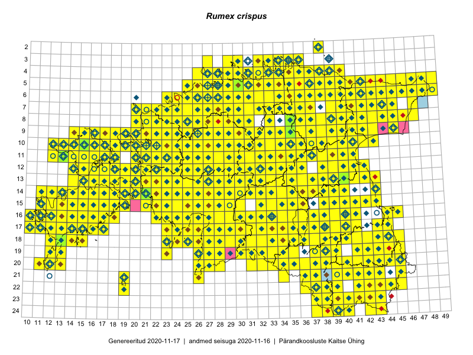

Rumex crispus — kärnoblikas
Polygonaceae :: Rumex crispus L. (1933); Rumex crispus subsp. littoreus (Hardy) Akeroyd (8)

Kaart põhineb 3063 kirjel:
vaatlusi 1851
herbaareksemplare 90
PKÜ kirjeid1 1016
ELFi kirjeid2 100
LVA kirjeid3 6
Taime kaasaegsed ja ajaloolised leiukohad asuvad 521 ruudus.
Tingmärgid ja leidudega ruutude arvud periooditi uues (u) ja 2005 andmestikus (v)
| █ | vahemik | u4 | v5 |
|---|---|---|---|
| █ | 2006–2020 | 507 | – |
| ◆/◇ | 1971–2005 | 423 | 418 |
| ○ | 1921–1970 | 102 | 11 |
| + | kuni 1920 | 11 | 0 |
| × | hävinud | – | 0 |
| ? | kaheldav | – | 0 |
| Ruut | Leidja(d) | Leiuaeg | Kirje |
|---|---|---|---|
| 16-28 | Indrek Tammekänd | 2020-10-09 | ruut/ala: Rumex crispus L. |
| 14-16 | Mari Reitalu | 2020-09-27 | ruut/ala: Rumex crispus L. |
| 19-39 | Toomas Kukk | 2020-09-12 | ruut/ala: Rumex crispus L. |
| 19-39 | Toomas Kukk | 2020-09-12 | PKÜ: 21027 |
| 19-38 | Ott Luuk | 2020-09-12 | PKÜ: 21164 |
| 16-17 | Peedu Saar | 2020-09-11 | PKÜ: 20936 |
| 16-16 | Toomas Kukk | 2020-09-10 | ruut/ala: Rumex crispus L. |
| 16-17 | Peedu Saar | 2020-09-10 | ruut/ala: Rumex crispus L. |
| 14-16 | Ott Luuk, Meeli Mesipuu | 2020-09-10 | PKÜ: 20952 |
| 14-16 | Ott Luuk, Meeli Mesipuu | 2020-09-10 | PKÜ: 20953 |
| 14-16 | Ott Luuk, Meeli Mesipuu | 2020-09-10 | PKÜ: 20956 |
| 16-23 | Toomas Kukk | 2020-09-01 | PKÜ: 20991 |
| 16-23 | Peedu Saar | 2020-09-01 | ruut/ala: Rumex crispus L. |
| 16-30 | Ott Luuk, Meeli Mesipuu | 2020-09-01 | PKÜ: 20874 |
| 16-30 | Ott Luuk, Meeli Mesipuu | 2020-09-01 | PKÜ: 20877 |
| 16-22 | Toomas Kukk | 2020-08-31 | PKÜ: 20700 |
| 16-22 | Toomas Kukk | 2020-08-31 | PKÜ: 20712 |
| 16-22 | Peedu Saar | 2020-08-31 | PKÜ: 20649 |
| 16-22 | Peedu Saar | 2020-08-31 | PKÜ: 20692 |
| 16-22 | Ott Luuk, Meeli Mesipuu | 2020-08-31 | PKÜ: 20674 |
| 16-22 | Ott Luuk, Meeli Mesipuu | 2020-08-31 | PKÜ: 20688 |
| 16-22 | Ott Luuk, Meeli Mesipuu | 2020-08-31 | PKÜ: 20657 |
| 14-22 | Toomas Kukk | 2020-08-30 | PKÜ: 20600 |
| 14-22 | Ott Luuk, Meeli Mesipuu | 2020-08-30 | PKÜ: 20615 |
| 19-29 | Meeli Mesipuu | 2020-08-28 | PKÜ: 20744 |
| 07-33 | Meeli Mesipuu | 2020-08-23 | PKÜ: 20390 |
| 14-16 | Mari Reitalu, Sirje Azarov | 2020-08-19–2020-08-20 | ruut/ala: Rumex crispus L. |
| 03-34 | Toomas Kukk, Ott Luuk, Kersti Tambets, Sten Mander, Kristine Fenske, Maie Itse | 2020-08-19 | ruut/ala: Rumex crispus L. |
| 13-17 | Mari Reitalu, Sirje Azarov | 2020-08-19 | ruut/ala: Rumex crispus L. |
| 15-35 | Peedu Saar | 2020-08-17 | PKÜ: 20538 |
| 15-35 | Peedu Saar | 2020-08-17 | PKÜ: 20533 |
| 16-11 | Toomas Kukk | 2020-08-15 | PKÜ: 21212 |
| 16-11 | Toomas Kukk | 2020-08-15 | PKÜ: 21213 |
| 16-11 | Meeli Mesipuu | 2020-08-15 | PKÜ: 21046 |
| 16-11 | Toomas Kukk | 2020-08-14 | PKÜ: 21209 |
| 16-11 | Toomas Kukk | 2020-08-14 | PKÜ: 21203 |
| 16-11 | Toomas Kukk | 2020-08-14 | PKÜ: 21207 |
| 16-10 | Meeli Mesipuu | 2020-08-14 | PKÜ: 20818 |
| 17-31 | Toomas Kukk, Martin Tikk | 2020-08-12 | ruut/ala: Rumex crispus L. |
| 14-16 | Meeli Mesipuu | 2020-08-11 | PKÜ: 20314 |
| 14-16 | Meeli Mesipuu | 2020-08-11 | PKÜ: 20316 |
| 15-35 | Peedu Saar | 2020-08-10–2020-08-17 | ruut/ala: Rumex crispus L. |
| 15-35 | Peedu Saar | 2020-08-10 | PKÜ: 20572 |
| 12-15 | Peedu Saar, Ott Luuk | 2020-08-07 | ruut/ala: Rumex crispus L. |
| 12-15 | Ott Luuk, Peedu Saar | 2020-08-07 | PKÜ: 20722 |
| 12-15 | Ott Luuk, Peedu Saar | 2020-08-07 | PKÜ: 20725 |
| 10-17 | Peedu Saar | 2020-08-06 | PKÜ: 20609 |
| 13-15 | Ott Luuk, Peedu Saar | 2020-08-06 | PKÜ: 20721 |
| 12-14 | Ott Luuk, Peedu Saar | 2020-08-06 | PKÜ: 20731 |
| 12-14 | Ott Luuk, Peedu Saar | 2020-08-06 | PKÜ: 20734 |
| 13-15 | Ott Luuk, Peedu Saar | 2020-08-06 | PKÜ: 20747 |
| 13-15 | Ott Luuk | 2020-08-06 | ruut/ala: Rumex crispus L. |
| 22-41 | Toomas Kukk, Eerik Leibak | 2020-08-05 | ruut/ala: Rumex crispus L. |
| 22-42 | Toomas Kukk, Eerik Leibak | 2020-08-05 | ruut/ala: Rumex crispus L. |
| 10-23 | Ott Luuk | 2020-08-05 | ruut/ala: Rumex crispus L. |
| 14-40 | Peedu Saar | 2020-08-03 | ruut/ala: Rumex crispus L. |
| 06-27 | Peedu Saar | 2020-07-30 | ruut/ala: Rumex crispus L. |
| 07-44 | Toomas Kukk | 2020-07-29 | PKÜ: 21084 |
| 09-45 | Toomas Kukk | 2020-07-29 | PKÜ: 21086 |
| 08-43 | Toomas Kukk | 2020-07-28 | ruut/ala: Rumex crispus L. |
| 08-42 | Peedu Saar | 2020-07-28 | PKÜ: 20497 |
| 05-30 | Indrek Tammekänd | 2020-07-17 | TAA0153573: Rumex crispus L. |
| 19-39 | Meeli Mesipuu | 2020-07-15 | PKÜ: 20178 |
| 19-39 | Meeli Mesipuu | 2020-07-15 | PKÜ: 20180 |
| 16-39 | Art Villem Adojaan | 2020-07-15 | punkt: Rumex crispus L. |
| 12-22 | Trinus Haitjema | 2020-07-12 | punkt: Rumex crispus L. |
| 06-28 | Toomas Kukk | 2020-07-12 | ruut/ala: Rumex crispus L. |
| 05-32 | Rein Kalamees | 2020-07-12 | ruut/ala: Rumex crispus L. |
| 12-16 | Jaak Pärtel | 2020-07-11 | punkt: Rumex crispus L. |
| 12-16 | Jaak Pärtel | 2020-07-11 | punkt: Rumex crispus L. |
| 12-16 | Jaak Pärtel | 2020-07-11 | punkt: Rumex crispus L. |
| 20-45 | Toomas Kukk, Eerik Leibak | 2020-07-07 | ruut/ala: Rumex crispus L. |
| 17-11 | Rein Kalamees, Ott Luuk | 2020-07-03 | PKÜ: 20449 |
| 17-11 | Rein Kalamees, Ott Luuk | 2020-07-03 | PKÜ: 20450 |
| 17-11 | Rein Kalamees, Ott Luuk | 2020-07-03 | PKÜ: 20451 |
| 17-11 | Rein Kalamees, Ott Luuk | 2020-07-03 | PKÜ: 20459 |
| 17-11 | Rein Kalamees, Ott Luuk | 2020-07-03 | PKÜ: 20460 |
| 17-11 | Rein Kalamees, Ott Luuk | 2020-07-03 | PKÜ: 20452 |
| 17-14 | Peedu Saar, Toomas Kukk | 2020-07-03 | ruut/ala: Rumex crispus L. |
| 17-11 | Meeli Mesipuu | 2020-07-03 | PKÜ: 20190 |
| 17-38 | Jaak Pärtel | 2020-07-03 | punkt: Rumex crispus L. |
| 19-12 | Toomas Kukk | 2020-07-02 | PKÜ: 20528 |
| 19-12 | Toomas Kukk | 2020-07-02 | PKÜ: 20529 |
| 19-12 | Toomas Kukk | 2020-07-02 | PKÜ: 20541 |
| 19-12 | Toomas Kukk | 2020-07-02 | PKÜ: 20527 |
| 17-11 | Ott Luuk, Rein Kalamees | 2020-07-02 | PKÜ: 20233 |
| 17-11 | Meeli Mesipuu | 2020-07-02 | PKÜ: 21282 |
| 17-11 | Meeli Mesipuu | 2020-07-02 | PKÜ: 21284 |
| 17-11 | Meeli Mesipuu | 2020-07-02 | PKÜ: 21288 |
| 17-11 | Toomas Kukk | 2020-07-01 | PKÜ: 20511 |
| 17-11 | Toomas Kukk | 2020-07-01 | PKÜ: 20517 |
| 17-10;17-11 | Peedu Saar | 2020-07-01 | PKÜ: 20470 |
| 17-11 | Peedu Saar | 2020-07-01 | PKÜ: 20473 |
| 16-10;16-11 | Peedu Saar | 2020-07-01 | PKÜ: 20481 |
| 17-11 | Ott Luuk, Rein Kalamees | 2020-07-01 | PKÜ: 20216 |
| 17-11 | Ott Luuk, Rein Kalamees | 2020-07-01 | PKÜ: 20219 |
| 17-11 | Ott Luuk, Rein Kalamees | 2020-07-01 | PKÜ: 20220 |
| 17-11 | Meeli Mesipuu | 2020-07-01 | PKÜ: 21113 |
| 17-11 | Meeli Mesipuu | 2020-07-01 | PKÜ: 21050 |
| 14-22 | Ott Luuk, Rein Kalamees | 2020-06-30 | PKÜ: 20588 |
| 07-28 | Toomas Kukk | 2020-06-15 | PKÜ: 20489 |
| 05-33 | Rein Kalamees, Ott Luuk | 2020-06-09 | PKÜ: 20266 |
| 15-36 | Amaranta Põld, Art Villem Adojaan, Johan Boeijkens, Lisell Toomla, Anni Miller, Mari Remm, Ingrid Alla, Kristjan Adojaan, Jaak Pärtel, Pelle Mellov, Jaan Grosberg | 2020-06-06 | punkt: Rumex crispus L. |
| 10-28 | Aat Sarv, Lemmelill Sarv | 2020-06-06 | punkt: Rumex crispus L. |
| 16-40 | Thea Kull | 2020-05-29–2020-07-03 | ruut/ala: Rumex crispus L. |
| 11-17 | Toomas Kukk, Rein Kalamees | 2019-10-05 | ruut/ala: Rumex crispus L. |
| 11-32 | Indrek Tammekänd | 2019-09-22 | ruut/ala: Rumex crispus L. |
| 10-21 | Ott Luuk | 2019-09-19 | ruut/ala: Rumex crispus L. |
| 10-19 | Peedu Saar, Toomas Kukk | 2019-09-18 | ruut/ala: Rumex crispus L. |
| 10-20 | Ott Luuk | 2019-09-18 | ruut/ala: Rumex crispus L. |
| 09-19 | Toomas Kukk, Peedu Saar | 2019-09-17 | ruut/ala: Rumex crispus L. |
| 10-18 | Ott Luuk | 2019-09-17 | ruut/ala: Rumex crispus L. |
| 09-18 | Ott Luuk | 2019-09-17 | ruut/ala: Rumex crispus L. |
| 06-47 | Peedu Saar, Timo Luhamäe | 2019-09-12 | ruut/ala: Rumex crispus L. |
| 05-47 | Peedu Saar, Timo Luhamäe | 2019-09-12 | ruut/ala: Rumex crispus L. |
| 07-44 | Meeli Mesipuu, Ott Luuk | 2019-09-12 | ruut/ala: Rumex crispus L. |
| 06-45 | Thea Kull, Toomas Kukk | 2019-09-11 | punkt: Rumex crispus L. |
| 05-46 | Thea Kull, Toomas Kukk | 2019-09-11 | ruut/ala: Rumex crispus L. |
| 06-44 | Ott Luuk, Meeli Mesipuu | 2019-09-11 | ruut/ala: Rumex crispus L. |
| 05-43 | Ott Luuk, Meeli Mesipuu | 2019-09-11 | ruut/ala: Rumex crispus L. |
| 05-44 | Meeli Mesipuu, Ott Luuk | 2019-09-11 | ruut/ala: Rumex crispus L. |
| 10-40 | Toomas Kukk, Thea Kull | 2019-09-10 | ruut/ala: Rumex crispus L. |
| 09-41 | Peedu Saar, Timo Luhamäe | 2019-09-10 | ruut/ala: Rumex crispus L. |
| 08-43 | Ott Luuk, Meeli Mesipuu | 2019-09-10 | ruut/ala: Rumex crispus L. |
| 09-22 | Ott Luuk | 2019-09-03–2019-09-04 | ruut/ala: Rumex crispus L. |
| 05-27 | Peedu Saar, Ott Luuk | 2019-09-02 | ruut/ala: Rumex crispus L. |
| 05-26 | Ott Luuk, Peedu Saar | 2019-09-02 | ruut/ala: Rumex crispus L. |
| 15-13 | Sirje Azarov, Mari Reitalu | 2019-08-31 | ELF: 9 |
| 15-13 | Mari Reitalu, Sirje Azarov | 2019-08-31 | ruut/ala: Rumex crispus L. |
| 15-28 | Toomas Kukk, Peedu Saar | 2019-08-29 | ruut/ala: Rumex crispus L. |
| 12-31 | Ott Luuk, Eerik Leibak | 2019-08-29 | ruut/ala: Rumex crispus L. |
| 14-31 | Ott Luuk, Eerik Leibak | 2019-08-28 | ruut/ala: Rumex crispus L. |
| 13-30 | Mari Reitalu, Thea Kull | 2019-08-28 | ruut/ala: Rumex crispus L. |
| 17-33 | Toomas Kukk, Peedu Saar, Martin Tikk | 2019-08-27 | ruut/ala: Rumex crispus L. |
| 17-32 | Peedu Saar, Martin Tikk, Toomas Kukk | 2019-08-27 | ruut/ala: Rumex crispus L. |
| 15-35 | Meeli Mesipuu, Timo Luhamäe | 2019-08-27 | ruut/ala: Rumex crispus L. |
| 09-21 | Peedu Saar, Ott Luuk, Sten Mander, Kersti Tambets, Kristine Fenske | 2019-08-23 | ruut/ala: Rumex crispus L. |
| 08-20 | Ott Luuk, Peedu Saar, Sten Mander, Kersti Tambets, Kristine Fenske | 2019-08-23 | punkt: Rumex crispus L. |
| 11-36 | Peedu Saar | 2019-08-10 | ruut/ala: Rumex crispus L. |
| 09-40 | Rein Kalamees, Toomas Kukk | 2019-08-09 | ruut/ala: Rumex crispus L. |
| 07-32 | Ott Luuk, Jaak-Albert Metsoja | 2019-08-08 | ruut/ala: Rumex crispus L. |
| 07-33 | Ott Luuk, Jaak-Albert Metsoja | 2019-08-08 | ruut/ala: Rumex crispus L. |
| 04-35 | Meeli Mesipuu | 2019-08-08 | ruut/ala: Rumex crispus L. |
| 07-35 | Toomas Kukk, Rein Kalamees, Kaur Maran | 2019-08-07 | ruut/ala: Rumex crispus L. |
| 07-34 | Toomas Kukk, Rein Kalamees, Kaur Maran | 2019-08-07 | ruut/ala: Rumex crispus L. |
| 06-36 | Peedu Saar, Timo Luhamäe | 2019-08-07 | ruut/ala: Rumex crispus L. |
| 03-32 | Ott Luuk, Jaak-Albert Metsoja | 2019-08-07 | ruut/ala: Rumex crispus L. |
| 03-33 | Ott Luuk, Jaak-Albert Metsoja | 2019-08-07 | ruut/ala: Rumex crispus L. |
| 04-33 | Ott Luuk, Jaak-Albert Metsoja | 2019-08-07 | ruut/ala: Rumex crispus L. |
| 04-36 | Meeli Mesipuu | 2019-08-06–2019-08-07 | ruut/ala: Rumex crispus L. |
| 03-34 | Rein Kalamees, Toomas Kukk | 2019-08-06 | ruut/ala: Rumex crispus L. |
| 05-38 | Ott Luuk, Jaak-Albert Metsoja | 2019-08-06 | ruut/ala: Rumex crispus L. |
| 04-38 | Ott Luuk, Jaak-Albert Metsoja | 2019-08-06 | ruut/ala: Rumex crispus L. |
| 04-36 | Meeli Mesipuu | 2019-08-06 | ruut/ala: Rumex crispus L. |
| 02-38 | Meeli Mesipuu | 2019-08-06 | ruut/ala: Rumex crispus L. |
| 04-32 | Rein Kalamees, Toomas Kukk | 2019-08-05 | ruut/ala: Rumex crispus L. |
| 06-31 | Peedu Saar, Timo Luhamäe | 2019-08-05 | ruut/ala: Rumex crispus L. |
| 08-36 | Ott Luuk, Jaak-Albert Metsoja | 2019-08-05 | ruut/ala: Rumex crispus L. |
| 12-38 | Ulvi Selgis | 2019-08-03 | LVA: 1874796796 |
| 04-27 | Ott Luuk | 2019-08-02 | ruut/ala: Rumex crispus L. |
| 22-42 | Toomas Kukk, Peedu Saar | 2019-07-31 | ruut/ala: Rumex crispus L. |
| 21-43 | Toomas Kukk, Peedu Saar | 2019-07-31 | ruut/ala: Rumex crispus L. |
| 24-42 | Peedu Saar, Toomas Kukk | 2019-07-31 | punkt: Rumex crispus L. |
| 24-42 | Peedu Saar, Toomas Kukk | 2019-07-31 | ruut/ala: Rumex crispus L. |
| 10-32 | Ott Luuk | 2019-07-31 | ruut/ala: Rumex crispus L. |
| 06-28 | Toomas Kukk | 2019-07-29 | ruut/ala: Rumex crispus L. |
| 09-31 | Ott Luuk, Toivo Sepp | 2019-07-25 | ruut/ala: Rumex crispus L. |
| 11-30 | Ott Luuk, Toivo Sepp | 2019-07-23 | ruut/ala: Rumex crispus L. |
| 17-38 | Meeli Mesipuu | 2019-07-23 | ruut/ala: Rumex crispus L. |
| 11-22 | Tõnu Ploompuu, Eliko Kõiv | 2019-07-21 | ELF: 231 |
| 18-37 | Peedu Saar, Ott Luuk | 2019-07-15 | ruut/ala: Rumex crispus L. |
| 04-33 | Rein Kalamees | 2019-07-14 | ruut/ala: Rumex crispus L. |
| 17-12 | Mari Reitalu | 2019-07-14 | ELF: 24782 |
| 23-41 | Toomas Kukk, Indrek Tammekänd | 2019-07-12 | ruut/ala: Rumex crispus L. |
| 23-42 | Toomas Kukk, Indrek Tammekänd | 2019-07-12 | ruut/ala: Rumex crispus L. |
| 24-39 | Peedu Saar, Timo Luhamäe | 2019-07-12 | ruut/ala: Rumex crispus L. |
| 24-37 | Peedu Saar, Timo Luhamäe | 2019-07-12 | ruut/ala: Rumex crispus L. |
| 22-41 | Toomas Kukk, Indrek Tammekänd | 2019-07-11 | ruut/ala: Rumex crispus L. |
| 23-43 | Ott Luuk, Tiit Hallikma | 2019-07-11 | ruut/ala: Rumex crispus L. |
| 21-41 | Toomas Kukk, Indrek Tammekänd | 2019-07-10 | ruut/ala: Rumex crispus L. |
| 22-37 | Peedu Saar, Timo Luhamäe | 2019-07-10 | ruut/ala: Rumex crispus L. |
| 22-38 | Peedu Saar, Timo Luhamäe | 2019-07-10 | ruut/ala: Rumex crispus L. |
| 22-39 | Peedu Saar, Timo Luhamäe | 2019-07-10 | ruut/ala: Rumex crispus L. |
| 20-45 | Ott Luuk, Tiit Hallikma | 2019-07-10 | ruut/ala: Rumex crispus L. |
| 20-41 | Toomas Kukk, Indrek Tammekänd | 2019-07-09 | ruut/ala: Rumex crispus L. |
| 20-36 | Peedu Saar, Timo Luhamäe | 2019-07-09 | ruut/ala: Rumex crispus L. |
| 20-44 | Ott Luuk, Tiit Hallikma | 2019-07-09 | ruut/ala: Rumex crispus L. |
| 06-39 | Peedu Saar, Ott Luuk | 2019-07-05 | ruut/ala: Rumex crispus L. |
| 04-40 | Ott Luuk, Peedu Saar | 2019-07-05 | ruut/ala: Rumex crispus L. |
| 11-13 | Toomas Kukk | 2019-07-04 | ruut/ala: Rumex crispus L. |
| 08-41 | Ott Luuk, Peedu Saar | 2019-07-04 | ruut/ala: Rumex crispus L. |
| 10-16 | Toomas Kukk | 2019-07-03 | ruut/ala: Rumex crispus L. |
| 14-39 | Ott Luuk, Kaili Kattai | 2019-07-03 | ruut/ala: Rumex crispus L. |
| 10-17 | Eerik Leibak, Toomas Kukk | 2019-07-01 | ruut/ala: Rumex crispus L. |
| 05-28 | Meeli Mesipuu | 2019-06-26 | ruut/ala: Rumex crispus L. |
| 05-28 | Meeli Mesipuu | 2019-06-26 | ruut/ala: Rumex crispus L. |
| 05-27 | Leif-August Kirs, Anna-Grete Rebane, Urmas Lanto | 2019-06-14 | punkt: Rumex crispus L. |
| 16-27 | Indrek Tammekänd, Liine Tammekänd | 2019-06-14 | punkt: Rumex crispus L. |
| 17-30 | Indrek Tammekänd | 2019-06-10 | ruut/ala: Rumex crispus L. |
| 15-26 | Indrek Tammekänd | 2019-06-05 | ruut/ala: Rumex crispus L. |
| 06-27 | Mari Reitalu | 2019-05-30 | ruut/ala: Rumex crispus L. |
| 16-28 | Indrek Tammekänd | 2019-05-29–2019-08-23 | ruut/ala: Rumex crispus L. |
| 12-18 | Toomas Kukk | 2019-05-04 | ruut/ala: Rumex crispus L. |
| 17-24 | Peedu Saar | 2018-09-20 | ruut/ala: Rumex crispus L. |
| 14-20 | Toomas Kukk | 2018-09-19 | ruut/ala: Rumex crispus L. |
| 14-20 | Peedu Saar | 2018-09-19 | ruut/ala: Rumex crispus L. |
| 15-42 | Ott Luuk, Meeli Mesipuu | 2018-09-19 | ruut/ala: Rumex crispus L. |
| 15-21 | Toomas Kukk, Peedu Saar, Heikki Luhamaa | 2018-09-18 | ruut/ala: Rumex crispus L. |
| 15-22 | Toomas Kukk, Peedu Saar, Heikki Luhamaa | 2018-09-18 | ruut/ala: Rumex crispus L. |
| 15-21 | Toomas Kukk | 2018-09-18 | ruut/ala: Rumex crispus L. |
| 15-21 | Peedu Saar | 2018-09-18 | ruut/ala: Rumex crispus L. |
| 12-18 | Toomas Kukk, Peeter Pärn | 2018-09-15 | ruut/ala: Rumex crispus L. |
| 04-28 | Ott Luuk | 2018-09-07 | ruut/ala: Rumex crispus L. |
| 05-41 | Peedu Saar, Toomas Kukk | 2018-09-03 | ruut/ala: Rumex crispus L. |
| 16-17 | Toomas Kukk, Tiit Hallikma | 2018-08-30 | ruut/ala: Rumex crispus L. |
| 11-27 | Ott Luuk, Toivo Sepp | 2018-08-30 | ruut/ala: Rumex crispus L. |
| 17-10 | Toomas Kukk, Tiit Hallikma, Mari Reitalu | 2018-08-29 | ruut/ala: Rumex crispus L. |
| 10-30 | Ott Luuk, Toivo Sepp | 2018-08-27 | ruut/ala: Rumex crispus L. |
| 11-28 | Ott Luuk, Toivo Sepp | 2018-08-24–2018-08-30 | ruut/ala: Rumex crispus L. |
| 14-38 | Peedu Saar | 2018-08-23 | ruut/ala: Rumex crispus L. |
| 11-31 | Ott Luuk | 2018-08-23 | ruut/ala: Rumex crispus L. |
| 11-33 | Ott Luuk, Toivo Sepp | 2018-08-22 | ruut/ala: Rumex crispus L. |
| 12-25 | Toomas Kukk, Ott Luuk, Peedu Saar | 2018-08-17 | ruut/ala: Rumex crispus L. |
| 11-26 | Peedu Saar, Toomas Kukk, Ott Luuk, Kersti Tambets, Sten Mander | 2018-08-16 | ruut/ala: Rumex crispus L. |
| 12-31 | Ott Luuk, Toomas Kukk, Peedu Saar, Sten Mander, Kersti Tambets | 2018-08-16 | ruut/ala: Rumex crispus L. |
| 05-43 | Indrek Tammekänd | 2018-08-11 | ruut/ala: Rumex crispus L. |
| 17-41 | Toomas Kukk, Tiit Hallikma | 2018-08-09 | ruut/ala: Rumex crispus L. |
| 23-37 | Toomas Kukk, Tiit Hallikma | 2018-08-09 | punkt: Rumex crispus L. |
| 04-33 | Peedu Saar, Toomas Kukk | 2018-08-08 | ruut/ala: Rumex crispus L. |
| 05-31 | Peedu Saar, Toomas Kukk | 2018-08-07 | ruut/ala: Rumex crispus L. |
| 19-31 | Peedu Saar | 2018-08-03 | ruut/ala: Rumex crispus L. |
| 20-33 | Peedu Saar | 2018-08-03 | ruut/ala: Rumex crispus L. |
| 08-28 | Tiina Elvisto, Riima Niidas | 2018-08-01 | punkt: Rumex crispus L. |
| 17-33 | Peedu Saar | 2018-08-01 | ruut/ala: Rumex crispus L. |
| 12-40 | Peedu Saar | 2018-07-20 | ruut/ala: Rumex crispus L. |
| 15-42 | Peedu Saar | 2018-07-20 | ruut/ala: Rumex crispus L. |
| 22-42 | Toomas Kukk | 2018-07-18 | ruut/ala: Rumex crispus L. |
| 10-18 | Toomas Kukk, Meeli Mesipuu | 2018-07-11 | ruut/ala: Rumex crispus L. |
| 10-17 | Toomas Kukk | 2018-07-10 | ruut/ala: Rumex crispus L. |
| 10-18 | Toomas Kukk | 2018-07-10 | ruut/ala: Rumex crispus L. |
| 10-18 | Toomas Kukk | 2018-07-10 | ruut/ala: Rumex crispus L. |
| 10-17 | Peedu Saar | 2018-07-10 | ruut/ala: Rumex crispus L. |
| 10-17 | Peedu Saar | 2018-07-10 | ruut/ala: Rumex crispus L. |
| 10-18 | Meeli Mesipuu | 2018-07-10 | ruut/ala: Rumex crispus L. |
| 11-18 | Toomas Kukk | 2018-07-09 | ruut/ala: Rumex crispus L. |
| 11-18 | Toomas Kukk | 2018-07-09 | ruut/ala: Rumex crispus L. |
| 10-18 | Peedu Saar | 2018-07-09 | ruut/ala: Rumex crispus L. |
| 11-18 | Peedu Saar | 2018-07-09 | ruut/ala: Rumex crispus L. |
| 11-18 | Meeli Mesipuu | 2018-07-09 | ruut/ala: Rumex crispus L. |
| 06-24 | Peedu Saar, Jaak-Albert Metsoja, Mari Metsoja | 2018-07-06 | ruut/ala: Rumex crispus L. |
| 06-23 | Ott Luuk, Meeli Mesipuu, Jaak-Albert Metsoja, Mari Metsoja, Peedu Saar | 2018-07-05 | ruut/ala: Rumex crispus L. |
| 06-23 | Ott Luuk, Meeli Mesipuu, Jaak-Albert Metsoja, Mari Metsoja | 2018-07-05 | ruut/ala: Rumex crispus L. |
| 06-23 | Ott Luuk, Meeli Mesipuu, Jaak-Albert Metsoja, Mari Metsoja, Peedu Saar | 2018-07-04–2018-07-06 | ruut/ala: Rumex crispus L. |
| 06-23 | Peedu Saar | 2018-07-04 | ruut/ala: Rumex crispus L. |
| 15-19 | Peedu Saar, Ott Luuk, Toomas Kukk, Ilmar Uibopuu | 2018-06-28 | ruut/ala: Rumex crispus L. |
| 16-40 | Toomas Kukk | 2018-06-16 | ruut/ala: Rumex crispus L. |
| 19-35 | Siiri Kõljalg | 2018-06-15 | punkt: Rumex crispus L. |
| 10-12 | Liis Soonik | 2018-06-15 | punkt: Rumex crispus L. |
| 20-39 | Ilmar Uibopuu | 2018-06-15 | LVA: -1437231006 |
| 16-31 | Indrek Tammekänd | 2018-06-04–2018-06-05 | ruut/ala: Rumex crispus L. |
| 18-23 | Indrek Tammekänd | 2018-05-31–2018-06-02 | ruut/ala: Rumex crispus L. |
| 18-24 | Indrek Tammekänd | 2018-05-31–2018-06-02 | ruut/ala: Rumex crispus L. |
| 15-19 | Mari Reitalu, Sirje Azarov, Maris Sepp | 2018-05-23 | ruut/ala: Rumex crispus L. |
| 16-24 | Indrek Tammekänd | 2017-10-11 | ruut/ala: Rumex crispus L. |
| 03-29 | Toomas Kukk | 2017-09-29 | ruut/ala: Rumex crispus L. |
| 03-30 | Toomas Kukk | 2017-09-29 | ruut/ala: Rumex crispus L. |
| 03-30 | Peedu Saar | 2017-09-29 | ruut/ala: Rumex crispus L. |
| 07-37 | Toomas Kukk, Peedu Saar | 2017-09-28 | ruut/ala: Rumex crispus L. |
| 09-40 | Toomas Kukk, Peedu Saar | 2017-09-28 | ruut/ala: Rumex crispus L. |
| 04-38 | Peedu Saar, Toomas Kukk | 2017-09-28 | ruut/ala: Rumex crispus L. |
| 09-35 | Peedu Saar, Toomas Kukk | 2017-09-27 | ruut/ala: Rumex crispus L. |
| 08-35 | Peedu Saar, Toomas Kukk | 2017-09-27 | ruut/ala: Rumex crispus L. |
| 10-37 | Peedu Saar, Toomas Kukk | 2017-09-27 | ruut/ala: Rumex crispus L. |
| 08-38 | Peedu Saar, Toomas Kukk | 2017-09-27 | ruut/ala: Rumex crispus L. |
| 12-16 | Peedu Saar, Ott Luuk | 2017-09-15 | ruut/ala: Rumex crispus L. |
| 09-15 | Peedu Saar, Ott Luuk | 2017-09-15 | ruut/ala: Rumex crispus L. |
| 10-14 | Peedu Saar, Ott Luuk | 2017-09-14 | ruut/ala: Rumex crispus L. |
| 10-15 | Ott Luuk, Peedu Saar | 2017-09-14 | ruut/ala: Rumex crispus L. |
| 10-13 | Ott Luuk, Peedu Saar | 2017-09-14 | ruut/ala: Rumex crispus L. |
| 12-15 | Toomas Kukk, Indrek Tammekänd | 2017-09-13 | ruut/ala: Rumex crispus L. |
| 11-15 | Peedu Saar, Ott Luuk | 2017-09-13 | ruut/ala: Rumex crispus L. |
| 11-14 | Ott Luuk, Peedu Saar | 2017-09-13 | ruut/ala: Rumex crispus L. |
| 11-16 | Ott Luuk, Peedu Saar | 2017-09-13 | ruut/ala: Rumex crispus L. |
| 11-12 | Toomas Kukk, Indrek Tammekänd | 2017-09-12 | ruut/ala: Rumex crispus L. |
| 11-13 | Toomas Kukk, Indrek Tammekänd | 2017-09-12 | ruut/ala: Rumex crispus L. |
| 10-12 | Toomas Kukk, Indrek Tammekänd | 2017-09-12 | ruut/ala: Rumex crispus L. |
| 11-13 | Toomas Kukk, Indrek Tammekänd | 2017-09-12 | TAA0141916: Rumex crispus L. |
| 11-13 | Toomas Kukk, Indrek Tammekänd | 2017-09-12 | TAA0141917: Rumex crispus L. |
| 09-17 | Peedu Saar, Ott Luuk | 2017-09-12 | ruut/ala: Rumex crispus L. |
| 09-16 | Peedu Saar, Ott Luuk | 2017-09-12 | ruut/ala: Rumex crispus L. |
| 11-18 | Peedu Saar, Ott Luuk | 2017-09-12 | ruut/ala: Rumex crispus L. |
| 10-18 | Ott Luuk, Peedu Saar | 2017-09-12 | ruut/ala: Rumex crispus L. |
| 12-17 | Toomas Kukk, Indrek Tammekänd | 2017-09-11 | ruut/ala: Rumex crispus L. |
| 11-17 | Toomas Kukk, Indrek Tammekänd | 2017-09-11 | ruut/ala: Rumex crispus L. |
| 10-17 | Ott Luuk, Peedu Saar | 2017-09-11 | ruut/ala: Rumex crispus L. |
| 12-18 | Toomas Kukk, Peeter Pärn | 2017-09-09–2017-09-10 | ruut/ala: Rumex crispus L. |
| 08-29 | Peedu Saar, Toomas Kukk | 2017-09-08 | ruut/ala: Rumex crispus L. |
| 10-24 | Peedu Saar, Toomas Kukk | 2017-09-07 | ruut/ala: Rumex crispus L. |
| 10-21 | Peedu Saar, Toomas Kukk | 2017-09-07 | ruut/ala: Rumex crispus L. |
| 11-24 | Peedu Saar, Toomas Kukk | 2017-09-07 | ruut/ala: Rumex crispus L. |
| 13-21 | Peedu Saar, Toomas Kukk | 2017-09-06 | ruut/ala: Rumex crispus L. |
| 14-25 | Peedu Saar, Toomas Kukk | 2017-09-06 | ruut/ala: Rumex crispus L. |
| 17-31 | Peedu Saar, Toomas Kukk | 2017-09-06 | ruut/ala: Rumex crispus L. |
| 14-26 | Indrek Tammekänd | 2017-09-04 | ruut/ala: Rumex crispus L. |
| 17-26 | Toomas Kukk, Ott Luuk, Kersti Tambets, Timo Luhamäe, Sten Mander | 2017-08-30 | ruut/ala: Rumex crispus L. |
| 17-31 | Ott Luuk, Toomas Kukk, Sten Mander, Kersti Tambets, Timo Luhamäe | 2017-08-29 | ruut/ala: Rumex crispus L. |
| 11-40 | Peedu Saar, Ott Luuk | 2017-08-23 | ruut/ala: Rumex crispus L. |
| 12-40 | Peedu Saar, Ott Luuk | 2017-08-23 | punkt: Rumex crispus L. |
| 12-41 | Ott Luuk, Peedu Saar | 2017-08-23 | ruut/ala: Rumex crispus L. |
| 14-43 | Peedu Saar, Ott Luuk | 2017-08-21 | ruut/ala: Rumex crispus L. |
| 14-37 | Indrek Tammekänd | 2017-08-17–2017-08-18 | ruut/ala: Rumex crispus L. |
| 14-36 | Ott Luuk | 2017-08-15 | ruut/ala: Rumex crispus L. |
| 14-37 | Meeli Mesipuu, Helen Toom | 2017-08-14 | ruut/ala: Rumex crispus L. |
| 16-28 | Peedu Saar, Timo Luhamäe | 2017-08-11 | ruut/ala: Rumex crispus L. |
| 15-28 | Peedu Saar, Timo Luhamäe | 2017-08-11 | ruut/ala: Rumex crispus L. |
| 14-28 | Ott Luuk, Indrek Tammekänd | 2017-08-11 | ruut/ala: Rumex crispus L. |
| 14-27 | Ott Luuk, Indrek Tammekänd | 2017-08-11 | ruut/ala: Rumex crispus L. |
| 14-29 | Ilmar Uibopuu, Toomas Kukk | 2017-08-11 | ruut/ala: Rumex crispus L. |
| 15-29 | Ilmar Uibopuu, Toomas Kukk | 2017-08-11 | ruut/ala: Rumex crispus L. |
| 11-25 | Toomas Kukk, Eerik Leibak | 2017-08-10 | ruut/ala: Rumex crispus L. |
| 05-26 | Peedu Saar, Timo Luhamäe | 2017-08-10 | ruut/ala: Rumex crispus L. |
| 11-20 | Ott Luuk, Ilmar Uibopuu | 2017-08-10 | ruut/ala: Rumex crispus L. |
| 07-25 | Mari Reitalu, Indrek Tammekänd | 2017-08-10 | ruut/ala: Rumex crispus L. |
| 07-23 | Mari Reitalu, Indrek Tammekänd | 2017-08-10 | ruut/ala: Rumex crispus L. |
| 11-21 | Ilmar Uibopuu, Ott Luuk | 2017-08-10 | ruut/ala: Rumex crispus L. |
| 11-24 | Eerik Leibak, Toomas Kukk | 2017-08-10 | ruut/ala: Rumex crispus L. |
| 09-29 | Toomas Kukk, Ilmar Uibopuu, Kadri Kuusksalu | 2017-08-09 | ruut/ala: Rumex crispus L. |
| 08-30 | Thea Kull, Ott Luuk | 2017-08-09 | ruut/ala: Rumex crispus L. |
| 12-24 | Peedu Saar, Timo Luhamäe | 2017-08-09 | ruut/ala: Rumex crispus L. |
| 08-29 | Ott Luuk, Thea Kull | 2017-08-09 | ruut/ala: Rumex crispus L. |
| 12-29 | Meeli Mesipuu, Indrek Tammekänd | 2017-08-09 | ruut/ala: Rumex crispus L. |
| 12-30 | Meeli Mesipuu, Indrek Tammekänd | 2017-08-09 | ruut/ala: Rumex crispus L. |
| 12-27 | Mari Reitalu, Eerik Leibak | 2017-08-09 | ruut/ala: Rumex crispus L. |
| 12-26 | Mari Reitalu, Eerik Leibak | 2017-08-09 | ruut/ala: Rumex crispus L. |
| 09-28 | Ilmar Uibopuu, Kadri Kuusksalu, Toomas Kukk, Ott Luuk | 2017-08-09 | ruut/ala: Rumex crispus L. |
| 08-26 | Toomas Kukk, Ilmar Uibopuu, Kadri Kuusksalu | 2017-08-08 | ruut/ala: Rumex crispus L. |
| 07-26 | Toomas Kukk, Ilmar Uibopuu, Kadri Kuusksalu | 2017-08-08 | ruut/ala: Rumex crispus L. |
| 10-28 | Thea Kull, Ott Luuk | 2017-08-08 | ruut/ala: Rumex crispus L. |
| 07-27 | Peedu Saar, Timo Luhamäe | 2017-08-08 | ruut/ala: Rumex crispus L. |
| 11-28 | Ott Luuk, Thea Kull | 2017-08-08 | ruut/ala: Rumex crispus L. |
| 09-27 | Meeli Mesipuu, Indrek Tammekänd | 2017-08-08 | ruut/ala: Rumex crispus L. |
| 09-26 | Meeli Mesipuu, Indrek Tammekänd | 2017-08-08 | ruut/ala: Rumex crispus L. |
| 08-27 | Mari Reitalu, Eerik Leibak | 2017-08-08 | ruut/ala: Rumex crispus L. |
| 08-28 | Mari Reitalu, Eerik Leibak | 2017-08-08 | ruut/ala: Rumex crispus L. |
| 13-37 | Toomas Kukk, Ilmar Uibopuu | 2017-08-07 | ruut/ala: Rumex crispus L. |
| 13-33 | Toomas Kukk, Ilmar Uibopuu | 2017-08-07 | ruut/ala: Rumex crispus L. |
| 12-33 | Thea Kull, Ott Luuk | 2017-08-07 | ruut/ala: Rumex crispus L. |
| 14-34 | Peedu Saar, Timo Luhamäe | 2017-08-07 | ruut/ala: Rumex crispus L. |
| 13-34 | Peedu Saar, Timo Luhamäe | 2017-08-07 | ruut/ala: Rumex crispus L. |
| 12-32 | Ott Luuk, Thea Kull | 2017-08-07 | ruut/ala: Rumex crispus L. |
| 14-19 | Meeli Mesipuu | 2017-08-07 | ruut/ala: Rumex crispus L. |
| 14-20 | Meeli Mesipuu | 2017-08-07 | ruut/ala: Rumex crispus L. |
| 14-21 | Mari Reitalu | 2017-08-07 | ruut/ala: Rumex crispus L. |
| 07-20 | Toomas Kukk | 2017-08-03 | ruut/ala: Rumex crispus L. |
| 12-34 | Ott Luuk, Thea Kull | 2017-08-03 | ruut/ala: Rumex crispus L. |
| 16-39 | Thea Kull, Ott Luuk | 2017-08-01 | ruut/ala: Rumex crispus L. |
| 16-37 | Ott Luuk, Thea Kull | 2017-08-01 | ruut/ala: Rumex crispus L. |
| 07-24 | Toomas Kukk, Ilmar Uibopuu | 2017-07-30 | ruut/ala: Rumex crispus L. |
| 08-23 | Toomas Kukk, Ilmar Uibopuu | 2017-07-30 | ruut/ala: Rumex crispus L. |
| 08-22 | Toomas Kukk, Ilmar Uibopuu | 2017-07-29 | ruut/ala: Rumex crispus L. |
| 07-21 | Toomas Kukk, Ilmar Uibopuu | 2017-07-28 | ruut/ala: Rumex crispus L. |
| 08-21 | Toomas Kukk, Ilmar Uibopuu | 2017-07-28 | ruut/ala: Rumex crispus L. |
| 21-36 | Peedu Saar, Ott Luuk | 2017-07-28 | ruut/ala: Rumex crispus L. |
| 22-36 | Ott Luuk, Peedu Saar | 2017-07-28 | ruut/ala: Rumex crispus L. |
| 06-23 | Toomas Kukk | 2017-07-27 | ruut/ala: Rumex crispus L. |
| 06-23 | Toomas Kukk | 2017-07-27 | ruut/ala: Rumex crispus L. |
| 23-39 | Peedu Saar, Ott Luuk | 2017-07-27 | ruut/ala: Rumex crispus L. |
| 22-39 | Ott Luuk, Peedu Saar | 2017-07-27 | ruut/ala: Rumex crispus L. |
| 06-24 | Ilmar Uibopuu, Kadri Kuusksalu | 2017-07-27 | ruut/ala: Rumex crispus L. |
| 06-23 | Toomas Kukk, Ilmar Uibopuu, Kadri Kuusksalu | 2017-07-26 | ruut/ala: Rumex crispus L. |
| 14-39 | Peedu Saar | 2017-07-26 | ruut/ala: Rumex crispus L. |
| 19-38 | Peedu Saar, Ott Luuk | 2017-07-25 | ruut/ala: Rumex crispus L. |
| 20-38 | Ott Luuk, Peedu Saar | 2017-07-25 | ruut/ala: Rumex crispus L. |
| 12-42 | Peedu Saar | 2017-07-24 | ruut/ala: Rumex crispus L. |
| 13-43 | Peedu Saar | 2017-07-24 | ruut/ala: Rumex crispus L. |
| 20-37 | Triin Reitalu, Ansis Blaus | 2017-07-23 | punkt: Rumex crispus L. |
| 24-42 | Maili Lehtpuu | 2017-07-23 | punkt: Rumex crispus L. |
| 16-40 | Meeli Mesipuu | 2017-07-22–2017-07-30 | ruut/ala: Rumex crispus L. |
| 10-30 | Toivo Sepp | 2017-07-22 | punkt: Rumex crispus L. |
| 20-39 | Ilmar Uibopuu | 2017-07-21–2017-07-24 | ruut/ala: Rumex crispus L. |
| 06-48 | Toomas Kukk | 2017-07-21 | ruut/ala: Rumex crispus L. |
| 06-49 | Toomas Kukk | 2017-07-21 | ruut/ala: Rumex crispus L. |
| 06-31 | Peedu Saar, Ott Luuk | 2017-07-21 | ruut/ala: Rumex crispus L. |
| 06-33 | Ott Luuk, Peedu Saar | 2017-07-21 | ruut/ala: Rumex crispus L. |
| 04-27 | Peedu Saar | 2017-07-20 | ruut/ala: Rumex crispus L. |
| 03-27 | Ott Luuk | 2017-07-20 | ruut/ala: Rumex crispus L. |
| 04-26 | Ott Luuk | 2017-07-20 | ruut/ala: Rumex crispus L. |
| 17-23 | Indrek Tammekänd, Eike Tammekänd | 2017-07-20 | ruut/ala: Rumex crispus L. |
| 16-23 | Indrek Tammekänd, Eike Tammekänd | 2017-07-20 | ruut/ala: Rumex crispus L. |
| 23-39 | Triin Reitalu, Ansis Blaus | 2017-07-19 | punkt: Rumex crispus L. |
| 23-39 | Triin Reitalu, Ansis Blaus | 2017-07-19 | punkt: Rumex crispus L. |
| 06-34 | Peedu Saar, Ott Luuk | 2017-07-19 | ruut/ala: Rumex crispus L. |
| 06-35 | Ott Luuk, Peedu Saar | 2017-07-19 | ruut/ala: Rumex crispus L. |
| 22-41 | Triin Reitalu, Ansis Blaus | 2017-07-18 | punkt: Rumex crispus L. |
| 08-40 | Peedu Saar, Ott Luuk | 2017-07-18 | ruut/ala: Rumex crispus L. |
| 08-38 | Ott Luuk, Peedu Saar | 2017-07-18 | ruut/ala: Rumex crispus L. |
| 06-28 | Evelin Laanest, Ilmar Uibopuu | 2017-07-18 | LVA: 1141412130 |
| 16-40 | Peedu Saar | 2017-07-10–2017-07-11 | ruut/ala: Rumex crispus L. |
| 11-15 | Sander Laherand | 2017-06-23 | punkt: Rumex crispus L. |
| 18-25 | Indrek Tammekänd, Jaak Tammekänd, Ly Tammekänd, Aivo Klein | 2017-05-30 | ruut/ala: Rumex crispus L. |
| 03-30 | Tiina Elvisto | 2017-05-27 | ruut/ala: Rumex crispus L. |
| 17-24 | Indrek Tammekänd, Jaak Tammekänd | 2017-05-20 | ruut/ala: Rumex crispus L. |
| 14-22 | Indrek Tammekänd, Jaak Tammekänd, Aivo Klein | 2017-05-19 | ruut/ala: Rumex crispus L. |
| 12-18 | Toomas Kukk | 2017-05-06 | ruut/ala: Rumex crispus L. |
| 15-12 | Toomas Kukk, Meeli Mesipuu | 2016-10-08 | ruut/ala: Rumex crispus L. |
| 17-13 | Ott Luuk, Peedu Saar | 2016-10-08 | ruut/ala: Rumex crispus L. |
| 18-12 | Toomas Kukk, Meeli Mesipuu, Mari Reitalu | 2016-10-07 | ruut/ala: Rumex crispus L. |
| 14-11 | Peedu Saar, Ott Luuk | 2016-10-07 | ruut/ala: Rumex crispus L. |
| 19-12 | Ott Luuk, Peedu Saar | 2016-10-07 | ruut/ala: Rumex crispus L. |
| 15-11 | Meeli Mesipuu, Toomas Kukk, Mari Reitalu | 2016-10-07 | ruut/ala: Rumex crispus L. |
| 14-13 | Toomas Kukk, Meeli Mesipuu, Mari Reitalu | 2016-10-06 | ruut/ala: Rumex crispus L. |
| 19-30 | Peedu Saar, Ott Luuk | 2016-10-06 | ruut/ala: Rumex crispus L. |
| 20-31 | Ott Luuk, Peedu Saar | 2016-10-06 | ruut/ala: Rumex crispus L. |
| 19-31 | Ott Luuk, Peedu Saar | 2016-10-06 | ruut/ala: Rumex crispus L. |
| 16-13 | Toomas Kukk, Meeli Mesipuu | 2016-10-05 | ruut/ala: Rumex crispus L. |
| 07-32 | Peedu Saar, Ott Luuk | 2016-09-28 | ruut/ala: Rumex crispus L. |
| 20-11 | Meeli Mesipuu | 2016-09-25 | ruut/ala: Rumex crispus L. |
| 15-15 | Meeli Mesipuu | 2016-09-23 | ruut/ala: Rumex crispus L. |
| 21-34 | Peedu Saar, Ott Luuk | 2016-09-22 | ruut/ala: Rumex crispus L. |
| 18-24 | Peedu Saar, Ott Luuk | 2016-09-21 | ruut/ala: Rumex crispus L. |
| 19-23 | Ott Luuk, Peedu Saar | 2016-09-21 | ruut/ala: Rumex crispus L. |
| 18-23 | Ott Luuk, Peedu Saar | 2016-09-21 | ruut/ala: Rumex crispus L. |
| 20-32 | Meeli Mesipuu, Ott Luuk | 2016-09-18 | ruut/ala: Rumex crispus L. |
| 09-32 | Toomas Kukk, Peedu Saar | 2016-09-16 | ruut/ala: Rumex crispus L. |
| 09-18 | Ott Luuk, Meeli Mesipuu | 2016-09-16 | ruut/ala: Rumex crispus L. |
| 08-33 | Peedu Saar, Toomas Kukk | 2016-09-15 | ruut/ala: Rumex crispus L. |
| 06-33 | Peedu Saar, Toomas Kukk | 2016-09-14 | ruut/ala: Rumex crispus L. |
| 05-43 | Peedu Saar, Toomas Kukk | 2016-09-13 | ruut/ala: Rumex crispus L. |
| 07-33 | Peedu Saar, Toomas Kukk | 2016-09-13 | ruut/ala: Rumex crispus L. |
| 05-44 | Peedu Saar, Toomas Kukk | 2016-09-13 | ruut/ala: Rumex crispus L. |
| 22-19 | Ott Luuk, Meeli Mesipuu | 2016-09-10–2016-09-11 | ruut/ala: Rumex crispus L. |
| 21-19 | Meeli Mesipuu, Ott Luuk | 2016-09-10 | ruut/ala: Rumex crispus L. |
| 07-30 | Toomas Kukk, Peedu Saar | 2016-09-09 | ruut/ala: Rumex crispus L. |
| 08-30 | Peedu Saar, Toomas Kukk | 2016-09-09 | ruut/ala: Rumex crispus L. |
| 06-32 | Toomas Kukk, Peedu Saar | 2016-09-08 | ruut/ala: Rumex crispus L. |
| 06-31 | Peedu Saar, Toomas Kukk | 2016-09-08 | ruut/ala: Rumex crispus L. |
| 09-31 | Peedu Saar, Ott Luuk | 2016-09-07 | ruut/ala: Rumex crispus L. |
| 08-28 | Peedu Saar, Ott Luuk | 2016-09-07 | ruut/ala: Rumex crispus L. |
| 09-30 | Ott Luuk, Peedu Saar | 2016-09-06–2016-09-07 | ruut/ala: Rumex crispus L. |
| 05-38 | Thea Kull, Toomas Kukk | 2016-09-06 | ruut/ala: Rumex crispus L. |
| 06-24 | Peedu Saar, Ott Luuk | 2016-09-06 | ruut/ala: Rumex crispus L. |
| 04-39 | Thea Kull, Toomas Kukk | 2016-09-05 | ruut/ala: Rumex crispus L. |
| 05-38 | Thea Kull, Toomas Kukk | 2016-09-05 | ruut/ala: Rumex crispus L. |
| 16-17 | Peedu Saar, Ott Luuk | 2016-09-01 | ruut/ala: Rumex crispus L. |
| 05-32 | Toomas Kukk, Sander Laherand | 2016-08-31 | ruut/ala: Rumex crispus L. |
| 04-31 | Sander Laherand, Toomas Kukk | 2016-08-31 | ruut/ala: Rumex crispus L. |
| 13-16 | Peedu Saar, Ott Luuk | 2016-08-31 | ruut/ala: Rumex crispus L. |
| 14-16 | Ott Luuk, Peedu Saar | 2016-08-31 | ruut/ala: Rumex crispus L. |
| 06-30 | Toomas Kukk, Sander Laherand | 2016-08-30 | ruut/ala: Rumex crispus L. |
| 05-31 | Sander Laherand, Toomas Kukk | 2016-08-30 | ruut/ala: Rumex crispus L. |
| 17-17 | Peedu Saar, Ott Luuk | 2016-08-30 | ruut/ala: Rumex crispus L. |
| 18-15 | Peedu Saar | 2016-08-30 | ruut/ala: Rumex crispus L. |
| 17-16 | Ott Luuk, Peedu Saar | 2016-08-30 | ruut/ala: Rumex crispus L. |
| 18-14 | Ott Luuk | 2016-08-30 | ruut/ala: Rumex crispus L. |
| 05-29 | Toomas Kukk, Sander Laherand | 2016-08-29 | ruut/ala: Rumex crispus L. |
| 06-29 | Sander Laherand, Toomas Kukk | 2016-08-29 | ruut/ala: Rumex crispus L. |
| 13-17 | Peedu Saar, Ott Luuk | 2016-08-29 | ruut/ala: Rumex crispus L. |
| 14-17 | Ott Luuk, Peedu Saar | 2016-08-29 | ruut/ala: Rumex crispus L. |
| 15-18 | Mari Reitalu, Hannes Pehlak | 2016-08-26 | ruut/ala: Rumex crispus L. |
| 17-44 | Peedu Saar | 2016-08-24 | ruut/ala: Rumex crispus L. |
| 20-36 | Thea Kull, Ott Luuk | 2016-08-23 | ruut/ala: Rumex crispus L. |
| 18-38 | Ott Luuk, Thea Kull | 2016-08-23 | ruut/ala: Rumex crispus L. |
| 22-44 | Peedu Saar, Karin Kikas | 2016-08-19 | ruut/ala: Rumex crispus L. |
| 22-45 | Peedu Saar, Karin Kikas | 2016-08-18 | ruut/ala: Rumex crispus L. |
| 14-19 | Mari Reitalu, Sirje Azarov | 2016-08-18 | ruut/ala: Rumex crispus L. |
| 14-20 | Mari Reitalu, Sirje Azarov | 2016-08-17 | ruut/ala: Rumex crispus L. |
| 13-19 | Mari Reitalu, Sirje Azarov | 2016-08-16 | ruut/ala: Rumex crispus L. |
| 14-18 | Mari Reitalu | 2016-08-15 | ruut/ala: Rumex crispus L. |
| 15-19 | Mari Reitalu, Triin Reitalu | 2016-08-14 | ruut/ala: Rumex crispus L. |
| 15-17 | Peedu Saar, Toomas Kukk | 2016-08-13 | ruut/ala: Rumex crispus L. |
| 15-16 | Meeli Mesipuu, Maret Gerz | 2016-08-13 | ruut/ala: Rumex crispus L. |
| 17-17 | Toomas Kukk, Meeli Mesipuu | 2016-08-12 | ruut/ala: Rumex crispus L. |
| 17-16 | Toomas Kukk, Meeli Mesipuu | 2016-08-12 | ruut/ala: Rumex crispus L. |
| 14-14 | Peedu Saar, Maret Gerz | 2016-08-12 | ruut/ala: Rumex crispus L. |
| 15-14 | Maret Gerz, Peedu Saar | 2016-08-12 | ruut/ala: Rumex crispus L. |
| 17-14 | Toomas Kukk, Meeli Mesipuu, Johannes Kõdar | 2016-08-11 | ruut/ala: Rumex crispus L. |
| 12-17 | Thea Kull, Sander Laherand | 2016-08-11 | ruut/ala: Rumex crispus L. |
| 12-16 | Sander Laherand, Thea Kull, Nele Jõessar | 2016-08-11 | ruut/ala: Rumex crispus L. |
| 14-15 | Peedu Saar, Maret Gerz | 2016-08-11 | ruut/ala: Rumex crispus L. |
| 04-39 | Ott Luuk, Kersti Tambets, Ülle Jõgar, Janika Sammasto, Sten Mander | 2016-08-11 | ruut/ala: Rumex crispus L. |
| 08-36 | Ott Luuk, Kersti Tambets, Janika Sammasto, Ülle Jõgar, Sten Mander | 2016-08-11 | ruut/ala: Rumex crispus L. |
| 17-15 | Meeli Mesipuu, Toomas Kukk, Johannes Kõdar | 2016-08-11 | ruut/ala: Rumex crispus L. |
| 13-15 | Maret Gerz, Peedu Saar | 2016-08-11 | ruut/ala: Rumex crispus L. |
| 12-15 | Toomas Kukk, Meeli Mesipuu | 2016-08-10 | ruut/ala: Rumex crispus L. |
| 12-14 | Toomas Kukk, Meeli Mesipuu | 2016-08-10 | ruut/ala: Rumex crispus L. |
| 11-13 | Thea Kull, Peedu Saar | 2016-08-10 | ruut/ala: Rumex crispus L. |
| 10-12 | Sander Laherand, Maret Gerz, Nele Jõessar | 2016-08-10 | ruut/ala: Rumex crispus L. |
| 11-12 | Peedu Saar, Thea Kull | 2016-08-10 | ruut/ala: Rumex crispus L. |
| 05-47 | Ott Luuk, Kersti Tambets, Janika Sammasto, Ülle Jõgar, Sten Mander | 2016-08-10 | ruut/ala: Rumex crispus L. |
| 06-47 | Ott Luuk, Kersti Tambets, Janika Sammasto, Ülle Jõgar, Sten Mander | 2016-08-10 | ruut/ala: Rumex crispus L. |
| 10-13 | Maret Gerz, Sander Laherand | 2016-08-10 | ruut/ala: Rumex crispus L. |
| 14-18 | Mari Reitalu, Sirje Azarov | 2016-08-09–2016-08-10 | ruut/ala: Rumex crispus L. |
| 10-15 | Toomas Kukk, Sander Laherand, Nele Jõessar | 2016-08-09 | ruut/ala: Rumex crispus L. |
| 11-15 | Thea Kull, Peedu Saar | 2016-08-09 | ruut/ala: Rumex crispus L. |
| 10-14 | Sander Laherand, Toomas Kukk, Nele Jõessar | 2016-08-09 | ruut/ala: Rumex crispus L. |
| 10-15 | Sander Laherand, Nele Jõessar, Toomas Kukk | 2016-08-09 | TAA0135833: Rumex crispus L. |
| 11-14 | Peedu Saar, Thea Kull | 2016-08-09 | ruut/ala: Rumex crispus L. |
| 09-40 | Ott Luuk, Eerik Leibak | 2016-08-09 | ruut/ala: Rumex crispus L. |
| 09-39 | Ott Luuk, Eerik Leibak | 2016-08-09 | ruut/ala: Rumex crispus L. |
| 10-16 | Meeli Mesipuu, Maret Gerz | 2016-08-09 | ruut/ala: Rumex crispus L. |
| 09-14 | Meeli Mesipuu, Maret Gerz | 2016-08-09 | ruut/ala: Rumex crispus L. |
| 14-15 | Mari Reitalu, Sirje Azarov | 2016-08-09 | ruut/ala: Rumex crispus L. |
| 11-16 | Toomas Kukk, Thea Kull | 2016-08-08 | ruut/ala: Rumex crispus L. |
| 11-18 | Sander Laherand, Peedu Saar, Nele Jõessar | 2016-08-08 | ruut/ala: Rumex crispus L. |
| 10-38 | Ott Luuk, Eerik Leibak | 2016-08-08 | ruut/ala: Rumex crispus L. |
| 09-38 | Ott Luuk, Eerik Leibak | 2016-08-08 | ruut/ala: Rumex crispus L. |
| 16-18 | Mari Reitalu, Sirje Azarov | 2016-08-08 | ruut/ala: Rumex crispus L. |
| 20-12 | Mari Reitalu, Sirje Azarov | 2016-08-08 | ruut/ala: Rumex crispus L. |
| 20-13 | Mari Reitalu, Sirje Azarov | 2016-08-08 | ruut/ala: Rumex crispus L. |
| 11-17 | Maret Gerz, Meeli Mesipuu | 2016-08-08 | ruut/ala: Rumex crispus L. |
| 21-43 | Thea Kull, Peedu Saar | 2016-08-05 | ruut/ala: Rumex crispus L. |
| 20-43 | Peedu Saar, Thea Kull | 2016-08-05 | ruut/ala: Rumex crispus L. |
| 09-42 | Ott Luuk, Eerik Leibak | 2016-08-05 | ruut/ala: Rumex crispus L. |
| 09-41 | Ott Luuk, Eerik Leibak | 2016-08-05 | ruut/ala: Rumex crispus L. |
| 22-42 | Thea Kull, Peedu Saar | 2016-08-04 | ruut/ala: Rumex crispus L. |
| 22-43 | Peedu Saar, Thea Kull | 2016-08-04 | ruut/ala: Rumex crispus L. |
| 10-41 | Ott Luuk, Eerik Leibak | 2016-08-04 | ruut/ala: Rumex crispus L. |
| 10-42 | Ott Luuk, Eerik Leibak | 2016-08-04 | ruut/ala: Rumex crispus L. |
| 05-28 | Toomas Kukk, Peedu Saar | 2016-08-03 | ruut/ala: Rumex crispus L. |
| 10-39 | Ott Luuk, Eerik Leibak | 2016-08-03 | ruut/ala: Rumex crispus L. |
| 10-40 | Ott Luuk, Eerik Leibak | 2016-08-03 | ruut/ala: Rumex crispus L. |
| 18-13 | Mari Reitalu, Sirje Azarov | 2016-07-31 | ruut/ala: Rumex crispus L. |
| 08-40 | Toomas Kukk, Tiit Hallikma | 2016-07-29 | ruut/ala: Rumex crispus L. |
| 07-40 | Toomas Kukk, Tiit Hallikma | 2016-07-29 | ruut/ala: Rumex crispus L. |
| 04-30 | Sander Laherand, Eerik Leibak | 2016-07-29 | ruut/ala: Rumex crispus L. |
| 05-30 | Sander Laherand, Eerik Leibak | 2016-07-29 | ruut/ala: Rumex crispus L. |
| 08-42 | Peedu Saar, Timo Luhamäe | 2016-07-29 | ruut/ala: Rumex crispus L. |
| 08-41 | Peedu Saar, Timo Luhamäe | 2016-07-29 | ruut/ala: Rumex crispus L. |
| 08-39 | Meeli Mesipuu, Liina Oja | 2016-07-29 | ruut/ala: Rumex crispus L. |
| 07-39 | Meeli Mesipuu, Liina Oja | 2016-07-29 | ruut/ala: Rumex crispus L. |
| 17-41 | Kersti Püssa, Rein Kalamees | 2016-07-29 | ruut/ala: Rumex crispus L. |
| 10-43 | Hannes Pehlak, Ott Luuk | 2016-07-29 | ruut/ala: Rumex crispus L. |
| 04-40 | Tiit Hallikma, Ott Luuk | 2016-07-28 | ruut/ala: Rumex crispus L. |
| 06-40 | Sander Laherand, Peedu Saar | 2016-07-28 | ruut/ala: Rumex crispus L. |
| 05-40 | Peedu Saar, Sander Laherand | 2016-07-28 | ruut/ala: Rumex crispus L. |
| 05-39 | Ott Luuk, Tiit Hallikma | 2016-07-28 | ruut/ala: Rumex crispus L. |
| 03-32 | Meeli Mesipuu, Timo Luhamäe | 2016-07-28 | ruut/ala: Rumex crispus L. |
| 08-38 | Liina Oja, Eerik Leibak | 2016-07-28 | ruut/ala: Rumex crispus L. |
| 17-40 | Kersti Püssa, Rein Kalamees | 2016-07-28 | ruut/ala: Rumex crispus L. |
| 19-23 | Karin Kaljund, Kaire Lanno, Indrek Melts | 2016-07-28 | ruut/ala: Rumex crispus L. |
| 05-38 | Hannes Pehlak, Toomas Kukk, Susanna Vain | 2016-07-28 | ruut/ala: Rumex crispus L. |
| 04-39 | Hannes Pehlak, Toomas Kukk, Susanna Vain | 2016-07-28 | ruut/ala: Rumex crispus L. |
| 05-36 | Tõnu Ploompuu, Eerik Leibak | 2016-07-27 | ruut/ala: Rumex crispus L. |
| 05-37 | Tõnu Ploompuu, Eerik Leibak | 2016-07-27 | ruut/ala: Rumex crispus L. |
| 07-35 | Toomas Kukk, Sander Laherand, Nele Jõessar | 2016-07-27 | ruut/ala: Rumex crispus L. |
| 07-36 | Thea Kull, Timo Luhamäe | 2016-07-27 | ruut/ala: Rumex crispus L. |
| 08-35 | Sander Laherand, Toomas Kukk, Nele Jõessar | 2016-07-27 | ruut/ala: Rumex crispus L. |
| 06-36 | Peedu Saar, Liina Oja, Susanna Vain | 2016-07-27 | ruut/ala: Rumex crispus L. |
| 05-35 | Peedu Saar, Liina Oja, Susanna Vain | 2016-07-27 | ruut/ala: Rumex crispus L. |
| 05-33 | Ott Luuk, Hannes Pehlak | 2016-07-27 | ruut/ala: Rumex crispus L. |
| 05-34 | Ott Luuk, Hannes Pehlak | 2016-07-27 | ruut/ala: Rumex crispus L. |
| 07-37 | Meeli Mesipuu, Tiit Hallikma | 2016-07-27 | ruut/ala: Rumex crispus L. |
| 16-41 | Kersti Püssa, Rein Kalamees | 2016-07-27 | ruut/ala: Rumex crispus L. |
| 18-23 | Karin Kaljund, Kaire Lanno, Indrek Melts | 2016-07-27 | ruut/ala: Rumex crispus L. |
| 08-27 | Erkki Otsman, Sergei Smirnov | 2016-07-27 | ruut/ala: Rumex crispus L. |
| 05-42 | Tiit Hallikma, Tõnu Ploompuu | 2016-07-26 | ruut/ala: Rumex crispus L. |
| 05-41 | Tiit Hallikma, Tõnu Ploompuu | 2016-07-26 | ruut/ala: Rumex crispus L. |
| 04-38 | Thea Kull, Susanna Vain, Eerik Leibak | 2016-07-26 | ruut/ala: Rumex crispus L. |
| 04-37 | Thea Kull, Eerik Leibak, Susanna Vain | 2016-07-26 | ruut/ala: Rumex crispus L. |
| 04-35 | Sander Laherand, Ott Luuk, Nele Jõessar | 2016-07-26 | ruut/ala: Rumex crispus L. |
| 04-32 | Peedu Saar, Timo Luhamäe | 2016-07-26 | ruut/ala: Rumex crispus L. |
| 03-33 | Peedu Saar, Timo Luhamäe | 2016-07-26 | ruut/ala: Rumex crispus L. |
| 03-35 | Ott Luuk, Sander Laherand, Nele Jõessar | 2016-07-26 | ruut/ala: Rumex crispus L. |
| 04-36 | Meeli Mesipuu, Liina Oja | 2016-07-26 | ruut/ala: Rumex crispus L. |
| 03-36 | Meeli Mesipuu, Liina Oja | 2016-07-26 | ruut/ala: Rumex crispus L. |
| 14-14 | Mari Reitalu, Sirje Azarov | 2016-07-26 | ruut/ala: Rumex crispus L. |
| 18-24 | Karin Kaljund, Kaire Lanno, Indrek Melts | 2016-07-26 | ruut/ala: Rumex crispus L. |
| 03-34 | Hannes Pehlak, Toomas Kukk | 2016-07-26 | ruut/ala: Rumex crispus L. |
| 04-34 | Hannes Pehlak, Toomas Kukk | 2016-07-26 | ruut/ala: Rumex crispus L. |
| 10-35 | Toomas Kukk, Tiit Hallikma | 2016-07-25 | ruut/ala: Rumex crispus L. |
| 09-35 | Toomas Kukk, Tiit Hallikma | 2016-07-25 | ruut/ala: Rumex crispus L. |
| 04-28 | Sander Laherand, Tõnu Ploompuu, Nele Jõessar | 2016-07-25 | ruut/ala: Rumex crispus L. |
| 04-29 | Sander Laherand, Tõnu Ploompuu, Nele Jõessar | 2016-07-25 | ruut/ala: Rumex crispus L. |
| 09-36 | Peedu Saar, Liina Oja, Susanna Vain | 2016-07-25 | ruut/ala: Rumex crispus L. |
| 10-37 | Peedu Saar, Liina Oja, Susanna Vain | 2016-07-25 | ruut/ala: Rumex crispus L. |
| 09-34 | Ott Luuk, Eerik Leibak | 2016-07-25 | ruut/ala: Rumex crispus L. |
| 09-33 | Ott Luuk, Eerik Leibak | 2016-07-25 | ruut/ala: Rumex crispus L. |
| 11-36 | Meeli Mesipuu, Timo Luhamäe | 2016-07-25 | ruut/ala: Rumex crispus L. |
| 17-38 | Kersti Püssa, Rein Kalamees | 2016-07-25 | ruut/ala: Rumex crispus L. |
| 17-26 | Indrek Tammekänd | 2016-07-25 | ruut/ala: Rumex crispus L. |
| 06-38 | Hannes Pehlak, Thea Kull | 2016-07-25 | ruut/ala: Rumex crispus L. |
| 08-31 | Erkki Otsman, Sergei Smirnov | 2016-07-24 | ruut/ala: Rumex crispus L. |
| 13-38 | Eeva-Maria Jeletsky, Tarmo Niitla | 2016-07-23 | ruut/ala: Rumex crispus L. |
| 12-33 | Tõnu Ploompuu, Marko Veinbergs, Eerik Leibak | 2016-07-22 | ruut/ala: Rumex crispus L. |
| 11-33 | Tõnu Ploompuu, Marko Veinbergs, Eerik Leibak | 2016-07-22 | ruut/ala: Rumex crispus L. |
| 12-36 | Toomas Kukk, Raivo Kalle | 2016-07-22 | ruut/ala: Rumex crispus L. |
| 13-36 | Toomas Kukk, Raivo Kalle | 2016-07-22 | ruut/ala: Rumex crispus L. |
| 10-31 | Toivo Sepp, Peedu Saar | 2016-07-22 | ruut/ala: Rumex crispus L. |
| 15-34 | Thea Kull, Tiit Hallikma | 2016-07-22 | ruut/ala: Rumex crispus L. |
| 14-34 | Thea Kull, Tiit Hallikma | 2016-07-22 | ruut/ala: Rumex crispus L. |
| 13-29 | Sirje Azarov, Oliver Parrest | 2016-07-22 | ruut/ala: Rumex crispus L. |
| 14-29 | Sirje Azarov, Oliver Parrest | 2016-07-22 | ruut/ala: Rumex crispus L. |
| 11-31 | Peedu Saar, Toivo Sepp | 2016-07-22 | ruut/ala: Rumex crispus L. |
| 12-35 | Ott Luuk, Hannes Pehlak | 2016-07-22 | ruut/ala: Rumex crispus L. |
| 13-35 | Ott Luuk, Hannes Pehlak | 2016-07-22 | ruut/ala: Rumex crispus L. |
| 12-34 | Meeli Mesipuu, Timo Luhamäe | 2016-07-22 | ruut/ala: Rumex crispus L. |
| 13-34 | Meeli Mesipuu, Timo Luhamäe | 2016-07-22 | ruut/ala: Rumex crispus L. |
| 14-35 | Liina Oja, Elle Rajandu, Susanna Vain | 2016-07-22 | ruut/ala: Rumex crispus L. |
| 16-33 | Jaak-Albert Metsoja, Mari Metsoja | 2016-07-22 | ruut/ala: Rumex crispus L. |
| 15-33 | Jaak-Albert Metsoja, Mari Metsoja | 2016-07-22 | ruut/ala: Rumex crispus L. |
| 07-31 | Erkki Otsman, Sergei Smirnov | 2016-07-22 | ruut/ala: Rumex crispus L. |
| 13-37 | Eeva-Maria Jeletsky, Tarmo Niitla | 2016-07-22 | ruut/ala: Rumex crispus L. |
| 12-31 | Aat Sarv, Indrek Tammekänd | 2016-07-22 | ruut/ala: Rumex crispus L. |
| 12-30 | Aat Sarv, Indrek Tammekänd | 2016-07-22 | ruut/ala: Rumex crispus L. |
| 13-30 | Tõnu Ploompuu, Hannes Pehlak, Marko Veinbergs | 2016-07-21 | ruut/ala: Rumex crispus L. |
| 14-32 | Toomas Kukk, Liina Oja | 2016-07-21 | ruut/ala: Rumex crispus L. |
| 15-32 | Toomas Kukk, Liina Oja | 2016-07-21 | ruut/ala: Rumex crispus L. |
| 12-32 | Thea Kull, Raivo Kalle, Susanna Vain | 2016-07-21 | ruut/ala: Rumex crispus L. |
| 13-32 | Thea Kull, Raivo Kalle, Susanna Vain | 2016-07-21 | ruut/ala: Rumex crispus L. |
| 15-30 | Sirje Azarov, Meeli Mesipuu | 2016-07-21 | ruut/ala: Rumex crispus L. |
| 17-39 | Rein Kalamees, Kersti Püssa | 2016-07-21 | ruut/ala: Rumex crispus L. |
| 18-37 | Rein Kalamees, Kersti Püssa | 2016-07-21 | ruut/ala: Rumex crispus L. |
| 11-34 | Peedu Saar, Timo Luhamäe | 2016-07-21 | ruut/ala: Rumex crispus L. |
| 11-35 | Peedu Saar, Timo Luhamäe | 2016-07-21 | ruut/ala: Rumex crispus L. |
| 13-33 | Ott Luuk, Indrek Tammekänd | 2016-07-21 | ruut/ala: Rumex crispus L. |
| 14-33 | Ott Luuk, Indrek Tammekänd | 2016-07-21 | ruut/ala: Rumex crispus L. |
| 13-31 | Oliver Parrest, Toivo Sepp | 2016-07-21 | ruut/ala: Rumex crispus L. |
| 10-34 | Mari Metsoja, Eerik Leibak | 2016-07-21 | ruut/ala: Rumex crispus L. |
| 10-33 | Mari Metsoja, Eerik Leibak | 2016-07-21 | ruut/ala: Rumex crispus L. |
| 15-41 | Kaire Lanno, Karin Kaljund | 2016-07-21 | ruut/ala: Rumex crispus L. |
| 14-30 | Hannes Pehlak, Tõnu Ploompuu, Marko Veinbergs | 2016-07-21 | ruut/ala: Rumex crispus L. |
| 07-27 | Erkki Otsman, Sergei Smirnov | 2016-07-21 | ruut/ala: Rumex crispus L. |
| 15-28 | Elle Rajandu, Tiit Hallikma | 2016-07-21 | ruut/ala: Rumex crispus L. |
| 11-32 | Aat Sarv, Jaak-Albert Metsoja | 2016-07-21 | ruut/ala: Rumex crispus L. |
| 10-32 | Aat Sarv, Jaak-Albert Metsoja | 2016-07-21 | ruut/ala: Rumex crispus L. |
| 17-32 | Toomas Kukk, Eerik Leibak | 2016-07-20 | ruut/ala: Rumex crispus L. |
| 17-33 | Toomas Kukk, Eerik Leibak | 2016-07-20 | ruut/ala: Rumex crispus L. |
| 17-34 | Toivo Sepp, Meeli Mesipuu, Susanna Vain | 2016-07-20 | ruut/ala: Rumex crispus L. |
| 15-27 | Tiit Hallikma, Tõnu Ploompuu | 2016-07-20 | ruut/ala: Rumex crispus L. |
| 16-29 | Thea Kull, Hannes Pehlak | 2016-07-20 | ruut/ala: Rumex crispus L. |
| 17-37 | Rein Kalamees, Kersti Püssa | 2016-07-20 | ruut/ala: Rumex crispus L. |
| 17-28 | Ott Luuk, Liina Oja | 2016-07-20 | ruut/ala: Rumex crispus L. |
| 16-28 | Ott Luuk, Liina Oja | 2016-07-20 | ruut/ala: Rumex crispus L. |
| 17-31 | Oliver Parrest, Timo Luhamäe | 2016-07-20 | ruut/ala: Rumex crispus L. |
| 17-35 | Meeli Mesipuu, Toivo Sepp, Susanna Vain | 2016-07-20 | ruut/ala: Rumex crispus L. |
| 18-36 | Mari Metsoja, Peedu Saar | 2016-07-20 | ruut/ala: Rumex crispus L. |
| 16-34 | Jaak-Albert Metsoja, Lena Neuenkamp, Sirje Azarov | 2016-07-20 | ruut/ala: Rumex crispus L. |
| 16-35 | Jaak-Albert Metsoja, Lena Neuenkamp, Sirje Azarov | 2016-07-20 | ruut/ala: Rumex crispus L. |
| 16-30 | Hannes Pehlak, Thea Kull | 2016-07-20 | ruut/ala: Rumex crispus L. |
| 16-31 | Elle Rajandu, Indrek Tammekänd | 2016-07-20 | ruut/ala: Rumex crispus L. |
| 16-32 | Elle Rajandu, Indrek Tammekänd | 2016-07-20 | ruut/ala: Rumex crispus L. |
| 17-29 | Aat Sarv, Raivo Kalle | 2016-07-20 | ruut/ala: Rumex crispus L. |
| 18-29 | Aat Sarv, Raivo Kalle | 2016-07-20 | ruut/ala: Rumex crispus L. |
| 18-31 | Toomas Kukk, Hannes Pehlak | 2016-07-19 | ruut/ala: Rumex crispus L. |
| 18-31 | Toomas Kukk, Hannes Pehlak | 2016-07-19 | ruut/ala: Rumex crispus L. |
| 18-32 | Toomas Kukk, Hannes Pehlak | 2016-07-19 | ruut/ala: Rumex crispus L. |
| 19-28 | Toivo Sepp, Liina Oja | 2016-07-19 | ruut/ala: Rumex crispus L. |
| 18-34 | Thea Kull, Indrek Tammekänd | 2016-07-19 | ruut/ala: Rumex crispus L. |
| 18-33 | Thea Kull, Indrek Tammekänd | 2016-07-19 | ruut/ala: Rumex crispus L. |
| 19-35 | Sirje Azarov, Peedu Saar | 2016-07-19 | ruut/ala: Rumex crispus L. |
| 16-38 | Rein Kalamees, Kersti Püssa | 2016-07-19 | ruut/ala: Rumex crispus L. |
| 19-34 | Peedu Saar, Sirje Azarov | 2016-07-19 | ruut/ala: Rumex crispus L. |
| 18-30 | Ott Luuk, Raivo Kalle, Susanna Vain | 2016-07-19 | ruut/ala: Rumex crispus L. |
| 19-30 | Ott Luuk, Raivo Kalle, Susanna Vain | 2016-07-19 | ruut/ala: Rumex crispus L. |
| 17-27 | Oliver Parrest, Elle Rajandu | 2016-07-19 | ruut/ala: Rumex crispus L. |
| 18-27 | Oliver Parrest, Elle Rajandu | 2016-07-19 | ruut/ala: Rumex crispus L. |
| 19-31 | Meeli Mesipuu, Mari Metsoja | 2016-07-19 | ruut/ala: Rumex crispus L. |
| 20-31 | Mari Metsoja, Meeli Mesipuu | 2016-07-19 | ruut/ala: Rumex crispus L. |
| 20-28 | Aat Sarv, Eerik Leibak | 2016-07-19 | ruut/ala: Rumex crispus L. |
| 11-30 | Erkki Otsman, Sergei Smirnov | 2016-07-18–2016-07-25 | ruut/ala: Rumex crispus L. |
| 08-31 | Toivo Sepp, Peedu Saar | 2016-07-18 | ruut/ala: Rumex crispus L. |
| 20-35 | Thea Kull, Eerik Leibak | 2016-07-18 | ruut/ala: Rumex crispus L. |
| 20-26 | Sirje Azarov, Indrek Tammekänd | 2016-07-18 | ruut/ala: Rumex crispus L. |
| 21-26 | Sirje Azarov, Indrek Tammekänd | 2016-07-18 | ruut/ala: Rumex crispus L. |
| 07-31 | Peedu Saar, Toivo Sepp | 2016-07-18 | ruut/ala: Rumex crispus L. |
| 19-27 | Ott Luuk, Hannes Pehlak | 2016-07-18 | ruut/ala: Rumex crispus L. |
| 19-26 | Ott Luuk, Hannes Pehlak | 2016-07-18 | ruut/ala: Rumex crispus L. |
| 17-26 | Meeli Mesipuu, Timo Luhamäe | 2016-07-18 | ruut/ala: Rumex crispus L. |
| 18-26 | Meeli Mesipuu, Timo Luhamäe | 2016-07-18 | ruut/ala: Rumex crispus L. |
| 19-33 | Liina Oja, Elle Rajandu | 2016-07-18 | ruut/ala: Rumex crispus L. |
| 20-33 | Liina Oja, Elle Rajandu | 2016-07-18 | ruut/ala: Rumex crispus L. |
| 15-40 | Kaire Lanno, Karin Kaljund | 2016-07-18 | ruut/ala: Rumex crispus L. |
| 20-32 | Jaak-Albert Metsoja, Mari Metsoja, Lena Neuenkamp | 2016-07-18 | ruut/ala: Rumex crispus L. |
| 19-32 | Jaak-Albert Metsoja, Mari Metsoja, Lena Neuenkamp | 2016-07-18 | ruut/ala: Rumex crispus L. |
| 14-24 | Aat Sarv, Oliver Parrest | 2016-07-18 | ruut/ala: Rumex crispus L. |
| 15-24 | Aat Sarv, Oliver Parrest | 2016-07-18 | ruut/ala: Rumex crispus L. |
| 06-38 | Tõnu Ploompuu | 2016-07-17 | ruut/ala: Rumex crispus L. |
| 08-28 | Erkki Otsman, Sergei Smirnov | 2016-07-17 | ruut/ala: Rumex crispus L. |
| 07-28 | Erkki Otsman, Sergei Smirnov | 2016-07-15 | ruut/ala: Rumex crispus L. |
| 16-40 | Meeli Mesipuu | 2016-07-14 | punkt: Rumex crispus L. |
| 06-28 | Erkki Otsman, Sergei Smirnov | 2016-07-14 | ruut/ala: Rumex crispus L. |
| 10-18 | Eeva-Maria Jeletsky, Tarmo Niitla | 2016-07-14 | ruut/ala: Rumex crispus L. |
| 16-39 | Kersti Püssa, Rein Kalamees | 2016-07-13 | ruut/ala: Rumex crispus L. |
| 08-37 | Mari Reitalu, Triin Reitalu | 2016-07-12 | ruut/ala: Rumex crispus L. |
| 17-27 | Indrek Tammekänd | 2016-07-12 | ruut/ala: Rumex crispus L. |
| 06-27 | Erkki Otsman, Sergei Smirnov | 2016-07-12 | ruut/ala: Rumex crispus L. |
| 09-37 | Mari Reitalu, Triin Reitalu | 2016-07-11 | ruut/ala: Rumex crispus L. |
| 15-25 | Toomas Kukk, Oliver Parrest | 2016-07-08 | ruut/ala: Rumex crispus L. |
| 14-28 | Thea Kull, Tiit Hallikma | 2016-07-08 | ruut/ala: Rumex crispus L. |
| 13-28 | Thea Kull, Tiit Hallikma | 2016-07-08 | ruut/ala: Rumex crispus L. |
| 08-29 | Sander Laherand, Rein Kalamees | 2016-07-08 | ruut/ala: Rumex crispus L. |
| 07-29 | Rein Kalamees, Sander Laherand | 2016-07-08 | ruut/ala: Rumex crispus L. |
| 12-21 | Rein Kalamees, Liina Oja | 2016-07-08 | ruut/ala: Rumex crispus L. |
| 12-20 | Rein Kalamees, Liina Oja | 2016-07-08 | ruut/ala: Rumex crispus L. |
| 13-27 | Peedu Saar, Timo Luhamäe | 2016-07-08 | ruut/ala: Rumex crispus L. |
| 14-27 | Peedu Saar, Timo Luhamäe | 2016-07-08 | ruut/ala: Rumex crispus L. |
| 14-26 | Maret Gerz, Liina Oja | 2016-07-08 | ruut/ala: Rumex crispus L. |
| 13-26 | Maret Gerz, Liina Oja | 2016-07-08 | ruut/ala: Rumex crispus L. |
| 08-24 | Jaak-Albert Metsoja, Mari Metsoja | 2016-07-08 | ruut/ala: Rumex crispus L. |
| 09-24 | Jaak-Albert Metsoja, Mari Metsoja | 2016-07-08 | ruut/ala: Rumex crispus L. |
| 15-26 | Indrek Tammekänd | 2016-07-08 | ruut/ala: Rumex crispus L. |
| 07-23 | Aat Sarv, Helle Mäemets, Mari Reitalu, Sirje Azarov | 2016-07-08 | ruut/ala: Rumex crispus L. |
| 07-22 | Mari Reitalu, Eerik Leibak | 2016-07-07–2016-07-10 | ruut/ala: Rumex crispus L. |
| 09-18 | Toomas Kukk, Sander Laherand | 2016-07-07 | ruut/ala: Rumex crispus L. |
| 08-21 | Tiit Hallikma, Tõnu Ploompuu | 2016-07-07 | ruut/ala: Rumex crispus L. |
| 07-24 | Thea Kull, Helle Mäemets | 2016-07-07 | ruut/ala: Rumex crispus L. |
| 10-22 | Sirje Azarov, Oliver Parrest | 2016-07-07 | ruut/ala: Rumex crispus L. |
| 11-22 | Sirje Azarov, Oliver Parrest | 2016-07-07 | ruut/ala: Rumex crispus L. |
| 10-18 | Sander Laherand, Toomas Kukk | 2016-07-07 | ruut/ala: Rumex crispus L. |
| 10-19 | Rein Kalamees, Liina Oja | 2016-07-07 | ruut/ala: Rumex crispus L. |
| 10-20 | Peedu Saar, Timo Luhamäe | 2016-07-07 | ruut/ala: Rumex crispus L. |
| 09-20 | Peedu Saar, Timo Luhamäe | 2016-07-07 | ruut/ala: Rumex crispus L. |
| 07-21 | Meeli Mesipuu | 2016-07-07 | ruut/ala: Rumex crispus L. |
| 07-20 | Meeli Mesipuu | 2016-07-07 | ruut/ala: Rumex crispus L. |
| 08-22 | Mari Reitalu, Eerik Leibak | 2016-07-07 | ruut/ala: Rumex crispus L. |
| 09-21 | Jaak-Albert Metsoja, Mari Metsoja | 2016-07-07 | ruut/ala: Rumex crispus L. |
| 11-20 | Aat Sarv, Maret Gerz | 2016-07-07 | ruut/ala: Rumex crispus L. |
| 11-21 | Aat Sarv, Maret Gerz | 2016-07-07 | ruut/ala: Rumex crispus L. |
| 09-29 | Toomas Kukk, Sander Laherand | 2016-07-06 | ruut/ala: Rumex crispus L. |
| 17-24 | Tiit Hallikma, Tõnu Ploompuu | 2016-07-06 | ruut/ala: Rumex crispus L. |
| 17-25 | Tiit Hallikma, Tõnu Ploompuu | 2016-07-06 | ruut/ala: Rumex crispus L. |
| 09-25 | Thea Kull, Oliver Parrest | 2016-07-06 | ruut/ala: Rumex crispus L. |
| 09-26 | Thea Kull, Oliver Parrest | 2016-07-06 | ruut/ala: Rumex crispus L. |
| 10-25 | Sirje Azarov, Meeli Mesipuu | 2016-07-06 | ruut/ala: Rumex crispus L. |
| 09-30 | Sander Laherand, Toomas Kukk | 2016-07-06 | ruut/ala: Rumex crispus L. |
| 10-27 | Peedu Saar, Timo Luhamäe, Johannes Kõdar | 2016-07-06 | ruut/ala: Rumex crispus L. |
| 10-26 | Meeli Mesipuu, Sirje Azarov | 2016-07-06 | ruut/ala: Rumex crispus L. |
| 12-28 | Mari Reitalu, Eerik Leibak | 2016-07-06 | ruut/ala: Rumex crispus L. |
| 12-29 | Mari Reitalu, Eerik Leibak | 2016-07-06 | ruut/ala: Rumex crispus L. |
| 09-22 | Jaak-Albert Metsoja, Mari Metsoja | 2016-07-06 | ruut/ala: Rumex crispus L. |
| 11-24 | Helle Mäemets, Tiina Elvisto | 2016-07-06 | ruut/ala: Rumex crispus L. |
| 11-23 | Aat Sarv, Maret Gerz | 2016-07-06 | ruut/ala: Rumex crispus L. |
| 10-23 | Aat Sarv, Maret Gerz | 2016-07-06 | ruut/ala: Rumex crispus L. |
| 14-23 | Thea Kull, Eerik Leibak | 2016-07-05 | ruut/ala: Rumex crispus L. |
| 13-23 | Thea Kull, Eerik Leibak | 2016-07-05 | ruut/ala: Rumex crispus L. |
| 12-24 | Sirje Azarov, Meeli Mesipuu | 2016-07-05 | ruut/ala: Rumex crispus L. |
| 05-25 | Sander Laherand, Toomas Kukk | 2016-07-05 | ruut/ala: Rumex crispus L. |
| 13-25 | Peedu Saar, Timo Luhamäe, Johannes Kõdar | 2016-07-05 | ruut/ala: Rumex crispus L. |
| 12-23 | Mari Reitalu, Oliver Parrest | 2016-07-05 | ruut/ala: Rumex crispus L. |
| 12-26 | Jaak-Albert Metsoja, Mari Metsoja | 2016-07-05 | ruut/ala: Rumex crispus L. |
| 17-28 | Indrek Tammekänd | 2016-07-05 | ruut/ala: Rumex crispus L. |
| 18-28 | Indrek Tammekänd | 2016-07-05 | ruut/ala: Rumex crispus L. |
| 08-25 | Helle Mäemets, Tiina Elvisto | 2016-07-05 | ruut/ala: Rumex crispus L. |
| 07-25 | Helle Mäemets, Tiina Elvisto | 2016-07-05 | ruut/ala: Rumex crispus L. |
| 13-22 | Aat Sarv, Maret Gerz | 2016-07-05 | ruut/ala: Rumex crispus L. |
| 13-21 | Aat Sarv, Maret Gerz | 2016-07-05 | ruut/ala: Rumex crispus L. |
| 05-26 | Tiina Elvisto, Eerik Leibak | 2016-07-04 | ruut/ala: Rumex crispus L. |
| 06-26 | Tiina Elvisto, Eerik Leibak | 2016-07-04 | ruut/ala: Rumex crispus L. |
| 16-25 | Thea Kull, Helle Mäemets | 2016-07-04 | ruut/ala: Rumex crispus L. |
| 07-30 | Rein Kalamees, Liina Oja | 2016-07-04 | ruut/ala: Rumex crispus L. |
| 08-30 | Rein Kalamees, Liina Oja | 2016-07-04 | ruut/ala: Rumex crispus L. |
| 16-22 | Peedu Saar, Timo Luhamäe, Johannes Kõdar | 2016-07-04 | ruut/ala: Rumex crispus L. |
| 15-22 | Meeli Mesipuu, Sirje Azarov | 2016-07-04 | ruut/ala: Rumex crispus L. |
| 07-26 | Jaak-Albert Metsoja, Mari Metsoja | 2016-07-04 | ruut/ala: Rumex crispus L. |
| 15-26 | Aat Sarv, Maret Gerz | 2016-07-04 | ruut/ala: Rumex crispus L. |
| 16-26 | Aat Sarv, Maret Gerz | 2016-07-04 | ruut/ala: Rumex crispus L. |
| 19-28 | Indrek Tammekänd | 2016-07-02 | ruut/ala: Rumex crispus L. |
| 19-28 | Indrek Tammekänd | 2016-07-02 | ruut/ala: Rumex crispus L. |
| 14-39 | Karin Kikas, Elle Rajandu | 2016-07-01 | ruut/ala: Rumex crispus L. |
| 07-20 | Jaak-Albert Metsoja, Mari Metsoja | 2016-07-01 | ruut/ala: Rumex crispus L. |
| 15-19 | Mari Reitalu, Triin Reitalu | 2016-06-30 | ruut/ala: Rumex crispus L. |
| 10-36 | Karin Kikas, Elle Rajandu | 2016-06-30 | ruut/ala: Rumex crispus L. |
| 07-23 | Jaak-Albert Metsoja, Mari Metsoja | 2016-06-30 | ruut/ala: Rumex crispus L. |
| 07-20 | Jaak-Albert Metsoja, Mari Metsoja | 2016-06-30 | ruut/ala: Rumex crispus L. |
| 09-43 | Rein Kalamees, Kersti Püssa | 2016-06-29 | ruut/ala: Rumex crispus L. |
| 19-26 | Indrek Tammekänd | 2016-06-29 | ruut/ala: Rumex crispus L. |
| 17-34 | Ilmar Uibopuu | 2016-06-29 | LVA: 1498177356 |
| 05-26 | Erkki Otsman, Sergei Smirnov | 2016-06-29 | ruut/ala: Rumex crispus L. |
| 06-37 | Karin Kikas, Elle Rajandu | 2016-06-28 | ruut/ala: Rumex crispus L. |
| 06-36 | Karin Kikas, Elle Rajandu | 2016-06-28 | ruut/ala: Rumex crispus L. |
| 08-36 | Karin Kikas, Elle Rajandu | 2016-06-27 | ruut/ala: Rumex crispus L. |
| 14-23 | Erkki Otsman, Sergei Smirnov | 2016-06-22 | ruut/ala: Rumex crispus L. |
| 16-27 | Tiit Hallikma, Tõnu Ploompuu | 2016-06-20 | ruut/ala: Rumex crispus L. |
| 14-38 | Kai Rünk, Ülle Jõgar, Illi Tarmu | 2016-06-20 | ruut/ala: Rumex crispus L. |
| 14-36 | Kai Rünk, Ülle Jõgar, Illi Tarmu | 2016-06-20 | ruut/ala: Rumex crispus L. |
| 05-46 | Erkki Otsman, Sergei Smirnov | 2016-06-17–2016-06-18 | ruut/ala: Rumex crispus L. |
| 06-46 | Erkki Otsman, Sergei Smirnov | 2016-06-17–2016-06-18 | ruut/ala: Rumex crispus L. |
| 05-43 | Erkki Otsman, Sergei Smirnov | 2016-06-17 | ruut/ala: Rumex crispus L. |
| 22-41 | Toomas Kukk, Tiit Hallikma | 2016-06-16 | ruut/ala: Rumex crispus L. |
| 19-37 | Maret Gerz, Liina Oja | 2016-06-16 | ruut/ala: Rumex crispus L. |
| 05-47 | Erkki Otsman, Sergei Smirnov | 2016-06-16 | ruut/ala: Rumex crispus L. |
| 23-37 | Maret Gerz, Liina Oja | 2016-06-15 | ruut/ala: Rumex crispus L. |
| 09-40 | Kersti Püssa, Rein Kalamees | 2016-06-15 | ruut/ala: Rumex crispus L. |
| 09-41 | Kersti Püssa, Rein Kalamees | 2016-06-15 | ruut/ala: Rumex crispus L. |
| 22-36 | Kai Rünk, Ülle Jõgar, Illi Tarmu | 2016-06-15 | ruut/ala: Rumex crispus L. |
| 06-49 | Erkki Otsman, Sergei Smirnov | 2016-06-15 | ruut/ala: Rumex crispus L. |
| 24-42 | Rein Kalamees, Eerik Leibak | 2016-06-14 | ruut/ala: Rumex crispus L. |
| 17-43 | Rein Kalamees, Eerik Leibak | 2016-06-13 | ruut/ala: Rumex crispus L. |
| 18-41 | Ott Luuk, Sander Laherand, Susanna Vain | 2016-06-13 | ruut/ala: Rumex crispus L. |
| 19-41 | Ott Luuk, Sander Laherand, Susanna Vain | 2016-06-13 | ruut/ala: Rumex crispus L. |
| 16-44 | Maret Gerz, Liina Oja | 2016-06-13 | ruut/ala: Rumex crispus L. |
| 17-44 | Maret Gerz, Liina Oja | 2016-06-13 | ruut/ala: Rumex crispus L. |
| 13-42 | Kai Rünk, Ülle Jõgar, Illi Tarmu | 2016-06-10 | ruut/ala: Rumex crispus L. |
| 13-39 | Kai Rünk, Ülle Jõgar, Illi Tarmu | 2016-06-08 | ruut/ala: Rumex crispus L. |
| 13-40 | Kai Rünk, Ülle Jõgar, Illi Tarmu | 2016-06-08 | ruut/ala: Rumex crispus L. |
| 11-41 | Eeva-Maria Jeletsky, Tarmo Niitla | 2016-06-05 | ruut/ala: Rumex crispus L. |
| 17-24 | Indrek Tammekänd | 2016-05-23 | ruut/ala: Rumex crispus L. |
| 20-26 | Indrek Tammekänd | 2016-05-10 | ruut/ala: Rumex crispus L. |
| 14-33 | Aat Sarv | 2016-04-25 | ruut/ala: Rumex crispus L. |
| 09-30 | Ott Luuk, Peedu Saar | 2015-11-06 | PKÜ: 19539 |
| 11-25 | Eerik Leibak | 2015-11-06 | PKÜ: 19351 |
| 11-25 | Eerik Leibak | 2015-11-06 | PKÜ: 19353 |
| 11-25 | Eerik Leibak | 2015-11-06 | PKÜ: 19356 |
| 11-27 | Jaak-Albert Metsoja | 2015-11-05 | PKÜ: 19392 |
| 11-28 | Jaak-Albert Metsoja | 2015-11-05 | PKÜ: 19393 |
| 11-27;11-28 | Jaak-Albert Metsoja | 2015-11-05 | PKÜ: 19391 |
| 11-25 | Eerik Leibak | 2015-11-05 | PKÜ: 19345 |
| 09-30;10-30 | Peedu Saar | 2015-11-03 | PKÜ: 19535 |
| 10-28 | Jaak-Albert Metsoja | 2015-11-03 | PKÜ: 19611 |
| 17-15 | Jaak-Albert Metsoja | 2015-10-29 | PKÜ: 19113 |
| 17-15 | Jaak-Albert Metsoja | 2015-10-29 | PKÜ: 19117 |
| 17-16 | Peedu Saar | 2015-10-28 | PKÜ: 19069 |
| 16-17 | Ott Luuk | 2015-10-28 | PKÜ: 19079 |
| 16-22 | Peedu Saar | 2015-10-27 | PKÜ: 19048 |
| 16-22 | Peedu Saar | 2015-10-27 | PKÜ: 19049 |
| 16-22 | Peedu Saar | 2015-10-27 | PKÜ: 19051 |
| 16-22 | Peedu Saar | 2015-10-27 | PKÜ: 19050 |
| 16-22 | Peedu Saar | 2015-10-27 | PKÜ: 19039 |
| 16-22 | Ott Luuk | 2015-10-27 | PKÜ: 19284 |
| 16-22 | Ott Luuk | 2015-10-27 | PKÜ: 19283 |
| 16-22 | Ott Luuk | 2015-10-27 | PKÜ: 19289 |
| 16-22 | Ott Luuk | 2015-10-27 | PKÜ: 19292 |
| 16-22 | Ott Luuk | 2015-10-27 | PKÜ: 19293 |
| 16-22 | Ott Luuk | 2015-10-27 | PKÜ: 19291 |
| 05-40 | Ott Luuk | 2015-10-22 | PKÜ: 18977 |
| 21-26 | Meeli Mesipuu | 2015-10-22 | PKÜ: 19657 |
| 21-26 | Meeli Mesipuu | 2015-10-22 | PKÜ: 19664 |
| 03-34;04-34 | Peedu Saar | 2015-10-20 | PKÜ: 19273 |
| 04-34 | Peedu Saar | 2015-10-20 | PKÜ: 19279 |
| 06-35 | Ott Luuk | 2015-10-20 | PKÜ: 18938 |
| 04-34 | Ott Luuk | 2015-10-20 | PKÜ: 18992 |
| 10-12 | Peedu Saar | 2015-10-16 | PKÜ: 19106 |
| 10-15 | Peedu Saar | 2015-10-16 | PKÜ: 19107 |
| 10-12 | Peedu Saar | 2015-10-16 | PKÜ: 19103 |
| 10-14 | Ott Luuk | 2015-10-16 | PKÜ: 18837 |
| 11-13 | Ott Luuk | 2015-10-16 | PKÜ: 18839 |
| 11-13 | Ott Luuk | 2015-10-16 | PKÜ: 18841 |
| 11-13 | Ott Luuk | 2015-10-16 | PKÜ: 18845 |
| 11-13 | Ott Luuk | 2015-10-16 | PKÜ: 18847 |
| 11-13 | Ott Luuk | 2015-10-16 | PKÜ: 18842 |
| 11-13 | Ott Luuk | 2015-10-16 | PKÜ: 18843 |
| 16-15 | Toomas Kukk, Eerik Leibak | 2015-10-15 | PKÜ: 19160 |
| 22-38 | Thea Kull, Jaak-Albert Metsoja | 2015-10-15 | PKÜ: 19416 |
| 22-38 | Thea Kull, Jaak-Albert Metsoja | 2015-10-15 | PKÜ: 19418 |
| 22-38 | Thea Kull, Jaak-Albert Metsoja | 2015-10-15 | PKÜ: 19419 |
| 22-38 | Thea Kull, Jaak-Albert Metsoja | 2015-10-15 | PKÜ: 19420 |
| 22-38 | Thea Kull, Jaak-Albert Metsoja | 2015-10-15 | PKÜ: 19423 |
| 22-38 | Thea Kull, Jaak-Albert Metsoja | 2015-10-15 | PKÜ: 19426 |
| 23-38 | Thea Kull, Jaak-Albert Metsoja | 2015-10-15 | PKÜ: 19411 |
| 22-38 | Thea Kull, Jaak-Albert Metsoja | 2015-10-15 | PKÜ: 19425 |
| 17-16 | Peedu Saar | 2015-10-15 | PKÜ: 18758 |
| 17-16 | Peedu Saar | 2015-10-15 | PKÜ: 18759 |
| 17-16 | Peedu Saar | 2015-10-15 | PKÜ: 18762 |
| 17-16 | Ott Luuk | 2015-10-15 | PKÜ: 18826 |
| 17-16 | Ott Luuk | 2015-10-15 | PKÜ: 18831 |
| 18-12 | Meeli Mesipuu | 2015-10-15 | PKÜ: 19681 |
| 17-12 | Meeli Mesipuu | 2015-10-15 | PKÜ: 19674 |
| 17-15 | Eerik Leibak | 2015-10-15 | PKÜ: 19144 |
| 16-12 | Toomas Kukk, Eerik Leibak | 2015-10-14 | PKÜ: 19199 |
| 16-11 | Peedu Saar, Ott Luuk | 2015-10-14 | ruut/ala: Rumex crispus L. |
| 16-11 | Ott Luuk, Peedu Saar | 2015-10-14 | PKÜ: 18975 |
| 17-12;18-12 | Ott Luuk | 2015-10-14 | PKÜ: 18972 |
| 17-11 | Meeli Mesipuu, Ott Luuk | 2015-10-14 | PKÜ: 18755 |
| 17-16 | Peedu Saar | 2015-10-13 | PKÜ: 19256 |
| 17-16 | Peedu Saar | 2015-10-13 | PKÜ: 19258 |
| 17-16 | Peedu Saar | 2015-10-13 | PKÜ: 19259 |
| 17-16 | Ott Luuk | 2015-10-13 | PKÜ: 18810 |
| 17-16 | Ott Luuk | 2015-10-13 | PKÜ: 18816 |
| 05-30 | Meeli Mesipuu, Jaak-Albert Metsoja | 2015-10-09 | PKÜ: 18498 |
| 05-30 | Meeli Mesipuu | 2015-10-09 | PKÜ: 18506 |
| 06-26 | Peedu Saar | 2015-10-08 | PKÜ: 18732 |
| 06-26 | Peedu Saar | 2015-10-08 | PKÜ: 18738 |
| 06-26 | Ott Luuk | 2015-10-08 | PKÜ: 19742 |
| 06-25;06-26 | Ott Luuk | 2015-10-08 | PKÜ: 19730 |
| 06-26 | Meeli Mesipuu | 2015-10-08 | PKÜ: 18795 |
| 06-26 | Jaak-Albert Metsoja | 2015-10-08 | PKÜ: 18949 |
| 06-26 | Peedu Saar | 2015-10-07 | PKÜ: 18726 |
| 06-25;06-26 | Ott Luuk, Peedu Saar, Meeli Mesipuu, Jaak-Albert Metsoja | 2015-10-07 | PKÜ: 19692 |
| 10-25 | Peedu Saar | 2015-10-06 | PKÜ: 18448 |
| 10-25 | Peedu Saar | 2015-10-06 | PKÜ: 18449 |
| 11-25 | Peedu Saar | 2015-10-06 | PKÜ: 19888 |
| 22-38 | Peedu Saar | 2015-10-02 | PKÜ: 18384 |
| 22-38 | Peedu Saar | 2015-10-02 | PKÜ: 18386 |
| 22-38 | Peedu Saar | 2015-10-02 | PKÜ: 18388 |
| 22-38 | Peedu Saar | 2015-10-02 | PKÜ: 18387 |
| 20-33 | Meeli Mesipuu | 2015-10-02 | PKÜ: 19650 |
| 22-38 | Peedu Saar | 2015-10-01–2015-10-02 | ruut/ala: Rumex crispus L. |
| 22-38 | Peedu Saar | 2015-10-01 | PKÜ: 18373 |
| 22-38 | Peedu Saar | 2015-10-01 | PKÜ: 18375 |
| 22-38 | Peedu Saar | 2015-10-01 | PKÜ: 18372 |
| 17-24 | Indrek Tammekänd, Ly Tammekänd | 2015-09-29 | ruut/ala: Rumex crispus L. |
| 05-30 | Rein Kalamees, Kersti Püssa | 2015-09-27 | ruut/ala: Rumex crispus L. |
| 06-26;06-27 | Toomas Kukk, Rein Kalamees | 2015-09-24 | PKÜ: 19559 |
| 04-38 | Rein Kalamees, Kersti Püssa | 2015-09-24 | ruut/ala: Rumex crispus L. |
| 24-39 | Ott Luuk, Peedu Saar | 2015-09-24 | PKÜ: 19786 |
| 24-39 | Ott Luuk, Peedu Saar | 2015-09-24 | PKÜ: 19788 |
| 04-33 | Toomas Kukk, Rein Kalamees | 2015-09-23 | PKÜ: 19563 |
| 05-32;05-33 | Toomas Kukk, Rein Kalamees | 2015-09-23 | PKÜ: 19566 |
| 22-44 | Peedu Saar, Ott Luuk | 2015-09-23 | PKÜ: 18397 |
| 22-44 | Peedu Saar, Ott Luuk | 2015-09-23 | PKÜ: 18398 |
| 23-42 | Peedu Saar, Ott Luuk | 2015-09-23 | PKÜ: 18413 |
| 22-42 | Ott Luuk | 2015-09-23 | PKÜ: 18392 |
| 16-17 | Peedu Saar | 2015-09-18 | PKÜ: 19463 |
| 16-17 | Ott Luuk | 2015-09-18 | PKÜ: 19603 |
| 16-17 | Ott Luuk | 2015-09-18 | PKÜ: 19639 |
| 16-17 | Ott Luuk | 2015-09-18 | PKÜ: 19641 |
| 20-26 | Indrek Tammekänd | 2015-09-17 | ruut/ala: Rumex crispus L. |
| 14-11 | Eerik Leibak | 2015-09-17 | PKÜ: 18277 |
| 16-12 | Eerik Leibak | 2015-09-17 | PKÜ: 18895 |
| 17-11 | Peedu Saar, Ott Luuk | 2015-09-16 | PKÜ: 18513 |
| 17-11 | Peedu Saar | 2015-09-16 | PKÜ: 18501 |
| 17-11 | Peedu Saar | 2015-09-16 | PKÜ: 18504 |
| 17-11;17-12 | Peedu Saar | 2015-09-16 | PKÜ: 18508 |
| 17-11 | Peedu Saar | 2015-09-16 | PKÜ: 18507 |
| 17-11 | Ott Luuk | 2015-09-16 | PKÜ: 18523 |
| 15-11 | Peedu Saar | 2015-09-15 | PKÜ: 18475 |
| 15-11 | Ott Luuk | 2015-09-15 | PKÜ: 19851 |
| 15-11 | Meeli Mesipuu | 2015-09-15 | PKÜ: 18923 |
| 06-31 | Rein Kalamees, Kersti Püssa | 2015-09-13 | ruut/ala: Rumex crispus L. |
| 06-32 | Rein Kalamees, Kersti Püssa | 2015-09-13 | ruut/ala: Rumex crispus L. |
| 04-33 | Rein Kalamees, Kersti Püssa | 2015-09-12 | ruut/ala: Rumex crispus L. |
| 05-33 | Rein Kalamees, Kersti Püssa | 2015-09-12 | ruut/ala: Rumex crispus L. |
| 06-33 | Rein Kalamees, Kersti Püssa | 2015-09-11 | ruut/ala: Rumex crispus L. |
| 03-32 | Rein Kalamees, Kersti Püssa | 2015-09-06 | ruut/ala: Rumex crispus L. |
| 05-30 | Peedu Saar, Ott Luuk | 2015-09-04 | PKÜ: 18673 |
| 04-30 | Ott Luuk, Peedu Saar | 2015-09-04 | PKÜ: 19932 |
| 05-32 | Rein Kalamees | 2015-09-03 | ruut/ala: Rumex crispus L. |
| 04-30 | Peedu Saar, Ott Luuk | 2015-09-03 | ruut/ala: Rumex crispus L. |
| 03-30 | Ott Luuk, Peedu Saar | 2015-09-03 | ruut/ala: Rumex crispus L. |
| 03-36 | Rein Kalamees, Kersti Püssa | 2015-09-02 | ruut/ala: Rumex crispus L. |
| 04-36 | Rein Kalamees, Kersti Püssa | 2015-09-02 | ruut/ala: Rumex crispus L. |
| 19-38 | Ott Luuk, Peedu Saar | 2015-09-02 | PKÜ: 18664 |
| 04-30 | Rein Kalamees, Kersti Püssa | 2015-09-01 | ruut/ala: Rumex crispus L. |
| 12-38 | Ulvi Selgis | 2015-08-31 | LVA: -1529163822 |
| 04-32 | Rein Kalamees, Kersti Püssa | 2015-08-31 | ruut/ala: Rumex crispus L. |
| 16-22 | Indrek Tammekänd, Vilma Kuusk | 2015-08-30 | ruut/ala: Rumex crispus L. |
| 12-21 | Tiit Hallikma, Toomas Kukk | 2015-08-28 | PKÜ: 18620 |
| 13-20;13-21 | Thea Kull, Eerik Leibak | 2015-08-28 | ELF: 1647 |
| 13-21 | Thea Kull, Eerik Leibak | 2015-08-28 | PKÜ: 19551 |
| 12-21 | Peedu Saar, Ott Luuk | 2015-08-28 | PKÜ: 19761 |
| 12-21 | Ott Luuk, Peedu Saar | 2015-08-28 | PKÜ: 19762 |
| 12-21 | Ott Luuk, Peedu Saar | 2015-08-28 | PKÜ: 19768 |
| 12-21 | Ott Luuk, Peedu Saar | 2015-08-28 | PKÜ: 19769 |
| 12-22 | Toomas Kukk, Tiit Hallikma | 2015-08-27 | PKÜ: 18605 |
| 12-21 | Tiit Hallikma, Toomas Kukk | 2015-08-27 | ruut/ala: Rumex crispus L. |
| 12-21 | Tiit Hallikma, Toomas Kukk | 2015-08-27 | PKÜ: 18609 |
| 12-21 | Tiit Hallikma, Toomas Kukk | 2015-08-27 | PKÜ: 18610 |
| 12-21 | Peedu Saar, Ott Luuk | 2015-08-27 | PKÜ: 19784 |
| 12-21 | Peedu Saar, Ott Luuk | 2015-08-27 | PKÜ: 19785 |
| 12-21 | Peedu Saar, Ott Luuk | 2015-08-27 | PKÜ: 19779 |
| 12-21 | Meeli Mesipuu, Maret Gerz | 2015-08-27 | PKÜ: 18696 |
| 12-21 | Meeli Mesipuu, Maret Gerz | 2015-08-27 | PKÜ: 18699 |
| 12-21 | Meeli Mesipuu, Maret Gerz | 2015-08-27 | PKÜ: 18686 |
| 09-28 | Aat Sarv | 2015-08-27 | ruut/ala: Rumex crispus L. |
| 09-42 | Tõnu Ploompuu | 2015-08-26–2015-08-29 | ruut/ala: Rumex crispus L. |
| 12-22 | Toomas Kukk, Tiit Hallikma | 2015-08-26 | PKÜ: 18603 |
| 12-22 | Toomas Kukk, Tiit Hallikma | 2015-08-26 | PKÜ: 18600 |
| 12-23 | Thea Kull, Eerik Leibak | 2015-08-26 | ruut/ala: Rumex crispus L. |
| 12-23 | Thea Kull, Eerik Leibak | 2015-08-26 | PKÜ: 19806 |
| 12-23 | Thea Kull, Eerik Leibak | 2015-08-26 | PKÜ: 19813 |
| 12-23 | Thea Kull, Eerik Leibak | 2015-08-26 | PKÜ: 19807 |
| 12-23 | Thea Kull, Eerik Leibak | 2015-08-26 | PKÜ: 19805 |
| 12-23 | Thea Kull, Eerik Leibak | 2015-08-26 | PKÜ: 19810 |
| 12-22 | Peedu Saar, Ott Luuk | 2015-08-26 | PKÜ: 20068 |
| 11-22;12-22 | Peedu Saar, Ott Luuk | 2015-08-26 | PKÜ: 20070 |
| 09-21 | Peedu Saar, Ott Luuk | 2015-08-26 | PKÜ: 18661 |
| 09-21 | Ott Luuk, Peedu Saar | 2015-08-26 | ruut/ala: Rumex crispus L. |
| 09-21 | Ott Luuk, Peedu Saar | 2015-08-26 | PKÜ: 19823 |
| 12-20 | Meeli Mesipuu, Maret Gerz | 2015-08-26 | PKÜ: 18653 |
| 12-21 | Meeli Mesipuu, Maret Gerz | 2015-08-26 | PKÜ: 18678 |
| 12-20 | Meeli Mesipuu, Maret Gerz | 2015-08-26 | PKÜ: 19795 |
| 12-21 | Tiit Hallikma, Toomas Kukk | 2015-08-25 | PKÜ: 18704 |
| 12-21 | Tiit Hallikma, Toomas Kukk | 2015-08-25 | PKÜ: 18706 |
| 12-21 | Tiit Hallikma, Toomas Kukk | 2015-08-25 | PKÜ: 18658 |
| 03-35 | Rein Kalamees, Kersti Püssa | 2015-08-25 | ruut/ala: Rumex crispus L. |
| 04-35 | Rein Kalamees, Kersti Püssa | 2015-08-25 | ruut/ala: Rumex crispus L. |
| 12-20 | Meeli Mesipuu, Maret Gerz | 2015-08-25 | ruut/ala: Rumex crispus L. |
| 12-20 | Meeli Mesipuu, Maret Gerz | 2015-08-25 | PKÜ: 18647 |
| 12-20 | Meeli Mesipuu, Maret Gerz | 2015-08-25 | PKÜ: 18633 |
| 12-20 | Meeli Mesipuu, Maret Gerz | 2015-08-25 | PKÜ: 18628 |
| 12-24 | Tiit Hallikma, Toomas Kukk | 2015-08-24 | ruut/ala: Rumex crispus L. |
| 04-37 | Rein Kalamees, Kersti Püssa | 2015-08-24 | ruut/ala: Rumex crispus L. |
| 12-22 | Peedu Saar, Ott Luuk | 2015-08-24 | PKÜ: 18231 |
| 12-22;12-23 | Peedu Saar, Ott Luuk | 2015-08-24 | PKÜ: 18233 |
| 12-22 | Peedu Saar, Ott Luuk | 2015-08-24 | PKÜ: 18232 |
| 12-22 | Ott Luuk, Peedu Saar | 2015-08-24 | ruut/ala: Rumex crispus L. |
| 12-23 | Meeli Mesipuu, Maret Gerz | 2015-08-24 | ruut/ala: Rumex crispus L. |
| 12-23 | Meeli Mesipuu, Maret Gerz | 2015-08-24 | PKÜ: 18229 |
| 03-34 | Rein Kalamees, Kersti Püssa | 2015-08-23 | ruut/ala: Rumex crispus L. |
| 16-10 | Sirje Azarov, Mari Reitalu | 2015-08-22 | ruut/ala: Rumex crispus L. |
| 16-11 | Sirje Azarov, Mari Reitalu | 2015-08-22 | ruut/ala: Rumex crispus L. |
| 11-41 | Peedu Saar | 2015-08-22 | ruut/ala: Rumex crispus L. |
| 20-27 | Indrek Tammekänd | 2015-08-22 | ruut/ala: Rumex crispus L. |
| 11-22 | Tõnu Ploompuu | 2015-08-21–2015-08-23 | ruut/ala: Rumex crispus L. |
| 10-21 | Tõnu Ploompuu | 2015-08-21–2015-08-23 | ruut/ala: Rumex crispus L. |
| 10-22 | Tõnu Ploompuu | 2015-08-21 | ruut/ala: Rumex crispus L. |
| 10-29 | Ott Luuk, Toivo Sepp | 2015-08-21 | ruut/ala: Rumex crispus L. |
| 11-30 | Toivo Sepp, Ott Luuk | 2015-08-20 | ruut/ala: Rumex crispus L. |
| 11-29 | Ott Luuk, Toivo Sepp | 2015-08-20 | ruut/ala: Rumex crispus L. |
| 19-45 | Thea Kull, Meeli Mesipuu | 2015-08-19 | ruut/ala: Rumex crispus L. |
| 11-32 | Ott Luuk, Toivo Sepp | 2015-08-18–2015-08-19 | ruut/ala: Rumex crispus L. |
| 09-24 | Tõnu Ploompuu, Sirje Lagle | 2015-08-18 | ruut/ala: Rumex crispus L. |
| 08-24 | Sirje Lagle, Tõnu Ploompuu | 2015-08-18 | ruut/ala: Rumex crispus L. |
| 11-39 | Peedu Saar, Eerik Leibak | 2015-08-18 | ruut/ala: Rumex crispus L. |
| 11-38 | Peedu Saar, Eerik Leibak | 2015-08-18 | ruut/ala: Rumex crispus L. |
| 19-12 | Oliver Parrest | 2015-08-18 | ruut/ala: Rumex crispus L. |
| 17-16 | Sirje Azarov, Aira Alasi | 2015-08-17 | ruut/ala: Rumex crispus L. |
| 09-25 | Meelis Muuga, Tõnu Ploompuu | 2015-08-17 | ruut/ala: Rumex crispus L. |
| 08-25 | Meelis Muuga, Tõnu Ploompuu | 2015-08-17 | ruut/ala: Rumex crispus L. |
| 05-34 | Rein Kalamees, Kersti Püssa | 2015-08-16 | ruut/ala: Rumex crispus L. |
| 05-35 | Rein Kalamees, Kersti Püssa | 2015-08-16 | ruut/ala: Rumex crispus L. |
| 12-40 | Peedu Saar, Eerik Leibak | 2015-08-16 | ruut/ala: Rumex crispus L. |
| 12-39 | Peedu Saar, Eerik Leibak | 2015-08-16 | ruut/ala: Rumex crispus L. |
| 16-23 | Maret Gerz, Leena Gerz | 2015-08-16 | ruut/ala: Rumex crispus L. |
| 16-22 | Maret Gerz, Leena Gerz | 2015-08-16 | ruut/ala: Rumex crispus L. |
| 05-36 | Rein Kalamees, Kersti Püssa | 2015-08-15 | ruut/ala: Rumex crispus L. |
| 05-37 | Rein Kalamees, Kersti Püssa | 2015-08-15 | ruut/ala: Rumex crispus L. |
| 20-12 | Oliver Parrest | 2015-08-15 | ruut/ala: Rumex crispus L. |
| 20-13 | Oliver Parrest | 2015-08-15 | ruut/ala: Rumex crispus L. |
| 15-22 | Maret Gerz, Leena Gerz | 2015-08-15 | ruut/ala: Rumex crispus L. |
| 14-13 | Mari Reitalu, Triin Reitalu | 2015-08-14 | ruut/ala: Rumex crispus L. |
| 24-42 | Peedu Saar, Ott Luuk | 2015-08-13 | ruut/ala: Rumex crispus L. |
| 24-43 | Ott Luuk, Peedu Saar | 2015-08-13 | ruut/ala: Rumex crispus L. |
| 11-21 | Hanna-Eliisa Luts, Tõnu Ploompuu | 2015-08-13 | ruut/ala: Rumex crispus L. |
| 11-20 | Hanna-Eliisa Luts, Tõnu Ploompuu | 2015-08-13 | ruut/ala: Rumex crispus L. |
| 10-17 | Toomas Kukk, Eerik Leibak | 2015-08-12 | ruut/ala: Rumex crispus L. |
| 09-17 | Toomas Kukk, Eerik Leibak | 2015-08-12 | ruut/ala: Rumex crispus L. |
| 19-44 | Thea Kull, Meeli Mesipuu | 2015-08-12 | ruut/ala: Rumex crispus L. |
| 17-16 | Sirje Azarov, Aira Alasi | 2015-08-12 | ruut/ala: Rumex crispus L. |
| 23-42 | Peedu Saar, Ott Luuk | 2015-08-12 | ruut/ala: Rumex crispus L. |
| 23-43 | Ott Luuk, Peedu Saar | 2015-08-12 | ruut/ala: Rumex crispus L. |
| 17-13 | Mari Reitalu, Oliver Parrest | 2015-08-12 | ruut/ala: Rumex crispus L. |
| 17-24 | Maret Gerz, Leena Gerz | 2015-08-12 | ruut/ala: Rumex crispus L. |
| 17-24 | Maret Gerz, Leena Gerz | 2015-08-12 | ruut/ala: Rumex crispus L. |
| 04-29 | Kadi-Liis Kesler, Tiina Elvisto | 2015-08-12 | ruut/ala: Rumex crispus L. |
| 06-27 | Tõnu Ploompuu | 2015-08-11 | ruut/ala: Rumex crispus L. |
| 09-15 | Toomas Kukk, Eerik Leibak | 2015-08-11 | ruut/ala: Rumex crispus L. |
| 09-16 | Toomas Kukk, Eerik Leibak | 2015-08-11 | ruut/ala: Rumex crispus L. |
| 13-41 | Peedu Saar | 2015-08-11 | ruut/ala: Rumex crispus L. |
| 05-38 | Kersti Püssa, Rein Kalamees | 2015-08-11 | ruut/ala: Rumex crispus L. |
| 13-22 | Kirsi Loide, Marje Loide | 2015-08-10–2015-08-13 | ruut/ala: Rumex crispus L. |
| 09-14 | Toomas Kukk, Eerik Leibak | 2015-08-10 | ruut/ala: Rumex crispus L. |
| 13-14 | Toomas Kukk, Eerik Leibak | 2015-08-10 | ruut/ala: Rumex crispus L. |
| 13-15 | Toomas Kukk, Eerik Leibak | 2015-08-10 | ruut/ala: Rumex crispus L. |
| 13-40 | Peedu Saar | 2015-08-10 | ruut/ala: Rumex crispus L. |
| 13-40 | Peedu Saar | 2015-08-10 | TAA0135406: Rumex crispus L. |
| 15-24 | Maret Gerz, Leena Gerz | 2015-08-10 | ruut/ala: Rumex crispus L. |
| 11-24 | Aat Sarv | 2015-08-10 | ruut/ala: Rumex crispus L. |
| 16-11 | Triin Reitalu, Mari Reitalu | 2015-08-09–2015-08-10 | ruut/ala: Rumex crispus L. |
| 16-11 | Mari Reitalu, Triin Reitalu | 2015-08-09–2015-08-10 | ruut/ala: Rumex crispus L. |
| 14-15 | Toomas Kukk, Eerik Leibak | 2015-08-09 | ruut/ala: Rumex crispus L. |
| 04-28 | Tiina Elvisto, Maria Ksenofontov | 2015-08-09 | ruut/ala: Rumex crispus L. |
| 05-31 | Rein Kalamees | 2015-08-09 | ruut/ala: Rumex crispus L. |
| 16-24 | Maret Gerz, Leena Gerz | 2015-08-09 | ruut/ala: Rumex crispus L. |
| 16-25 | Maret Gerz, Leena Gerz | 2015-08-09 | ruut/ala: Rumex crispus L. |
| 10-27 | Aat Sarv | 2015-08-09 | ruut/ala: Rumex crispus L. |
| 15-25 | Maret Gerz, Leena Gerz | 2015-08-08 | ruut/ala: Rumex crispus L. |
| 17-25 | Maret Gerz, Leena Gerz | 2015-08-08 | ruut/ala: Rumex crispus L. |
| 14-38 | Thea Kull | 2015-08-07 | ruut/ala: Rumex crispus L. |
| 16-10 | Peedu Saar | 2015-08-07 | ruut/ala: Rumex crispus L. |
| 19-43 | Vivika Väli, Ülo Väli | 2015-08-05 | ruut/ala: Rumex crispus L. |
| 17-14 | Toomas Kukk, Peedu Saar, Kersti Tambets, Sten Mander, Janika Sammasto | 2015-08-05 | ruut/ala: Rumex crispus L. |
| 20-11 | Toomas Kukk, Peedu Saar | 2015-08-05 | ruut/ala: Rumex crispus L. |
| 17-11 | Mari Reitalu, Triin Reitalu | 2015-08-05 | ruut/ala: Rumex crispus L. |
| 21-45 | Kersti Püssa, Rein Kalamees | 2015-08-05 | ruut/ala: Rumex crispus L. |
| 03-33 | Rein Kalamees, Kersti Püssa | 2015-08-04 | ruut/ala: Rumex crispus L. |
| 14-36 | Peedu Saar | 2015-08-04 | ruut/ala: Rumex crispus L. |
| 16-10 | Mari Reitalu, Oliver Parrest | 2015-08-04 | ruut/ala: Rumex crispus L. |
| 17-10 | Mari Reitalu, Oliver Parrest | 2015-08-04 | ruut/ala: Rumex crispus L. |
| 11-23 | Hanna-Eliisa Luts, Marian Hiie, Tõnu Ploompuu | 2015-08-04 | ruut/ala: Rumex crispus L. |
| 10-32 | Ott Luuk | 2015-08-03–2015-08-10 | ruut/ala: Rumex crispus L. |
| 23-41 | Eeva-Maria Jeletsky, Tarmo Niitla | 2015-08-03 | ruut/ala: Rumex crispus L. |
| 08-28 | Aat Sarv | 2015-08-03 | ruut/ala: Rumex crispus L. |
| 18-12 | Mari Reitalu, Sirje Azarov, Oliver Parrest | 2015-08-02 | ruut/ala: Rumex crispus L. |
| 21-40 | Malle Leht | 2015-08-02 | ruut/ala: Rumex crispus L. |
| 08-20 | Marju Erit | 2015-08-01 | ruut/ala: Rumex crispus L. |
| 18-41 | Vivika Väli, Ülo Väli | 2015-07-31 | ruut/ala: Rumex crispus L. |
| 06-24 | Mari Metsoja, Jaak-Albert Metsoja | 2015-07-31 | ruut/ala: Rumex crispus L. |
| 16-29 | Indrek Tammekänd | 2015-07-31 | ruut/ala: Rumex crispus L. |
| 15-32 | Aat Sarv | 2015-07-31 | ruut/ala: Rumex crispus L. |
| 15-42 | Peedu Saar, Eerik Leibak | 2015-07-30 | ruut/ala: Rumex crispus L. |
| 16-41 | Peedu Saar, Eerik Leibak | 2015-07-30 | ruut/ala: Rumex crispus L. |
| 15-34 | Maria Abakumova, Helle Mäemets | 2015-07-30 | ruut/ala: Rumex crispus L. |
| 06-46 | Kadi-Liis Kesler, Tiina Elvisto | 2015-07-30 | ruut/ala: Rumex crispus L. |
| 09-35 | Jana-Maria Habicht | 2015-07-30 | TAM0119784: Rumex crispus L. |
| 11-25 | Aat Sarv | 2015-07-30 | ruut/ala: Rumex crispus L. |
| 19-42 | Kirsi Loide, Marje Loide | 2015-07-29–2015-07-30 | ruut/ala: Rumex crispus L. |
| 16-45 | Toomas Kukk, Eerik Leibak | 2015-07-29 | ruut/ala: Rumex crispus L. |
| 09-31 | Ott Luuk, Toivo Sepp | 2015-07-29 | ruut/ala: Rumex crispus L. |
| 06-26 | Mari Metsoja, Jaak-Albert Metsoja | 2015-07-29 | ruut/ala: Rumex crispus L. |
| 10-41 | Kai Rünk, Ülle Jõgar, Illi Tarmu | 2015-07-29 | ruut/ala: Rumex crispus L. |
| 20-39 | Malle Leht, Raivo Leht | 2015-07-28 | ruut/ala: Rumex crispus L. |
| 18-42 | Kirsi Loide, Marje Loide | 2015-07-28 | ruut/ala: Rumex crispus L. |
| 15-26 | Kadi-Liis Kesler, Tiina Elvisto | 2015-07-28 | ruut/ala: Rumex crispus L. |
| 15-27 | Kadi-Liis Kesler, Tiina Elvisto | 2015-07-28 | ruut/ala: Rumex crispus L. |
| 18-26 | Indrek Tammekänd | 2015-07-28 | ruut/ala: Rumex crispus L. |
| 11-25 | Hanna-Eliisa Luts, Tõnu Ploompuu | 2015-07-28 | ruut/ala: Rumex crispus L. |
| 11-26 | Hanna-Eliisa Luts, Tõnu Ploompuu | 2015-07-28 | ruut/ala: Rumex crispus L. |
| 20-40 | Malle Leht, Raivo Leht | 2015-07-27–2015-07-30 | ruut/ala: Rumex crispus L. |
| 20-42 | Vivika Väli, Ülo Väli | 2015-07-27 | ruut/ala: Rumex crispus L. |
| 20-41 | Vivika Väli, Ülo Väli | 2015-07-27 | ruut/ala: Rumex crispus L. |
| 10-35 | Peedu Saar, Ott Luuk | 2015-07-27 | ruut/ala: Rumex crispus L. |
| 11-35 | Ott Luuk, Peedu Saar | 2015-07-27 | ruut/ala: Rumex crispus L. |
| 16-13 | Mari Reitalu, Oliver Parrest | 2015-07-27 | ruut/ala: Rumex crispus L. |
| 16-12 | Mari Reitalu | 2015-07-27 | ruut/ala: Rumex crispus L. |
| 10-40 | Kai Rünk, Ülle Jõgar, Illi Tarmu | 2015-07-27 | ruut/ala: Rumex crispus L. |
| 21-42 | Vivika Väli, Ülo Väli | 2015-07-26 | ruut/ala: Rumex crispus L. |
| 09-34 | Jana-Maria Habicht, Ester Valdvee, Kirke Pilvik | 2015-07-25–2015-07-26 | ruut/ala: Rumex crispus L. |
| 06-25 | Mari Metsoja, Jaak-Albert Metsoja | 2015-07-25 | ruut/ala: Rumex crispus L. |
| 18-40 | Malle Leht | 2015-07-25 | ruut/ala: Rumex crispus L. |
| 11-37 | Ülle Jõgar, Illi Tarmu, K. Rünk | 2015-07-24 | ruut/ala: Rumex crispus L. |
| 06-41 | Toomas Kukk, Tiit Hallikma | 2015-07-24 | ruut/ala: Rumex crispus L. |
| 08-43 | Thea Kull, Eerik Leibak | 2015-07-24 | ruut/ala: Rumex crispus L. |
| 09-45 | Peedu Saar, Liina Oja | 2015-07-24 | ruut/ala: Rumex crispus L. |
| 05-41 | Meeli Mesipuu, Timo Luhamäe | 2015-07-24 | ruut/ala: Rumex crispus L. |
| 18-34 | Maria Abakumova | 2015-07-24 | ruut/ala: Rumex crispus L. |
| 14-13 | Mari Reitalu, Oliver Parrest | 2015-07-24 | ruut/ala: Rumex crispus L. |
| 15-13 | Mari Reitalu, Oliver Parrest | 2015-07-24 | ruut/ala: Rumex crispus L. |
| 06-40 | Mari Metsoja, Jaak-Albert Metsoja | 2015-07-24 | ruut/ala: Rumex crispus L. |
| 13-24 | Kersti Püssa, Rein Kalamees | 2015-07-24 | ruut/ala: Rumex crispus L. |
| 13-21 | Kersti Püssa, Rein Kalamees | 2015-07-24 | ruut/ala: Rumex crispus L. |
| 15-18 | Karin Kikas, Elle Rajandu | 2015-07-24 | ruut/ala: Rumex crispus L. |
| 21-39 | Eeva-Maria Jeletsky, Tarmo Niitla | 2015-07-24 | ruut/ala: Rumex crispus L. |
| 08-26 | Aat Sarv | 2015-07-24 | ruut/ala: Rumex crispus L. |
| 07-41 | Tiit Hallikma, Toomas Kukk | 2015-07-23 | ruut/ala: Rumex crispus L. |
| 08-46 | Thea Kull, Eerik Leibak | 2015-07-23 | ruut/ala: Rumex crispus L. |
| 07-40 | Ott Luuk, Hannes Pehlak | 2015-07-23 | ruut/ala: Rumex crispus L. |
| 05-48 | Meeli Mesipuu, Timo Luhamäe | 2015-07-23 | ruut/ala: Rumex crispus L. |
| 15-33 | Maria Abakumova | 2015-07-23 | ruut/ala: Rumex crispus L. |
| 07-42 | Mari Metsoja, Jaak-Albert Metsoja | 2015-07-23 | ruut/ala: Rumex crispus L. |
| 15-15 | Karin Kikas, Elle Rajandu | 2015-07-23 | ruut/ala: Rumex crispus L. |
| 15-16 | Karin Kikas, Elle Rajandu | 2015-07-23 | ruut/ala: Rumex crispus L. |
| 08-27 | Aat Sarv | 2015-07-23 | ruut/ala: Rumex crispus L. |
| 17-12 | Mari Reitalu, Triin Reitalu | 2015-07-22–2015-07-31 | ruut/ala: Rumex crispus L. |
| 14-40 | Erkki Otsman, Sergei Smirnov | 2015-07-22–2015-07-23 | ruut/ala: Rumex crispus L. |
| 05-49 | Tiit Hallikma, Toomas Kukk | 2015-07-22 | ruut/ala: Rumex crispus L. |
| 05-42 | Thea Kull, Eerik Leibak | 2015-07-22 | ruut/ala: Rumex crispus L. |
| 08-45 | Peedu Saar, Liina Oja | 2015-07-22 | ruut/ala: Rumex crispus L. |
| 07-45 | Ott Luuk, Hannes Pehlak | 2015-07-22 | ruut/ala: Rumex crispus L. |
| 07-43 | Meeli Mesipuu, Timo Luhamäe | 2015-07-22 | ruut/ala: Rumex crispus L. |
| 17-14 | Karin Kikas, Elle Rajandu | 2015-07-22 | ruut/ala: Rumex crispus L. |
| 17-15 | Karin Kikas, Elle Rajandu | 2015-07-22 | ruut/ala: Rumex crispus L. |
| 13-28 | Indrek Tammekänd, Kadri Hänni, Tuuli Teppo | 2015-07-22 | ruut/ala: Rumex crispus L. |
| 18-28 | Indrek Tammekänd, Raivo Endrekson | 2015-07-21–2015-09-10 | ruut/ala: Rumex crispus L. |
| 14-18 | Karin Kikas, Elle Rajandu | 2015-07-21–2015-07-24 | ruut/ala: Rumex crispus L. |
| 15-17 | Karin Kikas, Elle Rajandu | 2015-07-21–2015-07-24 | ruut/ala: Rumex crispus L. |
| 14-39 | Erkki Otsman, Sergei Smirnov | 2015-07-21–2015-07-23 | ruut/ala: Rumex crispus L. |
| 05-45 | Tiit Hallikma, Toomas Kukk | 2015-07-21 | ruut/ala: Rumex crispus L. |
| 07-47 | Thea Kull, Eerik Leibak | 2015-07-21 | ruut/ala: Rumex crispus L. |
| 06-44 | Peedu Saar, Liina Oja | 2015-07-21 | ruut/ala: Rumex crispus L. |
| 06-48 | Ott Luuk, Hannes Pehlak | 2015-07-21 | ruut/ala: Rumex crispus L. |
| 08-47 | Meeli Mesipuu, Timo Luhamäe | 2015-07-21 | ruut/ala: Rumex crispus L. |
| 14-13 | Mari Reitalu, Oliver Parrest | 2015-07-21 | ruut/ala: Rumex crispus L. |
| 15-12 | Mari Reitalu, Oliver Parrest | 2015-07-21 | ruut/ala: Rumex crispus L. |
| 14-12 | Mari Reitalu, Oliver Parrest | 2015-07-21 | ruut/ala: Rumex crispus L. |
| 06-42 | Mari Metsoja, Jaak-Albert Metsoja | 2015-07-21 | ruut/ala: Rumex crispus L. |
| 04-40 | Kaili Orav, Silvia Pihu | 2015-07-21 | ruut/ala: Rumex crispus L. |
| 11-28 | Hanna-Eliisa Luts, Tõnu Ploompuu | 2015-07-21 | ruut/ala: Rumex crispus L. |
| 03-30 | Kadi-Liis Kesler, Maria Ksenofontov | 2015-07-20–2015-07-21 | ruut/ala: Rumex crispus L. |
| 10-20 | Tõnu Ploompuu, Anna-Grete Rebane, Hanna-Eliisa Luts | 2015-07-20 | ruut/ala: Rumex crispus L. |
| 07-44 | Tiit Hallikma, Toomas Kukk | 2015-07-20 | ruut/ala: Rumex crispus L. |
| 08-44 | Peedu Saar, Liina Oja | 2015-07-20 | ruut/ala: Rumex crispus L. |
| 08-41 | Ott Luuk, Meeli Mesipuu | 2015-07-20 | ruut/ala: Rumex crispus L. |
| 06-43 | Mari Metsoja, Jaak-Albert Metsoja | 2015-07-20 | ruut/ala: Rumex crispus L. |
| 16-14 | Karin Kikas, Elle Rajandu | 2015-07-20 | ruut/ala: Rumex crispus L. |
| 16-15 | Karin Kikas, Elle Rajandu | 2015-07-20 | ruut/ala: Rumex crispus L. |
| 06-38 | Kaili Orav, Silvia Pihu | 2015-07-20 | ruut/ala: Rumex crispus L. |
| 06-39 | Kaili Orav, Silvia Pihu | 2015-07-20 | ruut/ala: Rumex crispus L. |
| 03-29 | Kadi-Liis Kesler, Maria Ksenofontov | 2015-07-20 | ruut/ala: Rumex crispus L. |
| 11-23 | Hanna-Eliisa Luts, Anna-Grete Rebane, Tõnu Ploompuu | 2015-07-20 | ruut/ala: Rumex crispus L. |
| 20-11 | Mari Reitalu, Triin Reitalu | 2015-07-19 | ruut/ala: Rumex crispus L. |
| 10-24 | Hanna-Eliisa Luts, Tõnu Ploompuu, Anna-Grete Rebane | 2015-07-19 | ruut/ala: Rumex crispus L. |
| 16-26 | Meeli Mesipuu | 2015-07-18 | ruut/ala: Rumex crispus L. |
| 07-25 | Erkki Otsman, Sergei Smirnov | 2015-07-17–2015-07-19 | ruut/ala: Rumex crispus L. |
| 20-45 | Rein Kalamees, Kersti Püssa | 2015-07-16 | ruut/ala: Rumex crispus L. |
| 15-11 | Mari Reitalu, Oliver Parrest | 2015-07-16 | ruut/ala: Rumex crispus L. |
| 09-23 | Hanna-Eliisa Luts, Tõnu Ploompuu | 2015-07-16 | ruut/ala: Rumex crispus L. |
| 24-37 | Eeva-Maria Jeletsky, Tarmo Niitla | 2015-07-16 | ruut/ala: Rumex crispus L. |
| 24-38 | Eeva-Maria Jeletsky, Tarmo Niitla | 2015-07-16 | ruut/ala: Rumex crispus L. |
| 09-27 | Aat Sarv | 2015-07-16 | ruut/ala: Rumex crispus L. |
| 21-41 | Vivika Väli, Ülo Väli | 2015-07-15 | ruut/ala: Rumex crispus L. |
| 19-41 | Vivika Väli, Ülo Väli | 2015-07-15 | ruut/ala: Rumex crispus L. |
| 15-39 | Peedu Saar | 2015-07-15 | ruut/ala: Rumex crispus L. |
| 18-13 | Oliver Parrest | 2015-07-15 | ruut/ala: Rumex crispus L. |
| 16-27 | Meeli Mesipuu | 2015-07-15 | ruut/ala: Rumex crispus L. |
| 08-35 | Jana-Maria Habicht | 2015-07-15 | TAM0117604: Rumex crispus L. |
| 23-38 | Eeva-Maria Jeletsky, Tarmo Niitla | 2015-07-15 | ruut/ala: Rumex crispus L. |
| 09-22 | Tõnu Ploompuu | 2015-07-14–2015-08-22 | ruut/ala: Rumex crispus L. |
| 18-43 | Vivika Väli, Ülo Väli | 2015-07-14 | ruut/ala: Rumex crispus L. |
| 15-38 | Peedu Saar | 2015-07-14 | ruut/ala: Rumex crispus L. |
| 14-11 | Mari Reitalu, Oliver Parrest | 2015-07-14 | ruut/ala: Rumex crispus L. |
| 09-21 | Kadi-Liis Kesler, Tõnu Ploompuu | 2015-07-14 | ruut/ala: Rumex crispus L. |
| 08-35 | Jana-Maria Habicht | 2015-07-14 | TAM0117602: Rumex crispus L. |
| 20-34 | Silvia Pihu, Illi Tarmu | 2015-07-13 | ruut/ala: Rumex crispus L. |
| 05-29 | Erkki Otsman, Sergei Smirnov | 2015-07-12–2015-07-13 | ruut/ala: Rumex crispus L. |
| 20-33 | Silvia Pihu, Illi Tarmu | 2015-07-12 | ruut/ala: Rumex crispus L. |
| 13-20 | Peedu Saar, Elle Roosaluste | 2015-07-12 | ruut/ala: Rumex crispus L. |
| 19-34 | Silvia Pihu, Illi Tarmu | 2015-07-11 | punkt: Rumex crispus L. |
| 18-33 | Maria Abakumova, Tiit Hallikma | 2015-07-11 | ruut/ala: Rumex crispus L. |
| 19-33 | Silvia Pihu | 2015-07-10–2016-06-22 | ruut/ala: Rumex crispus L. |
| 18-39 | Malle Leht | 2015-07-09–2015-07-19 | ruut/ala: Rumex crispus L. |
| 17-32 | Maria Abakumova, Tiit Hallikma | 2015-07-09 | ruut/ala: Rumex crispus L. |
| 16-12 | Mari Reitalu | 2015-07-08 | ruut/ala: Rumex crispus L. |
| 19-39 | Malle Leht | 2015-07-08 | ruut/ala: Rumex crispus L. |
| 05-27 | Erkki Otsman, Sergei Smirnov | 2015-07-08 | ruut/ala: Rumex crispus L. |
| 06-42 | Eerik Leibak, Jaanus Paal, Uudo Timm | 2015-07-08 | ruut/ala: Rumex crispus L. |
| 16-40 | Thea Kull | 2015-07-07 | ruut/ala: Rumex crispus L. |
| 15-43 | Thea Kull, Eerik Leibak | 2015-07-06 | ruut/ala: Rumex crispus L. |
| 17-24 | Indrek Tammekänd, Ly Tammekänd | 2015-07-06 | ruut/ala: Rumex crispus L. |
| 15-36 | Helle Mäemets, Mare Leis | 2015-07-06 | ruut/ala: Rumex crispus L. |
| 17-43 | Thea Kull, Eerik Leibak | 2015-07-05 | ruut/ala: Rumex crispus L. |
| 16-36 | Helle Mäemets, Mare Leis, Jaak-Albert Metsoja | 2015-07-05 | ruut/ala: Rumex crispus L. |
| 12-38 | Ülle Jõgar, Illi Tarmu, K. Rünk | 2015-07-04 | ruut/ala: Rumex crispus L. |
| 18-45 | Peedu Saar | 2015-07-04 | ruut/ala: Rumex crispus L. |
| 18-44 | Peedu Saar | 2015-07-04 | ruut/ala: Rumex crispus L. |
| 13-38 | Ülle Jõgar, Illi Tarmu, Kai Rünk | 2015-07-03 | ruut/ala: Rumex crispus L. |
| 16-39 | Thea Kull, Eerik Leibak | 2015-07-03 | ruut/ala: Rumex crispus L. |
| 17-34 | Maria Abakumova, Helle Mäemets | 2015-07-03 | ruut/ala: Rumex crispus L. |
| 16-12 | Mari Reitalu, Triin Reitalu | 2015-07-03 | ruut/ala: Rumex crispus L. |
| 08-33 | Erkki Otsman, Sergei Smirnov | 2015-07-02–2015-07-03 | ruut/ala: Rumex crispus L. |
| 16-35 | Aat Sarv | 2015-07-01–2015-07-08 | ruut/ala: Rumex crispus L. |
| 21-19 | Silvia Pihu | 2015-07-01 | ruut/ala: Rumex crispus L. |
| 19-13 | Oliver Parrest | 2015-07-01 | ruut/ala: Rumex crispus L. |
| 14-32 | Maria Abakumova, Helle Mäemets | 2015-07-01 | ruut/ala: Rumex crispus L. |
| 17-12 | Mari Reitalu | 2015-07-01 | ruut/ala: Rumex crispus L. |
| 09-33 | Erkki Otsman, Sergei Smirnov | 2015-07-01 | ruut/ala: Rumex crispus L. |
| 16-34 | Aat Sarv | 2015-07-01 | ruut/ala: Rumex crispus L. |
| 15-22 | Vilma Kuusk, Indrek Tammekänd | 2015-06-30 | ruut/ala: Rumex crispus L. |
| 16-33 | Maria Abakumova | 2015-06-30 | ruut/ala: Rumex crispus L. |
| 17-33 | Maria Abakumova | 2015-06-29 | ruut/ala: Rumex crispus L. |
| 21-36 | Silvia Pihu | 2015-06-28 | ruut/ala: Rumex crispus L. |
| 21-37 | Silvia Pihu | 2015-06-28 | ruut/ala: Rumex crispus L. |
| 13-26 | Ott Luuk | 2015-06-28 | ruut/ala: Rumex crispus L. |
| 06-30 | Kadi-Liis Kesler, Tiina Elvisto, Maria Ksenofontov | 2015-06-27–2015-08-20 | ruut/ala: Rumex crispus L. |
| 22-36 | Silvia Pihu | 2015-06-27 | ruut/ala: Rumex crispus L. |
| 22-37 | Silvia Pihu | 2015-06-27 | ruut/ala: Rumex crispus L. |
| 14-21 | Peedu Saar | 2015-06-27 | TAA0135407: Rumex crispus L. |
| 06-29 | Kadi-Liis Kesler, Tiina Elvisto, Maria Ksenofontov | 2015-06-27 | ruut/ala: Rumex crispus L. |
| 05-28 | Erkki Otsman, Sergei Smirnov | 2015-06-26–2015-07-06 | ruut/ala: Rumex crispus L. |
| 14-20 | Meeli Mesipuu, Kadri Tali | 2015-06-26 | ruut/ala: Rumex crispus L. |
| 17-12 | Mari Reitalu | 2015-06-26 | ruut/ala: Rumex crispus L. |
| 09-20 | Kadi-Liis Kesler | 2015-06-25–2015-10-11 | ruut/ala: Rumex crispus L. |
| 17-29 | Indrek Tammekänd | 2015-06-25–2015-06-28 | ruut/ala: Rumex crispus L. |
| 17-36 | Helle Mäemets, Mare Leis, Malle Timm | 2015-06-25 | ruut/ala: Rumex crispus L. |
| 11-24 | Aat Sarv | 2015-06-24–2015-06-29 | ruut/ala: Rumex crispus L. |
| 18-35 | Helle Mäemets, Mare Leis | 2015-06-24 | ruut/ala: Rumex crispus L. |
| 18-36 | Helle Mäemets, Mare Leis | 2015-06-24 | ruut/ala: Rumex crispus L. |
| 12-26 | Tõnu Ploompuu | 2015-06-23 | ruut/ala: Rumex crispus L. |
| 17-35 | Helle Mäemets, Mare Leis | 2015-06-23 | ruut/ala: Rumex crispus L. |
| 18-37 | Helle Mäemets, Mare Leis | 2015-06-22 | ruut/ala: Rumex crispus L. |
| 16-37 | Helle Mäemets, Mare Leis | 2015-06-22 | ruut/ala: Rumex crispus L. |
| 15-41 | Thea Kull | 2015-06-21–2015-07-28 | ruut/ala: Rumex crispus L. |
| 17-40 | Thea Kull, Peedu Saar | 2015-06-19 | ruut/ala: Rumex crispus L. |
| 17-41 | Thea Kull, Peedu Saar | 2015-06-19 | ruut/ala: Rumex crispus L. |
| 05-39 | Kaili Orav, Silvia Pihu | 2015-06-19 | ruut/ala: Rumex crispus L. |
| 04-39 | Kaili Orav, Silvia Pihu | 2015-06-19 | ruut/ala: Rumex crispus L. |
| 17-39 | Thea Kull, Peedu Saar | 2015-06-17 | ruut/ala: Rumex crispus L. |
| 17-38 | Thea Kull, Peedu Saar | 2015-06-17 | ruut/ala: Rumex crispus L. |
| 18-15 | Ott Luuk, Elle Roosaluste, Jaak-Albert Metsoja | 2015-06-16 | ruut/ala: Rumex crispus L. |
| 10-16 | Thea Kull | 2015-06-15 | ruut/ala: Rumex crispus L. |
| 20-35 | Ott Luuk, Hannes Pehlak | 2015-06-12 | ruut/ala: Rumex crispus L. |
| 19-35 | Ott Luuk, Hannes Pehlak | 2015-06-12 | ruut/ala: Rumex crispus L. |
| 17-31 | Ott Luuk, Hannes Pehlak | 2015-06-11 | ruut/ala: Rumex crispus L. |
| 17-30 | Ott Luuk, Hannes Pehlak | 2015-06-11 | ruut/ala: Rumex crispus L. |
| 13-27 | Mari Metsoja, Jaak-Albert Metsoja | 2015-06-10 | ruut/ala: Rumex crispus L. |
| 12-29 | Tiit Hallikma, Indrek Tammekänd, Toomas Kukk | 2015-06-09 | ruut/ala: Rumex crispus L. |
| 16-31 | Mari Metsoja, Jaak-Albert Metsoja | 2015-06-09 | ruut/ala: Rumex crispus L. |
| 16-30 | Mari Metsoja, Jaak-Albert Metsoja | 2015-06-09 | ruut/ala: Rumex crispus L. |
| 06-28 | Tõnu Ploompuu | 2015-06-06 | ruut/ala: Rumex crispus L. |
| 10-37 | Karin Kikas, Elle Rajandu | 2015-06-01–2015-07-13 | ruut/ala: Rumex crispus L. |
| 04-29 | Kadi-Liis Kesler, Tiina Elvisto | 2015-05-27 | ruut/ala: Rumex crispus L. |
| 06-30 | Kadi-Liis Kesler, Tiina Elvisto | 2015-05-26 | ruut/ala: Rumex crispus L. |
| 18-33 | Maria Abakumova, Helle Mäemets | 2015-05-25 | ruut/ala: Rumex crispus L. |
| 18-32 | Maria Abakumova, Helle Mäemets | 2015-05-25 | ruut/ala: Rumex crispus L. |
| 16-11 | Mari Reitalu | 2015-05-22 | ruut/ala: Rumex crispus L. |
| 18-33 | Maria Abakumova, Helle Mäemets | 2015-05-21 | ruut/ala: Rumex crispus L. |
| 12-26 | Andrus Jair, Tõnu Ploompuu | 2015-05-17 | ruut/ala: Rumex crispus L. |
| 10-23 | Sirje Lagle, Tõnu Ploompuu | 2015-05-15 | ruut/ala: Rumex crispus L. |
| 19-39 | Karin Kikas, Elle Rajandu | 2015-05-15 | ruut/ala: Rumex crispus L. |
| 05-29 | Kadi-Liis Kesler, Tiina Elvisto | 2015-05-12–2015-05-29 | ruut/ala: Rumex crispus L. |
| 20-28 | Indrek Tammekänd | 2015-05-10–2015-07-04 | ruut/ala: Rumex crispus L. |
| 17-37 | Helle Mäemets | 2015-05-03–2015-07-14 | ruut/ala: Rumex crispus L. |
| 10-21 | Tõnu Ploompuu | 2015-05-02 | ruut/ala: Rumex crispus L. |
| 07-22 | Marju Erit | 2015-05-01–2015-08-20 | ruut/ala: Rumex crispus L. |
| 15-24 | Indrek Tammekänd, Liisa Rennel, Agu Leivits, Hannes Pehlak, Irja Tammekänd | 2015-04-27–2015-08-02 | ruut/ala: Rumex crispus L. |
| 08-21 | Marju Erit | 2015-04-25–2015-07-27 | ruut/ala: Rumex crispus L. |
| 15-23 | Indrek Tammekänd | 2015-04-06–2015-07-15 | ruut/ala: Rumex crispus L. |
| 15-27 | Indrek Tammekänd | 2015-04-04–2015-07-03 | ruut/ala: Rumex crispus L. |
| 07-37 | Peedu Saar, Ott Luuk | 2014-10-08 | ruut/ala: Rumex crispus L. |
| 07-37 | Ott Luuk, Peedu Saar | 2014-10-08 | PKÜ: 17682 |
| 07-37 | Ott Luuk, Peedu Saar | 2014-10-08 | PKÜ: 17688 |
| 07-42 | Toomas Kukk, Peedu Saar | 2014-09-23 | ruut/ala: Rumex crispus L. |
| 06-26 | Peedu Saar, Ott Luuk | 2014-09-03 | ruut/ala: Rumex crispus L. |
| 18-13 | Raivo Kalle | 2014-08-27 | TAA0118554: Rumex crispus L. |
| 14-23 | Toomas Kukk | 2014-07-31 | ruut/ala: Rumex crispus L. |
| 20-45 | Toomas Kukk, Timo Luhamäe, Kersti Tambets, Sten Mander, Janika Sammasto | 2014-07-30 | ruut/ala: Rumex crispus L. |
| 19-45 | Toomas Kukk, Timo Luhamäe, Kersti Tambets, Sten Mander, Janika Sammasto | 2014-07-29 | ruut/ala: Rumex crispus L. |
| 18-45 | Toomas Kukk, Kersti Tambets, Sten Mander, Janika Sammasto, Timo Luhamäe | 2014-07-29 | ruut/ala: Rumex crispus L. |
| 10-20 | Ott Luuk, Peedu Saar | 2014-07-29 | ruut/ala: Rumex crispus L. |
| 10-20 | Ott Luuk, Peedu Saar | 2014-07-29 | PKÜ: 18104 |
| 10-20 | Ott Luuk, Peedu Saar | 2014-07-29 | PKÜ: 18096 |
| 10-20 | Ott Luuk, Peedu Saar | 2014-07-29 | PKÜ: 18097 |
| 10-20 | Ott Luuk, Peedu Saar | 2014-07-29 | PKÜ: 18109 |
| 18-38 | Toomas Kukk, Peedu Saar, Mall Värva, Sander Laherand | 2014-07-27 | ruut/ala: Rumex crispus L. |
| 12-20 | Ott Luuk | 2014-07-27 | punkt: Rumex crispus L. |
| 06-47 | Thea Kull, Peedu Saar | 2014-07-25 | ruut/ala: Rumex crispus L. |
| 12-19 | Ott Luuk | 2014-07-25 | punkt: Rumex crispus L. |
| 07-47 | Peedu Saar, Thea Kull | 2014-07-24–2014-07-25 | ruut/ala: Rumex crispus L. |
| 17-24 | Meeli Mesipuu | 2014-07-24 | PKÜ: 18185 |
| 17-24 | Meeli Mesipuu | 2014-07-22 | PKÜ: 18176 |
| 17-24 | Meeli Mesipuu | 2014-07-22 | PKÜ: 18173 |
| 18-14 | Mari Reitalu, Triin Reitalu | 2014-07-17–2014-07-18 | ruut/ala: Rumex crispus L. |
| 07-41 | Toomas Kukk, Peedu Saar | 2014-07-10 | ruut/ala: Rumex crispus L. |
| 08-43 | Toomas Kukk, Peedu Saar | 2014-07-09 | ruut/ala: Rumex crispus L. |
| 14-16 | Toomas Kukk, Thea Kull, Ott Luuk, Peedu Saar | 2014-06-27 | ruut/ala: Rumex crispus L. |
| 16-40 | Maret Gerz, Ott Luuk | 2014-06-25 | ruut/ala: Rumex crispus L. |
| 16-10 | Toomas Kukk | 2014-06-21–2014-06-22 | ruut/ala: Rumex crispus L. |
| 13-24 | Marek Sammul, Ott Luuk | 2014-06-21 | ruut/ala: Rumex crispus L. |
| 17-12 | Toomas Kukk, Mari Reitalu | 2014-06-20 | ruut/ala: Rumex crispus L. |
| 18-15 | Toomas Kukk | 2014-06-18 | ruut/ala: Rumex crispus L. |
| 18-14 | Toomas Kukk | 2014-06-18 | ruut/ala: Rumex crispus L. |
| 09-26 | Thea Kull, Meeli Mesipuu, Eerik Leibak | 2014-06-11 | ruut/ala: Rumex crispus L. |
| 04-30 | Elle Roosaluste, Ott Luuk, Peedu Saar, Tõnu Ploompuu | 2014-05-31 | ruut/ala: Rumex crispus L. |
| 09-18 | Ott Luuk, Toomas Kukk, Thea Kull, Peedu Saar | 2014-05-25 | ruut/ala: Rumex crispus L. |
| 04-29 | Ruth Aguraiuja | 2013-08-21 | punkt: Rumex crispus L. |
| 18-24 | Elin Soomets, Karin Kaljund | 2013-07-25 | punkt: Rumex crispus L. |
| 18-23 | Elin Soomets, Karin Kaljund | 2013-07-25 | punkt: Rumex crispus L. |
| 18-23 | Elin Soomets, Karin Kaljund | 2013-07-25 | punkt: Rumex crispus L. |
| 18-23 | Elin Soomets | 2013-07-25 | punkt: Rumex crispus L. |
| 18-23 | Elin Soomets | 2013-07-25 | punkt: Rumex crispus L. |
| 13-18 | Elin Soomets | 2013-07-24 | punkt: Rumex crispus L. |
| 13-18 | Elin Soomets | 2013-07-24 | punkt: Rumex crispus L. |
| 13-18 | Elin Soomets | 2013-07-24 | punkt: Rumex crispus L. |
| 19-12 | Karin Kaljund | 2013-07-23 | punkt: Rumex crispus L. |
| 19-12 | Elin Soomets, Karin Kaljund | 2013-07-23 | punkt: Rumex crispus L. |
| 19-12 | Elin Soomets, Karin Kaljund | 2013-07-23 | punkt: Rumex crispus L. |
| 19-12 | Elin Soomets, Karin Kaljund | 2013-07-23 | punkt: Rumex crispus L. |
| 19-12 | Elin Soomets, Karin Kaljund | 2013-07-23 | punkt: Rumex crispus L. |
| 19-12 | Elin Soomets, Karin Kaljund | 2013-07-23 | punkt: Rumex crispus L. |
| 19-12 | Elin Soomets, Karin Kaljund | 2013-07-23 | punkt: Rumex crispus L. |
| 19-12 | Elin Soomets, Karin Kaljund | 2013-07-23 | punkt: Rumex crispus L. |
| 18-23 | Elin Soomets, Karin Kaljund | 2013-07-23 | punkt: Rumex crispus L. |
| 19-12 | Elin Soomets | 2013-07-23 | punkt: Rumex crispus L. |
| 19-12 | Elin Soomets | 2013-07-23 | punkt: Rumex crispus L. |
| 17-17 | Elin Soomets | 2013-07-23 | punkt: Rumex crispus L. |
| 17-16 | Elin Soomets | 2013-07-23 | punkt: Rumex crispus L. |
| 14-15 | Elin Soomets, Karin Kaljund | 2013-07-22 | punkt: Rumex crispus L. |
| 14-15 | Elin Soomets, Karin Kaljund | 2013-07-22 | punkt: Rumex crispus L. |
| 14-15 | Elin Soomets, Karin Kaljund | 2013-07-22 | punkt: Rumex crispus L. |
| 14-15 | Elin Soomets, Karin Kaljund | 2013-07-22 | punkt: Rumex crispus L. |
| 14-15 | Elin Soomets, Karin Kaljund | 2013-07-22 | punkt: Rumex crispus L. |
| 13-15 | Elin Soomets, Karin Kaljund | 2013-07-18 | punkt: Rumex crispus L. |
| 16-22 | Elin Soomets, Karin Kaljund | 2013-07-18 | punkt: Rumex crispus L. |
| 05-29 | Peedu Saar, Sander Laherand | 2013-07-07 | ruut/ala: Rumex crispus L. |
| 14-21 | Toomas Kukk | 2013-06-29 | ruut/ala: Rumex crispus L. |
| 24-42 | Katrit Karus, Tõnu Feldmann | 2012-07-31 | punkt: Rumex crispus L. |
| 20-39 | Ilmar Uibopuu | 2012-06-28 | LVA: 251750160 |
| 03-36 | Ott Luuk, Peedu Saar | 2011-09-16 | PKÜ: 17328 |
| 17-36 | Ott Luuk, Peedu Saar | 2011-09-12 | ELF: 23665 |
| 04-34 | Peedu Saar, Ott Luuk | 2011-09-07 | PKÜ: 17236 |
| 04-34 | Peedu Saar, Ott Luuk | 2011-09-07 | PKÜ: 17231 |
| 03-34 | Ott Luuk, Peedu Saar | 2011-09-07 | PKÜ: 17237 |
| 04-34 | Peedu Saar, Ott Luuk | 2011-09-06 | PKÜ: 17219 |
| 04-34 | Peedu Saar, Ott Luuk | 2011-09-06 | PKÜ: 17271 |
| 04-34 | Peedu Saar, Ott Luuk | 2011-09-06 | PKÜ: 17272 |
| 20-40 | Helle Mäemets, Vahur Mäemets | 2011-09-02 | punkt: Rumex crispus L. |
| 04-35 | Peedu Saar, Ott Luuk | 2011-08-05 | PKÜ: 16902 |
| 04-35 | Peedu Saar, Ott Luuk | 2011-08-04 | PKÜ: 16871 |
| 04-35 | Ott Luuk, Peedu Saar | 2011-08-03 | PKÜ: 16865 |
| 04-35 | Ott Luuk, Peedu Saar | 2011-08-03 | PKÜ: 16867 |
| 04-35 | Ott Luuk, Peedu Saar | 2011-08-03 | PKÜ: 16863 |
| 04-34 | Ott Luuk, Peedu Saar | 2011-07-25 | PKÜ: 16924 |
| 04-34 | Ott Luuk, Peedu Saar | 2011-07-25 | PKÜ: 16843 |
| 04-35 | Ott Luuk, Peedu Saar | 2011-07-23 | PKÜ: 16825 |
| 04-34 | Ott Luuk, Peedu Saar | 2011-07-23 | PKÜ: 16839 |
| 04-35 | Ott Luuk, Peedu Saar | 2011-07-23 | PKÜ: 16824 |
| 04-35 | Meeli Mesipuu | 2011-07-06 | PKÜ: 17136 |
| 14-21 | Toomas Kukk, Meeli Mesipuu | 2011-07-01 | ruut/ala: Rumex crispus L. |
| 20-38 | Rein Kuresoo | 2010-10-17 | ELF: 22669 |
| 18-40 | Rein Kuresoo | 2010-10-02 | ELF: 22609 |
| 18-40 | Rein Kuresoo | 2010-10-01 | ELF: 22594 |
| 22-39 | Eerik Leibak | 2010-09-24 | ELF: 19952 |
| 16-40 | Ott Luuk, Peedu Saar | 2010-09-09 | ELF: 19801 |
| 16-12 | Mari Reitalu | 2010-09-08 | ELF: 19503 |
| 09-26 | Egle Puusepp, Helena Tammik | 2010-08-31 | ELF: 21224 |
| 09-25 | Egle Puusepp, Helena Tammik | 2010-08-28 | ELF: 3404 |
| 05-48 | Triin Tekko | 2010-08-21 | ELF: 15415 |
| 07-22 | Liis Multer, Kuldar Pärn | 2010-08-17 | ELF: 21136 |
| 17-41 | Maarja Kukk | 2010-08-09 | ELF: 18476 |
| 04-34 | Ott Luuk, Peedu Saar | 2010-08-03 | PKÜ: 16482 |
| 04-32 | Ott Luuk, Peedu Saar | 2010-08-03 | PKÜ: 16490 |
| 04-32 | Ott Luuk, Peedu Saar | 2010-08-03 | PKÜ: 16489 |
| 04-33;04-34 | Jaak-Albert Metsoja, Mari Metsoja | 2010-08-03 | PKÜ: 16534 |
| 04-32 | Jaak-Albert Metsoja, Mari Metsoja | 2010-08-03 | PKÜ: 16494 |
| 04-34 | Ott Luuk, Peedu Saar | 2010-08-02 | PKÜ: 16448 |
| 04-34 | Ott Luuk, Peedu Saar | 2010-08-02 | PKÜ: 16444 |
| 04-34 | Ott Luuk, Peedu Saar | 2010-08-02 | PKÜ: 16475 |
| 04-34 | Ott Luuk, Peedu Saar | 2010-08-02 | PKÜ: 16456 |
| 04-33 | Ott Luuk, Peedu Saar | 2010-08-02 | PKÜ: 16454 |
| 04-33 | Ott Luuk, Peedu Saar | 2010-08-02 | PKÜ: 16453 |
| 11-17 | Daniel Savka, Ardo Aamer | 2010-07-21 | ELF: 1825 |
| 24-42 | Gerda Ratasepp | 2010-07-15 | punkt: Rumex crispus L. |
| 04-34 | Peedu Saar, Maarja Kukk | 2010-07-11 | PKÜ: 16217 |
| 04-34 | Jaak-Albert Metsoja, Mari Metsoja | 2010-07-11 | PKÜ: 16357 |
| 05-34 | Ott Luuk, Thea Kull | 2010-07-10 | PKÜ: 16196 |
| 05-34 | Ott Luuk, Thea Kull | 2010-07-10 | PKÜ: 16183 |
| 05-34 | Ott Luuk, Thea Kull | 2010-07-10 | PKÜ: 16187 |
| 05-34 | Ott Luuk, Peedu Saar | 2010-07-03 | PKÜ: 16333 |
| 09-35 | Indrek Hiiesalu | 2010-06-30 | ELF: 14422 |
| 13-40 | Peedu Saar | 2010-06-17 | ELF: 18589 |
| 23-42 | Merit Mandel | 2010-06-16 | ELF: 14455 |
| 23-42 | Merit Mandel | 2010-06-16 | ELF: 14457 |
| 17-40 | Silvia Pihu | 2010-06-14 | ELF: 15083 |
| 19-38 | Rein Kuresoo | 2009-10-13 | ELF: 13309 |
| 07-35 | Vallo Valdmann | 2009-10-07 | ELF: 10545 |
| 18-26;18-27 | Meeli Mesipuu | 2009-09-30 | PKÜ: 15496 |
| 16-17 | Sirje Azarov | 2009-09-26 | ELF: 10219 |
| 17-13 | Mari Reitalu | 2009-09-25 | ELF: 11142 |
| 18-24 | Toomas Kukk, Ott Luuk | 2009-09-15 | PKÜ: 15570 |
| 18-23;18-24 | Toomas Kukk, Ott Luuk | 2009-09-15 | PKÜ: 15569 |
| 18-23 | Toomas Kukk, Ott Luuk | 2009-09-14 | PKÜ: 15579 |
| 18-23 | Meeli Mesipuu, Jaak-Albert Metsoja | 2009-09-13 | PKÜ: 15621 |
| 18-23 | Toomas Kukk, Ott Luuk | 2009-09-12 | PKÜ: 15598 |
| 18-23 | Toomas Kukk, Ott Luuk | 2009-09-12 | PKÜ: 15597 |
| 18-24 | Meeli Mesipuu, Jaak-Albert Metsoja | 2009-09-12 | PKÜ: 15673 |
| 18-24 | Meeli Mesipuu, Jaak-Albert Metsoja | 2009-09-12 | PKÜ: 15680 |
| 18-23 | Meeli Mesipuu, Jaak-Albert Metsoja | 2009-09-12 | PKÜ: 15684 |
| 18-24 | Meeli Mesipuu, Jaak-Albert Metsoja | 2009-09-12 | PKÜ: 15678 |
| 04-35 | Meeli Mesipuu, Karin Kaljund | 2009-09-01 | PKÜ: 15460 |
| 04-34 | Meeli Mesipuu, Thea Kull | 2009-08-28 | PKÜ: 15484 |
| 17-15 | Mari Reitalu, Reet Viira | 2009-08-25 | ELF: 4313 |
| 17-15 | Mari Reitalu, Reet Viira | 2009-08-25 | ELF: 11230 |
| 17-15 | Mari Reitalu, Reet Viira | 2009-08-25 | ELF: 11231 |
| 17-15;17-16 | Mari Reitalu, Reet Viira | 2009-08-25 | ELF: 11233 |
| 09-20 | Meeli Mesipuu, Vivika Meltsov | 2009-08-22 | PKÜ: 15242 |
| 06-48;07-48 | Eerik Leibak | 2009-08-10 | ELF: 13623 |
| 06-31 | Jane Toomla | 2009-08-06 | ELF: 10297 |
| 04-32 | Tanel Kosk, Toomas Kukk | 2009-07-30 | PKÜ: 14836 |
| 21-38 | Karin Kikas | 2009-07-29 | ELF: 10020 |
| 15-20 | Meeli Mesipuu | 2009-07-28 | PKÜ: 15505 |
| 15-20 | Meeli Mesipuu | 2009-07-28 | PKÜ: 15507 |
| 21-38 | Karin Kikas | 2009-07-25 | ELF: 10004 |
| 11-20 | Meeli Mesipuu | 2009-07-20 | PKÜ: 15272 |
| 06-28 | Gerda Ratasepp, Katrit Karus, Tõnu Feldmann | 2009-07-17 | punkt: Rumex crispus L. |
| 06-28 | Gerda Ratasepp, Katrit Karus, Tõnu Feldmann | 2009-07-17 | punkt: Rumex crispus L. |
| 10-39 | Alar Soppe | 2009-07-16 | ELF: 13459 |
| 20-41 | Kai Koppel | 2009-07-07 | ELF: 11371 |
| 14-21 | Toomas Kukk, Ott Luuk | 2009-06-29 | ruut/ala: Rumex crispus L. |
| 17-16 | Mari Reitalu, Reet Viira | 2009-06-26 | ELF: 1500 |
| 17-16 | Mari Reitalu, Reet Viira | 2009-06-25 | ELF: 11217 |
| 17-16 | Mari Reitalu | 2009-06-25 | ruut/ala: Rumex crispus L. |
| 05-29 | Jane Toomla | 2009-06-20 | ELF: 10791 |
| 14-21 | Toomas Kukk | 2009-06-07 | ruut/ala: Rumex crispus L. |
| 14-21 | Toomas Kukk | 2009-06-07 | ruut/ala: Rumex crispus L. |
| 24-40 | Ave Sadam, Kersti Riibak | 2008-11-07 | punkt: Rumex crispus L. |
| 11-25 | Meeli Mesipuu, Helen Toom | 2008-09-14 | PKÜ: 14774 |
| 10-28 | Toomas Kukk, Eerik Leibak, Marko Vaino | 2008-09-13 | PKÜ: 14783 |
| 10-28 | Toomas Kukk, Eerik Leibak, Marko Vaino | 2008-09-13 | PKÜ: 14786 |
| 10-28 | Toomas Kukk, Eerik Leibak, Marko Vaino | 2008-09-13 | PKÜ: 14781 |
| 12-21 | Meeli Mesipuu, Ott Luuk | 2008-08-20 | PKÜ: 14722 |
| 19-33 | Meeli Mesipuu, Jaak-Albert Metsoja | 2008-08-15 | PKÜ: 14821 |
| 16-30 | Meeli Mesipuu, Jaak-Albert Metsoja | 2008-08-15 | PKÜ: 14816 |
| 04-33;05-33 | Meeli Mesipuu, Ott Luuk | 2008-08-10 | PKÜ: 14715 |
| 13-40 | Meeli Mesipuu, Jaak-Albert Metsoja | 2008-08-08 | PKÜ: 14685 |
| 04-33 | Meeli Mesipuu, Ott Luuk | 2008-08-01 | PKÜ: 14712 |
| 04-33 | Meeli Mesipuu, Ott Luuk | 2008-08-01 | PKÜ: 14717 |
| 04-33 | Meeli Mesipuu, Ott Luuk | 2008-08-01 | PKÜ: 14714 |
| 03-34 | Tanel Kosk, Toomas Kukk | 2008-07-31 | PKÜ: 14900 |
| 04-33 | Ott Luuk, Jaak-Albert Metsoja | 2008-07-31 | PKÜ: 14862 |
| 04-33 | Ott Luuk, Jaak-Albert Metsoja | 2008-07-31 | PKÜ: 14861 |
| 03-34 | 2008-07-31 | PKÜ: 14892 | |
| 04-32 | Tanel Kosk, Toomas Kukk | 2008-07-30 | PKÜ: 14841 |
| 03-32 | Meeli Mesipuu, Jaak-Albert Metsoja | 2008-07-29 | PKÜ: 15032 |
| 04-33 | Meeli Mesipuu, Jaak-Albert Metsoja | 2008-07-29 | PKÜ: 15015 |
| 05-29 | Gerda Ratasepp, Katrit Karus, Tõnu Feldmann | 2008-07-16 | punkt: Rumex crispus L. |
| 23-40 | Teele Sildvee, Karin Lassmann, Kadri Ligi, Silver Olesk, Kätlin Alasepp, Gristin Rohula, Laura Seedre, Silvia Pihu, Madis Jullinen, Ü. Reier | 2008-07-11 | punkt: Rumex crispus L. |
| 14-21 | Toomas Kukk | 2008-07-09 | ruut/ala: Rumex crispus L. |
| 14-21 | Toomas Kukk | 2008-07-09 | PKÜ: 15170 |
| 14-21 | Toomas Kukk | 2008-07-03 | ruut/ala: Rumex crispus L. |
| 14-21 | Toomas Kukk | 2008-07-03 | PKÜ: 15167 |
| 04-33 | Meeli Mesipuu, Maarja Kukk | 2008-06-16 | PKÜ: 14867 |
| 18-39 | Mare Toom | 2008 | ruut/ala: Rumex crispus L. |
| 08-43 | Toomas Kukk, Eerik Leibak | 2007-10-14 | PKÜ: 14103 |
| 09-44 | Toomas Kukk, Eerik Leibak | 2007-10-14 | PKÜ: 14080 |
| 09-44 | Toomas Kukk, Eerik Leibak | 2007-10-14 | PKÜ: 14605 |
| 08-43 | Toomas Kukk, Eerik Leibak | 2007-10-14 | PKÜ: 14105 |
| 09-44 | Toomas Kukk, Eerik Leibak | 2007-10-14 | PKÜ: 14072 |
| 09-44 | Toomas Kukk, Eerik Leibak | 2007-10-14 | PKÜ: 14081 |
| 08-43 | Toomas Kukk, Eerik Leibak | 2007-10-14 | PKÜ: 14101 |
| 09-44 | Toomas Kukk, Eerik Leibak | 2007-10-14 | PKÜ: 14073 |
| 22-39 | Meeli Mesipuu, Thea Kull | 2007-09-26 | PKÜ: 14189 |
| 08-44;09-44 | Toomas Kukk, Eerik Leibak | 2007-09-23 | PKÜ: 13927 |
| 08-44 | Toomas Kukk, Eerik Leibak | 2007-09-23 | PKÜ: 13970 |
| 08-41 | Meeli Mesipuu, Mare Leis | 2007-09-23 | PKÜ: 13809 |
| 09-42 | Meeli Mesipuu | 2007-09-23 | PKÜ: 13813 |
| 06-46 | Toomas Kukk, Eerik Leibak | 2007-09-22 | PKÜ: 13952 |
| 06-47 | Toomas Kukk, Eerik Leibak | 2007-09-22 | PKÜ: 13940 |
| 06-46 | Toomas Kukk, Eerik Leibak | 2007-09-22 | PKÜ: 13958 |
| 08-41 | Mare Leis, Vivika Meltsov | 2007-09-22 | PKÜ: 13780 |
| 09-45 | Meeli Mesipuu, Pille Urbas | 2007-09-21 | PKÜ: 13815 |
| 08-41 | Mare Leis, Vivika Meltsov | 2007-09-21 | PKÜ: 13795 |
| 23-42 | Kaili Kattai, Vivika Meltsov | 2007-08-25 | PKÜ: 14434 |
| 06-43 | Toomas Kukk, Tanel Kosk | 2007-08-24 | PKÜ: 13832 |
| 05-44 | Toomas Kukk, Tanel Kosk | 2007-08-24 | PKÜ: 13839 |
| 06-43 | Toomas Kukk, Tanel Kosk | 2007-08-24 | PKÜ: 13835 |
| 05-44 | Toomas Kukk, Tanel Kosk | 2007-08-24 | PKÜ: 13840 |
| 23-42 | Kaili Kattai, Vivika Meltsov | 2007-08-24 | PKÜ: 14481 |
| 05-44 | Toomas Kukk, Tanel Kosk | 2007-08-23 | PKÜ: 13843 |
| 08-41 | Meeli Mesipuu, Tsipe Aavik | 2007-08-23 | PKÜ: 14012 |
| 05-46 | Toomas Kukk, Tanel Kosk | 2007-08-22 | PKÜ: 13997 |
| 05-45;06-45 | Toomas Kukk, Tanel Kosk | 2007-08-22 | PKÜ: 13981 |
| 05-46 | Toomas Kukk, Tanel Kosk | 2007-08-22 | PKÜ: 13996 |
| 05-46 | Toomas Kukk, Tanel Kosk | 2007-08-22 | PKÜ: 13999 |
| 05-46 | Toomas Kukk, Tanel Kosk | 2007-08-22 | PKÜ: 14006 |
| 05-46 | Toomas Kukk, Tanel Kosk | 2007-08-22 | PKÜ: 14007 |
| 05-46 | Toomas Kukk, Tanel Kosk | 2007-08-22 | PKÜ: 14003 |
| 12-20 | Toomas Kukk, Katrin Jürgens | 2007-08-10–2007-08-12 | ruut/ala: Rumex crispus L. |
| 06-46 | Meeli Mesipuu, Jaak-Albert Metsoja | 2007-08-05 | PKÜ: 14158 |
| 06-46 | Meeli Mesipuu, Jaak-Albert Metsoja | 2007-08-05 | PKÜ: 14157 |
| 06-46 | Meeli Mesipuu, Jaak-Albert Metsoja | 2007-08-05 | PKÜ: 14160 |
| 05-47 | Meeli Mesipuu, Jaak-Albert Metsoja | 2007-08-04 | PKÜ: 14151 |
| 05-48;06-48 | Meeli Mesipuu, Jaak-Albert Metsoja | 2007-08-04 | PKÜ: 14146 |
| 04-33 | Meeli Mesipuu | 2007-07-29 | PKÜ: 13756 |
| 04-33 | Meeli Mesipuu | 2007-07-29 | PKÜ: 13743 |
| 04-33 | Meeli Mesipuu | 2007-07-28 | PKÜ: 14464 |
| 04-33 | Meeli Mesipuu | 2007-07-28 | PKÜ: 14490 |
| 05-33 | Meeli Mesipuu | 2007-07-27 | PKÜ: 14423 |
| 16-13 | Mari Reitalu | 2007-07-12 | ruut/ala: Rumex crispus L. |
| 05-40 | Meeli Mesipuu, Helen Toom | 2007-07-10 | PKÜ: 14218 |
| 09-46 | Toomas Kukk, Kadri Tali, Mare Leis | 2007-06-20 | PKÜ: 13720 |
| 09-19 | Toomas Kukk, Elle Roosaluste | 2007-06-08 | ruut/ala: Rumex crispus L. |
| 14-18 | Mari Reitalu | 2007-05-19 | ruut/ala: Rumex crispus L. |
| 20-12 | Mari Reitalu | 2007-05-10–2007-07-03 | ruut/ala: Rumex crispus L. |
| 17-14 | Mari Reitalu | 2007-05-04–2007-09-04 | ruut/ala: Rumex crispus L. |
| 15-16 | Mari Reitalu | 2007-05-03–2007-08-23 | ruut/ala: Rumex crispus L. |
| 14-19 | Mari Reitalu | 2007-05-03–2007-08-03 | ruut/ala: Rumex crispus L. |
| 16-13 | Mari Reitalu | 2007-04-26–2007-07-12 | ruut/ala: Rumex crispus L. |
| 15-12 | Mari Reitalu | 2007-04-26–2007-07-10 | ruut/ala: Rumex crispus L. |
| 05-39;05-40 | Toomas Kukk, Eerik Leibak | 2006-10-07 | ELF: 948 |
| 05-40 | Toomas Kukk, Eerik Leibak | 2006-10-07 | PKÜ: 13350 |
| 05-39;05-40 | Toomas Kukk, Eerik Leibak | 2006-10-07 | PKÜ: 13343 |
| 05-40 | Toomas Kukk, Eerik Leibak | 2006-10-06 | PKÜ: 13338 |
| 04-40 | Toomas Kukk, Eerik Leibak | 2006-10-06 | PKÜ: 13352 |
| 08-41 | Toomas Kukk, Eerik Leibak | 2006-10-05 | PKÜ: 13403 |
| 16-10 | Toomas Kukk | 2006-10-01 | ruut/ala: Rumex crispus L. |
| 16-10 | Toomas Kukk | 2006-10-01 | ruut/ala: Rumex crispus L. |
| 06-39 | Meeli Mesipuu, Margit Reintal | 2006-09-20 | PKÜ: 15149 |
| 17-15 | Mari Reitalu | 2006-09-12 | ruut/ala: Rumex crispus L. |
| 10-38 | Kaili Kattai, Vivika Meltsov | 2006-09-09 | PKÜ: 13147 |
| 14-22 | Toomas Kukk, Tanel Kosk | 2006-08-25 | PKÜ: 12636 |
| 14-22 | Toomas Kukk, Tanel Kosk | 2006-08-25 | PKÜ: 12627 |
| 13-25 | Kaili Kattai, Helen Toom | 2006-08-24 | PKÜ: 12603 |
| 16-22 | Kaili Kattai, Helen Toom | 2006-08-23 | PKÜ: 12586 |
| 16-22 | Kaili Kattai, Helen Toom | 2006-08-23 | PKÜ: 12584 |
| 17-26;18-26 | Kaili Kattai, Helen Toom | 2006-08-22 | PKÜ: 12579 |
| 04-35 | Tsipe Aavik, Helen Toom | 2006-08-19 | PKÜ: 13157 |
| 04-35 | Tsipe Aavik, Helen Toom | 2006-08-18 | PKÜ: 13114 |
| 04-35 | Tsipe Aavik, Helen Toom | 2006-08-17 | PKÜ: 13100 |
| 04-35 | Tsipe Aavik, Helen Toom | 2006-08-17 | PKÜ: 13102 |
| 15-27 | Jaan Liira | 2006-08-17 | PKÜ: 3402 |
| 04-35 | Helen Toom, Tsipe Aavik | 2006-08-16 | PKÜ: 12935 |
| 04-35;05-35 | Silvia Pihu, Raul Pihu | 2006-08-10 | PKÜ: 13602 |
| 04-35 | Silvia Pihu, Raul Pihu | 2006-08-10 | PKÜ: 13597 |
| 05-35 | Silvia Pihu, Raul Pihu | 2006-08-10 | PKÜ: 13610 |
| 04-36 | Silvia Pihu, Raul Pihu | 2006-08-10 | PKÜ: 13595 |
| 05-35 | Silvia Pihu, Raul Pihu | 2006-08-09 | PKÜ: 13585 |
| 05-35;05-36 | Silvia Pihu, Raul Pihu | 2006-08-09 | PKÜ: 13589 |
| 04-36;05-36 | Silvia Pihu, Raul Pihu | 2006-08-08 | PKÜ: 13568 |
| 22-38 | Meeli Mesipuu, Kadri Tali | 2006-08-08 | PKÜ: 12687 |
| 22-39 | Meeli Mesipuu, Kadri Tali | 2006-08-08 | PKÜ: 12961 |
| 22-38 | Meeli Mesipuu, Kadri Tali | 2006-08-08 | PKÜ: 12686 |
| 14-23 | Elle Meier, Aive Rahula | 2006-08-04 | PKÜ: 13641 |
| 14-23 | Elle Meier, Aive Rahula | 2006-08-04 | PKÜ: 13631 |
| 15-22 | Elle Meier, Aive Rahula | 2006-08-04 | PKÜ: 13619 |
| 15-22 | Elle Meier, Aive Rahula | 2006-08-03 | PKÜ: 13617 |
| 15-22;16-22 | Virve Sõber, Helen Toom | 2006-08-01 | PKÜ: 12764 |
| 14-23 | Elle Meier, Aive Rahula | 2006-08-01 | PKÜ: 13621 |
| 14-23 | Elle Meier, Aive Rahula | 2006-08-01 | PKÜ: 13623 |
| 14-22 | Toomas Kukk, Tõnu Feldmann | 2006-07-24 | PKÜ: 13638 |
| 14-22 | Toomas Kukk, Tõnu Feldmann | 2006-07-24 | PKÜ: 13637 |
| 15-22 | Toomas Kukk, Tõnu Feldmann | 2006-07-23 | PKÜ: 13560 |
| 15-22 | Toomas Kukk, Tõnu Feldmann | 2006-07-23 | PKÜ: 13559 |
| 15-22 | Toomas Kukk, Tõnu Feldmann | 2006-07-23 | PKÜ: 13548 |
| 04-39 | Toomas Kukk, Rein Kalamees | 2006-07-18 | PKÜ: 13172 |
| 16-16 | Mari Reitalu | 2006-07-13 | ruut/ala: Rumex crispus L. |
| 16-11 | Mari Reitalu | 2006-07-06 | ruut/ala: Rumex crispus L. |
| 16-22 | Helen Toom, Katrin Jürgens | 2006-06-22 | PKÜ: 13489 |
| 13-24 | Toomas Kukk, Tõnu Feldmann | 2006-06-09 | PKÜ: 12577 |
| 14-23 | Elle Meier, Aive Rahula | 2006-06-01 | PKÜ: 13622 |
| 20-13 | Mari Reitalu | 2006-05-27 | ruut/ala: Rumex crispus L. |
| 20-27 | Vilma Kuusk | 2005-10-13 | ruut/ala: Rumex crispus L. |
| 15-36 | Meeli Mesipuu, Helen Toom | 2005-08-19 | PKÜ: 12011 |
| 14-35 | Meeli Mesipuu, Helen Toom | 2005-08-16 | PKÜ: 11972 |
| 12-22 | Meeli Mesipuu, Helen Toom | 2005-08-07 | PKÜ: 12204 |
| 13-21 | Meeli Mesipuu, Helen Toom | 2005-08-04 | PKÜ: 12189 |
| 14-13 | Mari Reitalu | 2005-07-24 | ruut/ala: Rumex crispus L. |
| 18-25 | Vilma Kuusk | 2005-07-22 | ruut/ala: Rumex crispus L. |
| 14-37 | Meeli Mesipuu, Katrin Jürgens | 2005-07-20 | PKÜ: 12034 |
| 11-18 | Toomas Kukk, Aleksander Sennikov, Rein Kalamees, Raul Sulbi | 2005-07-15 | ruut/ala: Rumex crispus L. |
| 09-15 | Toomas Kukk, Rein Kalamees, Aleksander Sennikov, Raul Sulbi | 2005-07-13 | ruut/ala: Rumex crispus L. |
| 10-14 | Toomas Kukk, Aleksander Sennikov, Rein Kalamees, Raul Sulbi | 2005-07-12 | ruut/ala: Rumex crispus L. |
| 10-13 | Aleksander Sennikov, Rein Kalamees, Raul Sulbi, Toomas Kukk | 2005-07-11–2005-07-12 | ruut/ala: Rumex crispus L. |
| 10-12 | Toomas Kukk, Aleksander Sennikov, Raul Sulbi, Rein Kalamees | 2005-07-11 | ruut/ala: Rumex crispus L. |
| 09-41 | Toomas Kukk, Thea Kull | 2005-07-06 | ruut/ala: Rumex crispus L. |
| 11-22 | Oliver Parrest, Jaak-Albert Metsoja | 2005-06-17 | PKÜ: 12296 |
| 12-23 | Oliver Parrest, Jaak-Albert Metsoja | 2005-06-14 | PKÜ: 12287 |
| 12-22;12-23 | Aveliina Helm, Katrin Jürgens | 2005-06-14 | PKÜ: 12268 |
| 09-27 | Tõnu Ploompuu | 2005 | ruut/ala: Rumex crispus L. |
| 07-22 | Tõnu Ploompuu | 2005 | ruut/ala: Rumex crispus L. |
| 14-32 | Tõnu Ploompuu | 2005 | ruut/ala: Rumex crispus L. |
| 17-13 | Mari Reitalu | 2005 | ruut/ala: Rumex crispus L. |
| 13-15 | Mari Reitalu | 2005 | ruut/ala: Rumex crispus L. |
| 15-39 | Toomas Kukk, Eerik Leibak | 2004-09-26 | ruut/ala: Rumex crispus L. |
| 14-39 | Toomas Kukk, Eerik Leibak | 2004-09-26 | ruut/ala: Rumex crispus L. |
| 16-37 | Toomas Kukk, Eerik Leibak | 2004-09-12 | ruut/ala: Rumex crispus L. |
| 10-20 | Meeli Mesipuu | 2004-09-05 | PKÜ: 11844 |
| 06-46 | Toomas Kukk | 2004-07-27–2004-07-28 | ruut/ala: Rumex crispus L. |
| 05-42 | Toomas Kukk | 2004-07-27–2004-07-28 | ruut/ala: Rumex crispus L. |
| 23-39 | Meeli Mesipuu, Tsipe Aavik | 2004-07-06 | PKÜ: 11827 |
| 11-24 | Tõnu Ploompuu | 2004-06-30–2004-07-06 | ruut/ala: Rumex crispus L. |
| 04-38 | Tõnu Ploompuu | 2004-06-28 | punkt: Rumex crispus L. |
| 16-11 | Meeli Mesipuu, Katrin Jürgens | 2004-06-15 | PKÜ: 11803 |
| 16-11 | Meeli Mesipuu, Katrin Jürgens | 2004-06-15 | PKÜ: 11805 |
| 17-10;17-11 | Meeli Mesipuu, Katrin Jürgens | 2004-06-12 | PKÜ: 11792 |
| 16-10;16-11 | Meeli Mesipuu, Katrin Jürgens | 2004-06-12 | PKÜ: 11796 |
| 16-11 | Meeli Mesipuu, Katrin Jürgens | 2004-06-12 | PKÜ: 11799 |
| 16-11 | Meeli Mesipuu, Katrin Jürgens | 2004-06-12 | PKÜ: 11797 |
| 16-11;17-11 | Meeli Mesipuu, Katrin Jürgens | 2004-06-12 | PKÜ: 11800 |
| 16-10;16-11 | Meeli Mesipuu, Katrin Jürgens | 2004-06-12 | PKÜ: 11794 |
| 17-11 | Meeli Mesipuu, Katrin Jürgens | 2004-06-11 | PKÜ: 11791 |
| 17-11 | Meeli Mesipuu, Katrin Jürgens | 2004-06-11 | PKÜ: 11789 |
| 12-29 | Tõnu Ploompuu | 2004-06-04–2004-06-08 | ruut/ala: Rumex crispus L. |
| 11-13 | Meeli Mesipuu, Katrin Jürgens | 2003-10-09 | PKÜ: 11744 |
| 11-13 | Meeli Mesipuu, Katrin Jürgens | 2003-10-09 | PKÜ: 11745 |
| 11-13 | Elle Roosaluste | 2003-10-08 | PKÜ: 4190 |
| 11-13 | Meeli Mesipuu, Katrin Jürgens | 2003-10-07 | PKÜ: 11694 |
| 19-39 | Meeli Mesipuu, Kadri Tali | 2003-10-03 | PKÜ: 11588 |
| 19-39 | Meeli Mesipuu, Kadri Tali | 2003-09-17 | PKÜ: 11578 |
| 19-39 | Meeli Mesipuu, Kadri Tali | 2003-09-10 | PKÜ: 11559 |
| 10-20 | Tõnu Ploompuu | 2003-08-06–2003-08-09 | ruut/ala: Rumex crispus L. |
| 19-38 | Malle Leht, Raivo Leht | 2003-07-31 | PKÜ: 11272 |
| 19-38 | Malle Leht, Raivo Leht | 2003-07-31 | PKÜ: 11273 |
| 19-38 | Malle Leht, Raivo Leht | 2003-07-30 | PKÜ: 11254 |
| 20-38 | Malle Leht, Raivo Leht | 2003-07-30 | PKÜ: 11266 |
| 19-38 | Malle Leht, Raivo Leht | 2003-07-30 | PKÜ: 11285 |
| 20-37 | Vivika Meltsov, Kaili Kattai | 2003-07-29 | PKÜ: 11092 |
| 16-11 | Meeli Mesipuu, Bert Holm, Arvo Kullapere, Evelin Saul | 2003-07-28 | PKÜ: 11520 |
| 19-38 | Malle Leht, Raivo Leht | 2003-07-25 | PKÜ: 11248 |
| 19-38 | Malle Leht, Raivo Leht | 2003-07-25 | PKÜ: 11221 |
| 19-38 | Malle Leht, Raivo Leht | 2003-07-25 | PKÜ: 11250 |
| 19-38 | Malle Leht, Raivo Leht | 2003-07-25 | PKÜ: 11216 |
| 19-38 | Malle Leht, Raivo Leht | 2003-07-25 | PKÜ: 11217 |
| 19-38 | Malle Leht, Raivo Leht | 2003-07-24 | PKÜ: 11203 |
| 19-38 | Malle Leht, Raivo Leht | 2003-07-24 | PKÜ: 11200 |
| 19-38 | Malle Leht, Raivo Leht | 2003-07-24 | PKÜ: 11191 |
| 19-38 | Malle Leht, Raivo Leht | 2003-07-24 | PKÜ: 11208 |
| 19-39 | Malle Leht, Raivo Leht | 2003-07-23 | PKÜ: 11233 |
| 19-39 | Malle Leht, Raivo Leht | 2003-07-23 | PKÜ: 11230 |
| 19-39 | Malle Leht, Raivo Leht | 2003-07-23 | PKÜ: 11241 |
| 03-36 | Aveliina Helm, Katrin Jürgens | 2003-07-14 | PKÜ: 10926 |
| 04-36 | Aveliina Helm, Katrin Jürgens | 2003-07-12 | PKÜ: 10876 |
| 12-31 | Aveliina Helm, Katrin Jürgens | 2003-07-11 | PKÜ: 11392 |
| 12-31 | Aveliina Helm, Katrin Jürgens | 2003-07-11 | PKÜ: 11390 |
| 12-31 | Aveliina Helm, Katrin Jürgens | 2003-07-11 | PKÜ: 11398 |
| 07-40 | Tõnu Ploompuu | 2003-07-07 | ruut/ala: Rumex crispus L. |
| 06-39 | Tõnu Ploompuu | 2003-07-03–2003-07-09 | ruut/ala: Rumex crispus L. |
| 22-38 | Malle Leht, Raivo Leht | 2002-11-06 | PKÜ: 10377 |
| 16-16 | Toomas Kukk, Tõnu Feldmann | 2002-10-05 | PKÜ: 10053 |
| 08-29 | Meeli Mesipuu, Tõnu Feldmann | 2002-10-05 | PKÜ: 9593 |
| 18-12 | Toomas Kukk, Tõnu Feldmann | 2002-09-22 | PKÜ: 9454 |
| 16-17 | Toomas Kukk, Tõnu Feldmann | 2002-09-22 | PKÜ: 9391 |
| 13-18;14-18 | Toomas Kukk, Tõnu Feldmann | 2002-09-20 | PKÜ: 9400 |
| 22-39 | Elle Meier, Katrin Jürgens | 2002-09-19 | PKÜ: 9263 |
| 22-39 | Elle Meier, Katrin Jürgens | 2002-09-19 | PKÜ: 9264 |
| 24-39 | Vivika Meltsov, Kaili Kattai | 2002-09-06 | PKÜ: 9138 |
| 23-37 | Meeli Mesipuu, Katrin Jürgens | 2002-08-31 | PKÜ: 9890 |
| 19-38 | Malle Leht, Raivo Leht | 2002-08-30 | PKÜ: 9761 |
| 19-38 | Malle Leht, Raivo Leht | 2002-08-29 | PKÜ: 9726 |
| 19-38 | Malle Leht, Raivo Leht | 2002-08-29 | PKÜ: 9725 |
| 11-36 | Heli Laarmann, Katrin Jürgens | 2002-08-28 | PKÜ: 8334 |
| 19-38 | Malle Leht, Raivo Leht | 2002-08-27 | PKÜ: 9695 |
| 19-38 | Malle Leht, Raivo Leht | 2002-08-27 | PKÜ: 9696 |
| 20-12 | Kaili Kattai, Tõnu Feldmann | 2002-08-25 | PKÜ: 10588 |
| 19-13 | Kaili Kattai, Tõnu Feldmann | 2002-08-25 | PKÜ: 10596 |
| 03-36 | Vivika Meltsov, Katrin Jürgens | 2002-08-23 | PKÜ: 9997 |
| 11-25 | Vivika Meltsov, Kaili Kattai | 2002-08-22 | PKÜ: 9943 |
| 11-25 | Vivika Meltsov, Kaili Kattai | 2002-08-22 | PKÜ: 9687 |
| 17-16 | Toomas Kukk, Bert Holm | 2002-08-18 | PKÜ: 9248 |
| 16-14;16-15 | Toomas Kukk, Bert Holm | 2002-08-17 | PKÜ: 9209 |
| 16-15 | Toomas Kukk, Bert Holm | 2002-08-17 | PKÜ: 9219 |
| 17-15 | Toomas Kukk, Bert Holm | 2002-08-17 | PKÜ: 9243 |
| 22-42 | Toomas Kukk, Martin Aim | 2002-08-14 | PKÜ: 9307 |
| 19-38 | Malle Leht, Raivo Leht | 2002-08-14 | PKÜ: 9667 |
| 19-38 | Malle Leht, Raivo Leht | 2002-08-14 | PKÜ: 9658 |
| 22-43 | Vivika Meltsov, Kaili Kattai | 2002-08-07 | PKÜ: 8918 |
| 22-42;22-43 | Vivika Meltsov, Kaili Kattai | 2002-08-07 | PKÜ: 8916 |
| 05-30 | Meeli Mesipuu, Thea Kull | 2002-08-07 | PKÜ: 9608 |
| 05-30 | Meeli Mesipuu, Thea Kull | 2002-08-07 | PKÜ: 9609 |
| 22-42 | Vivika Meltsov, Kaili Kattai | 2002-08-06 | PKÜ: 9020 |
| 22-42 | Vivika Meltsov, Martin Aim | 2002-08-05 | PKÜ: 8946 |
| 09-45 | Tõnu Ploompuu | 2002-08-01–2002-08-02 | ruut/ala: Rumex crispus L. |
| 22-42 | Ülle Reier, Raivo Leht | 2002-07-26 | PKÜ: 8792 |
| 07-43 | Meeli Mesipuu, Thea Kull | 2002-07-23 | PKÜ: 8828 |
| 23-42 | Malle Leht, Raivo Leht | 2002-07-20 | PKÜ: 9978 |
| 23-42 | Malle Leht, Raivo Leht | 2002-07-19 | PKÜ: 9971 |
| 23-42 | Malle Leht, Raivo Leht | 2002-07-19 | PKÜ: 9883 |
| 23-42 | Malle Leht, Raivo Leht | 2002-07-19 | PKÜ: 9966 |
| 23-42 | Malle Leht, Raivo Leht | 2002-07-19 | PKÜ: 9962 |
| 22-42 | Malle Leht, Raivo Leht | 2002-07-18 | PKÜ: 9985 |
| 22-42 | Toomas Kukk, Martin Aim | 2002-07-14 | PKÜ: 9320 |
| 22-42 | Toomas Kukk, Martin Aim | 2002-07-14 | PKÜ: 9313 |
| 23-41 | Malle Leht, Raivo Leht | 2002-07-05 | PKÜ: 10327 |
| 22-41 | Malle Leht, Raivo Leht | 2002-07-04 | PKÜ: 10316 |
| 12-25 | Tõnu Ploompuu | 2002-06-28–2002-06-29 | ruut/ala: Rumex crispus L. |
| 22-42 | Elle Meier, Martin Aim | 2002-06-27 | PKÜ: 8598 |
| 23-42 | Elle Meier, Martin Aim | 2002-06-27 | PKÜ: 8581 |
| 23-41 | Malle Leht, Raivo Leht | 2002-06-18 | PKÜ: 8616 |
| 23-42 | Meeli Mesipuu, Katrin Jürgens | 2002-06-15 | PKÜ: 8566 |
| 15-18 | Elle Meier, Katrin Jürgens | 2002-06-14 | PKÜ: 8519 |
| 11-32 | Silvia Sepp, Raul Pihu | 2002-06-09 | PKÜ: 9780 |
| 14-19 | Meeli Mesipuu, Katrin Jürgens | 2002-06-04 | PKÜ: 8550 |
| 14-19 | Meeli Mesipuu, Katrin Jürgens | 2002-06-04 | PKÜ: 8549 |
| 10-38 | Tõnu Ploompuu | 2002-06 | ruut/ala: Rumex crispus L. |
| 17-14 | Mari Reitalu | 2002-04-24 | ruut/ala: Rumex crispus L. |
| 23-42 | Silvia Sepp, Erki Uustalu | 2001-11-07 | PKÜ: 8138 |
| 22-42 | Silvia Sepp, Erki Uustalu | 2001-11-07 | PKÜ: 8156 |
| 23-42 | Silvia Sepp, Erki Uustalu | 2001-11-07 | PKÜ: 8142 |
| 22-42 | Silvia Sepp, Erki Uustalu | 2001-11-07 | PKÜ: 8157 |
| 14-15 | Toomas Kukk, Kaupo Kohv | 2001-10-28 | PKÜ: 7629 |
| 16-13 | Toomas Kukk, Kaupo Kohv | 2001-10-27 | PKÜ: 7584 |
| 15-16 | Toomas Kukk, Kaupo Kohv | 2001-10-26 | PKÜ: 7552 |
| 14-18 | Toomas Kukk, Kaupo Kohv | 2001-10-26 | PKÜ: 7550 |
| 14-16 | Toomas Kukk, Kaupo Kohv | 2001-10-26 | PKÜ: 7554 |
| 14-16 | Toomas Kukk, Kaupo Kohv | 2001-10-26 | PKÜ: 7565 |
| 13-19 | Meeli Mesipuu, Katrin Jürgens | 2001-10-25 | PKÜ: 8041 |
| 14-19 | Meeli Mesipuu, Katrin Jürgens | 2001-10-25 | PKÜ: 8047 |
| 15-18 | Elle Roosaluste, Bert Holm | 2001-10-25 | PKÜ: 7793 |
| 12-34 | Heli Laarmann, Marko Kohv | 2001-10-21 | PKÜ: 8356 |
| 12-34 | Heli Laarmann, Marko Kohv | 2001-10-20 | PKÜ: 8347 |
| 12-34 | Heli Laarmann, Marko Kohv | 2001-10-20 | PKÜ: 8348 |
| 09-35 | Heli Laarmann, Katrin Jürgens | 2001-10-17 | PKÜ: 8304 |
| 11-34 | Toomas Kukk, Marko Kohv | 2001-10-14 | PKÜ: 8201 |
| 12-34 | Toomas Kukk, Marko Kohv | 2001-10-13 | PKÜ: 8184 |
| 12-34 | Toomas Kukk, Marko Kohv | 2001-10-13 | PKÜ: 8186 |
| 23-42 | Silvia Sepp, Marek Sammul | 2001-10-12 | PKÜ: 8063 |
| 23-42 | Silvia Sepp, Marek Sammul | 2001-10-12 | PKÜ: 8062 |
| 22-41 | Silvia Sepp, Marek Sammul | 2001-10-12 | PKÜ: 8054 |
| 22-38 | Virve Sõber, Marko Kohv | 2001-10-07 | PKÜ: 7875 |
| 22-38 | Virve Sõber, Marko Kohv | 2001-10-07 | PKÜ: 7878 |
| 22-38 | Virve Sõber, Marko Kohv | 2001-10-07 | PKÜ: 7879 |
| 22-38 | Virve Sõber, Marko Kohv | 2001-10-06 | PKÜ: 7862 |
| 11-30 | Marek Sammul | 2001-10-06 | PKÜ: 10695 |
| 23-38 | Silvia Sepp, Bert Holm | 2001-10-05 | PKÜ: 7927 |
| 23-38 | Silvia Sepp, Bert Holm | 2001-10-05 | PKÜ: 7926 |
| 22-38 | Silvia Sepp, Bert Holm | 2001-10-05 | PKÜ: 7942 |
| 23-38 | Silvia Sepp, Bert Holm | 2001-10-05 | PKÜ: 7931 |
| 22-38 | Silvia Sepp, Bert Holm | 2001-10-05 | PKÜ: 7939 |
| 22-38 | Silvia Sepp, Bert Holm | 2001-10-05 | PKÜ: 7945 |
| 22-39 | Silvia Sepp, Bert Holm | 2001-10-03 | PKÜ: 7918 |
| 22-39 | Silvia Sepp, Bert Holm | 2001-10-03 | PKÜ: 7916 |
| 22-39 | Silvia Sepp, Bert Holm | 2001-10-03 | PKÜ: 7913 |
| 22-39 | Silvia Sepp, Bert Holm | 2001-10-03 | PKÜ: 7915 |
| 22-38 | Silvia Sepp, Bert Holm | 2001-10-03 | PKÜ: 7924 |
| 22-39 | Silvia Sepp, Bert Holm | 2001-10-03 | PKÜ: 7920 |
| 22-39 | Silvia Sepp, Bert Holm | 2001-10-03 | PKÜ: 7912 |
| 21-19;22-19 | Elle Roosaluste | 2001-10-03 | PKÜ: 7796 |
| 22-39 | Silvia Sepp, Bert Holm | 2001-10-02 | PKÜ: 7908 |
| 22-39 | Silvia Sepp, Bert Holm | 2001-10-02 | PKÜ: 7898 |
| 22-39 | Silvia Sepp, Bert Holm | 2001-10-02 | PKÜ: 7905 |
| 22-38 | Toomas Kukk, Bert Holm | 2001-10-01 | PKÜ: 8020 |
| 22-39 | Toomas Kukk, Bert Holm | 2001-10-01 | PKÜ: 7991 |
| 22-39 | Toomas Kukk, Bert Holm | 2001-10-01 | PKÜ: 8000 |
| 22-38 | Toomas Kukk, Bert Holm | 2001-10-01 | PKÜ: 8026 |
| 22-39 | Toomas Kukk, Bert Holm | 2001-10-01 | PKÜ: 7990 |
| 22-38 | Toomas Kukk, Bert Holm | 2001-10-01 | PKÜ: 8022 |
| 22-39 | Toomas Kukk, Bert Holm | 2001-10-01 | PKÜ: 7992 |
| 22-39 | Toomas Kukk, Bert Holm | 2001-10-01 | PKÜ: 8007 |
| 22-19 | Elle Roosaluste | 2001-10-01 | PKÜ: 7795 |
| 22-39 | Toomas Kukk, Bert Holm | 2001-09-30 | PKÜ: 7959 |
| 22-39 | Toomas Kukk, Bert Holm | 2001-09-30 | PKÜ: 7955 |
| 22-39 | Toomas Kukk, Bert Holm | 2001-09-30 | PKÜ: 7957 |
| 22-39 | Toomas Kukk, Bert Holm | 2001-09-30 | PKÜ: 7989 |
| 22-39 | Toomas Kukk, Bert Holm | 2001-09-30 | PKÜ: 7963 |
| 12-30 | Marek Sammul | 2001-09-30 | PKÜ: 10688 |
| 04-28 | Eerik Leibak | 2001-09-24 | ELF: 7601 |
| 14-18 | Toomas Kukk, Marko Kohv | 2001-09-21 | PKÜ: 7259 |
| 17-11 | Toomas Kukk, Kaupo Kohv | 2001-09-07 | PKÜ: 7343 |
| 17-11 | Toomas Kukk, Kaupo Kohv | 2001-09-07 | PKÜ: 7333 |
| 18-12 | Toomas Kukk, Kaupo Kohv | 2001-09-05 | PKÜ: 7346 |
| 17-12 | Toomas Kukk, Kaupo Kohv | 2001-09-05 | PKÜ: 7301 |
| 09-29 | Urmas Laansoo, Eerik Leibak | 2001-09-04 | PKÜ: 7439 |
| 08-29 | Urmas Laansoo, Eerik Leibak | 2001-09-04 | PKÜ: 7426 |
| 09-30 | Urmas Laansoo, Eerik Leibak | 2001-09-04 | PKÜ: 7434 |
| 09-30;10-30 | Urmas Laansoo, Eerik Leibak | 2001-09-04 | PKÜ: 7438 |
| 10-31 | Urmas Laansoo, Eerik Leibak | 2001-09-03 | PKÜ: 7413 |
| 10-30 | Urmas Laansoo, Eerik Leibak | 2001-09-03 | PKÜ: 7416 |
| 10-31 | Urmas Laansoo, Eerik Leibak | 2001-09-03 | PKÜ: 7410 |
| 10-15 | Meeli Mesipuu, Hannes Pehlak | 2001-08-31 | PKÜ: 8483 |
| 10-15 | Meeli Mesipuu, Hannes Pehlak | 2001-08-31 | PKÜ: 8487 |
| 10-15 | Meeli Mesipuu, Hannes Pehlak | 2001-08-31 | PKÜ: 10666 |
| 10-15 | Meeli Mesipuu, Hannes Pehlak | 2001-08-31 | PKÜ: 8484 |
| 10-15 | Meeli Mesipuu, Hannes Pehlak | 2001-08-31 | PKÜ: 8486 |
| 08-27 | Elle Meier, Eerik Leibak | 2001-08-30 | ELF: 9924 |
| 08-27 | Elle Meier, Eerik Leibak | 2001-08-30 | PKÜ: 7398 |
| 09-30 | Elle Meier, Eerik Leibak | 2001-08-28 | PKÜ: 7369 |
| 09-30 | Elle Meier, Eerik Leibak | 2001-08-28 | PKÜ: 7364 |
| 09-30 | Elle Meier, Eerik Leibak | 2001-08-28 | PKÜ: 7373 |
| 09-30 | Elle Meier, Eerik Leibak | 2001-08-28 | PKÜ: 7370 |
| 09-30 | Elle Meier, Eerik Leibak | 2001-08-28 | PKÜ: 7367 |
| 05-29 | Toomas Kukk | 2001-08-23 | PKÜ: 8389 |
| 08-45 | Toomas Kukk, Bert Holm | 2001-08-19 | PKÜ: 8277 |
| 08-45 | Toomas Kukk, Bert Holm | 2001-08-19 | PKÜ: 8276 |
| 09-42 | Toomas Kukk, Bert Holm | 2001-08-19 | PKÜ: 8285 |
| 08-45 | Toomas Kukk, Bert Holm | 2001-08-19 | PKÜ: 8275 |
| 11-30;12-30 | Meeli Mesipuu, Katrin Jürgens | 2001-08-19 | PKÜ: 7243 |
| 12-30 | Meeli Mesipuu, Katrin Jürgens | 2001-08-19 | PKÜ: 7189 |
| 05-41 | Toomas Kukk, Bert Holm | 2001-08-17 | PKÜ: 8271 |
| 05-41 | Toomas Kukk, Bert Holm | 2001-08-17 | PKÜ: 8270 |
| 10-30 | Meeli Mesipuu, Katrin Jürgens | 2001-08-17 | PKÜ: 7253 |
| 10-27 | Toomas Kukk, Bert Holm | 2001-08-15 | PKÜ: 7167 |
| 11-25 | Toomas Kukk, Bert Holm | 2001-08-14 | PKÜ: 7285 |
| 12-25 | Thea Kull, Eerik Leibak | 2001-08-14 | PKÜ: 7192 |
| 12-25 | Thea Kull, Eerik Leibak | 2001-08-14 | PKÜ: 7191 |
| 10-26 | Thea Kull, Eerik Leibak | 2001-08-13 | PKÜ: 7204 |
| 09-26 | Toomas Kukk, Bert Holm | 2001-08-12 | PKÜ: 7121 |
| 12-25 | Meeli Mesipuu, Hannes Pehlak | 2001-08-12 | PKÜ: 7686 |
| 08-29 | Toomas Kukk, Bert Holm | 2001-08-11 | PKÜ: 7101 |
| 10-24 | Thea Kull, Eerik Leibak | 2001-08-11 | PKÜ: 7226 |
| 10-25 | Thea Kull, Eerik Leibak | 2001-08-11 | PKÜ: 7238 |
| 12-26 | Meeli Mesipuu, Hannes Pehlak | 2001-08-10 | PKÜ: 7671 |
| 12-26 | Meeli Mesipuu, Hannes Pehlak | 2001-08-09 | PKÜ: 7614 |
| 19-12 | Toomas Kukk, Eerik Leibak | 2001-07-27 | PKÜ: 7444 |
| 19-12 | Toomas Kukk, Eerik Leibak | 2001-07-27 | PKÜ: 7447 |
| 19-12 | Toomas Kukk, Eerik Leibak | 2001-07-26 | PKÜ: 7489 |
| 20-12 | Toomas Kukk, Eerik Leibak | 2001-07-26 | PKÜ: 7483 |
| 18-13 | Toomas Kukk, Eerik Leibak | 2001-07-25 | PKÜ: 7470 |
| 20-11 | Toomas Kukk, Eerik Leibak | 2001-07-24 | PKÜ: 7464 |
| 20-12 | Toomas Kukk, Eerik Leibak | 2001-07-24 | PKÜ: 7461 |
| 20-11 | Toomas Kukk, Eerik Leibak | 2001-07-24 | PKÜ: 7466 |
| 20-12 | Toomas Kukk, Eerik Leibak | 2001-07-24 | PKÜ: 7462 |
| 20-11 | Toomas Kukk, Eerik Leibak | 2001-07-24 | PKÜ: 7465 |
| 14-22;15-22 | Toomas Kukk, Eerik Leibak | 2001-07-23 | ELF: 1440 |
| 14-22;15-22 | Toomas Kukk, Eerik Leibak | 2001-07-23 | PKÜ: 8382 |
| 09-27 | Tõnu Ploompuu, Katrin Jürgens | 2001-07-20 | PKÜ: 7069 |
| 09-27 | Tõnu Ploompuu, Katrin Jürgens | 2001-07-19 | PKÜ: 7062 |
| 08-27 | Tõnu Ploompuu, Katrin Jürgens | 2001-07-19 | PKÜ: 7058 |
| 15-16 | Toomas Kukk, Hannes Pehlak | 2001-07-18 | PKÜ: 7813 |
| 13-18 | Toomas Kukk, Eerik Leibak | 2001-07-16 | ELF: 1761 |
| 17-14 | Toomas Kukk, Eerik Leibak | 2001-07-13 | ELF: 1938 |
| 17-14 | Toomas Kukk, Eerik Leibak | 2001-07-13 | PKÜ: 8265 |
| 10-26 | Silvia Sepp, Katrin Jürgens | 2001-07-12 | PKÜ: 7042 |
| 10-26 | Silvia Sepp, Katrin Jürgens | 2001-07-12 | PKÜ: 7044 |
| 11-27 | Silvia Sepp, Katrin Jürgens | 2001-07-09 | PKÜ: 7010 |
| 12-26 | Tõnu Ploompuu | 2001-07 | ruut/ala: Rumex crispus L. |
| 15-28 | Tõnu Ploompuu | 2001-06-10 | ruut/ala: Rumex crispus L. |
| 14-29 | Tõnu Ploompuu | 2001-06-10 | ruut/ala: Rumex crispus L. |
| 10-20 | Toomas Kukk | 2001-06-07 | ruut/ala: Rumex crispus L. |
| 14-28 | Tõnu Ploompuu | 2001-06 | ruut/ala: Rumex crispus L. |
| 05-26;06-26 | Elle Meier, Eerik Leibak | 2001-05-09 | PKÜ: 4621 |
| 14-21 | Toomas Kukk | 2001-01-29 | PKÜ: 3517 |
| 14-18 | Toomas Kukk, Kaupo Kohv | 2001-01-26 | PKÜ: 7551 |
| 06-27 | Tõnu Ploompuu | 2001–2005 | punkt: Rumex crispus L. |
| 09-26 | Tõnu Ploompuu | 2001–2005 | punkt: Rumex crispus L. |
| 17-16 | Tõnu Ploompuu | 2001 | punkt: Rumex crispus L. |
| 14-13;14-14 | Toomas Kukk, Bert Holm, Kaido Eigo | 2000-12-09 | PKÜ: 4134 |
| 05-32 | Eerik Leibak, Mari Lahtmets | 2000-12-03 | PKÜ: 4683 |
| 16-30;17-30 | Silvia Sepp, Bert Holm | 2000-11-28 | PKÜ: 4150 |
| 05-31 | Jaak Sultson, Eerik Leibak | 2000-11-23 | PKÜ: 4668 |
| 05-32 | Jaak Sultson, Eerik Leibak | 2000-11-23 | PKÜ: 4675 |
| 05-32 | Jaak Sultson, Eerik Leibak | 2000-11-23 | PKÜ: 4678 |
| 05-31 | Jaak Sultson, Eerik Leibak | 2000-11-23 | PKÜ: 4667 |
| 05-31 | Jaak Sultson, Eerik Leibak | 2000-11-23 | PKÜ: 4672 |
| 08-26 | Katrin Jürgens, Jaak Sultson | 2000-11-18 | PKÜ: 5753 |
| 09-26 | Katrin Jürgens, Jaak Sultson | 2000-11-17 | PKÜ: 5760 |
| 17-33 | Silvia Sepp, Kadri Tali | 2000-11-15 | PKÜ: 3380 |
| 05-26 | Urmas Laansoo, Eerik Leibak | 2000-11-12 | PKÜ: 4539 |
| 05-26 | Urmas Laansoo, Eerik Leibak | 2000-11-12 | PKÜ: 4555 |
| 05-26 | Urmas Laansoo, Eerik Leibak | 2000-11-12 | PKÜ: 4551 |
| 16-32 | Kai Vellak, Ain Vellak | 2000-11-12 | PKÜ: 3367 |
| 06-26 | Urmas Laansoo, Eerik Leibak | 2000-11-09 | PKÜ: 4604 |
| 05-26 | Urmas Laansoo, Eerik Leibak | 2000-11-09 | PKÜ: 4558 |
| 11-40 | Kersti Püssa, Merit Otsus | 2000-11-04 | PKÜ: 5486 |
| 16-11 | Kadriann Saar | 2000-11-04 | PKÜ: 4274 |
| 21-36 | Silvia Sepp, Bert Holm | 2000-11-03 | PKÜ: 3961 |
| 12-41 | Mare Leis, Erki Uustalu | 2000-11-03 | PKÜ: 3422 |
| 12-42 | Kersti Püssa, Merit Otsus | 2000-11-03 | PKÜ: 5495 |
| 11-41 | Kersti Püssa, Merit Otsus | 2000-11-03 | PKÜ: 5485 |
| 12-41 | Kersti Püssa, Merit Otsus | 2000-11-03 | PKÜ: 5473 |
| 20-35 | Marju Erit, Kadri Tali | 2000-11-02 | PKÜ: 5463 |
| 18-34 | Marju Erit, Kadri Tali | 2000-11-01 | PKÜ: 5460 |
| 17-34 | Marju Erit, Kadri Tali | 2000-10-31 | PKÜ: 5449 |
| 16-11 | Kadriann Saar | 2000-10-28 | PKÜ: 4266 |
| 16-10;16-11 | Kadriann Saar | 2000-10-27 | PKÜ: 4265 |
| 16-10 | Kadriann Saar | 2000-10-26 | PKÜ: 4263 |
| 21-44 | Silvia Sepp, Kadri Tali | 2000-10-25 | PKÜ: 5524 |
| 06-36 | Merit Otsus, Katrin Jürgens | 2000-10-24 | PKÜ: 5370 |
| 07-37 | Ülle Reier, Bert Holm | 2000-10-23 | PKÜ: 4726 |
| 16-11 | Kadriann Saar | 2000-10-23 | PKÜ: 4259 |
| 05-35;06-35 | Merit Otsus, Katrin Jürgens | 2000-10-22 | PKÜ: 5420 |
| 04-35;05-35 | Merit Otsus, Katrin Jürgens | 2000-10-22 | PKÜ: 5418 |
| 06-37 | Ülle Reier, Bert Holm | 2000-10-21 | PKÜ: 4713 |
| 04-36 | Merit Otsus, Katrin Jürgens | 2000-10-21 | PKÜ: 5409 |
| 04-37;05-37 | Merit Otsus, Katrin Jürgens | 2000-10-21 | PKÜ: 5391 |
| 16-11 | Kadriann Saar | 2000-10-21 | PKÜ: 4256 |
| 16-11 | Kadriann Saar | 2000-10-21 | PKÜ: 4255 |
| 06-25;06-26 | Elle Meier, Eerik Leibak | 2000-10-21 | PKÜ: 4505 |
| 07-27 | Tõnu Ploompuu, Eerik Leibak | 2000-10-20 | PKÜ: 4589 |
| 06-39 | Ülle Reier, Bert Holm | 2000-10-19 | PKÜ: 4740 |
| 16-22 | Elle Roosaluste, Katrin Jürgens | 2000-10-15 | PKÜ: 4203 |
| 16-22 | Elle Roosaluste, Katrin Jürgens | 2000-10-15 | PKÜ: 4199 |
| 11-27 | Erki Uustalu, Ülle Reier | 2000-10-13 | PKÜ: 3302 |
| 10-27 | Bert Holm, Marju Erit | 2000-10-11 | PKÜ: 3145 |
| 10-28 | Bert Holm, Marju Erit | 2000-10-11 | PKÜ: 3151 |
| 10-28 | Bert Holm, Marju Erit | 2000-10-10 | PKÜ: 3159 |
| 05-26 | Elle Meier, Eerik Leibak | 2000-10-07 | PKÜ: 4643 |
| 05-26 | Elle Meier, Eerik Leibak | 2000-10-06 | PKÜ: 4640 |
| 05-27 | Elle Meier, Eerik Leibak | 2000-10-06 | PKÜ: 4665 |
| 05-26 | Elle Meier, Eerik Leibak | 2000-10-06 | PKÜ: 4641 |
| 05-27 | Elle Meier, Eerik Leibak | 2000-10-06 | PKÜ: 4664 |
| 05-27 | Elle Meier, Eerik Leibak | 2000-10-06 | PKÜ: 4663 |
| 05-27 | Elle Meier, Eerik Leibak | 2000-10-06 | PKÜ: 4661 |
| 05-41;06-41;06-42 | Ülle Reier, Bert Holm | 2000-10-03 | PKÜ: 3444 |
| 06-42 | Toomas Kukk, Eerik Leibak | 2000-10-03 | PKÜ: 3788 |
| 07-41 | Toomas Kukk, Eerik Leibak | 2000-10-02 | PKÜ: 3767 |
| 06-42 | Toomas Kukk, Eerik Leibak | 2000-10-02 | PKÜ: 3785 |
| 15-25 | Silvia Sepp, Erki Uustalu | 2000-10-02 | PKÜ: 5231 |
| 09-21 | Tõnu Ploompuu | 2000-10-01 | PKÜ: 2827 |
| 21-38;22-38 | Anneli Tamm | 2000-10-01 | PKÜ: 3393 |
| 09-22 | Tõnu Ploompuu | 2000-09-30 | PKÜ: 2787 |
| 09-22;09-23 | Tõnu Ploompuu | 2000-09-30 | PKÜ: 2785 |
| 09-23 | Elle Meier, Meelis Muuga | 2000-09-30 | PKÜ: 2795 |
| 06-48 | Ülle Reier, Bert Holm | 2000-09-29 | PKÜ: 3502 |
| 10-22 | Elle Meier, Meelis Muuga | 2000-09-29 | PKÜ: 2772 |
| 04-40 | Bert Holm, Marju Erit | 2000-09-23 | PKÜ: 5906 |
| 04-40 | Bert Holm, Marju Erit | 2000-09-23 | PKÜ: 5907 |
| 04-39 | Bert Holm, Marju Erit | 2000-09-23 | PKÜ: 5904 |
| 05-40 | Bert Holm, Marju Erit | 2000-09-22 | PKÜ: 5963 |
| 05-40 | Bert Holm, Marju Erit | 2000-09-22 | PKÜ: 5958 |
| 05-40 | Bert Holm, Marju Erit | 2000-09-22 | PKÜ: 5954 |
| 05-39 | Bert Holm, Marju Erit | 2000-09-22 | PKÜ: 5952 |
| 05-39 | Bert Holm, Marju Erit | 2000-09-22 | PKÜ: 5965 |
| 05-40 | Bert Holm, Marju Erit | 2000-09-22 | PKÜ: 5961 |
| 05-38 | Bert Holm, Marju Erit | 2000-09-21 | PKÜ: 5919 |
| 04-38 | Bert Holm, Marju Erit | 2000-09-21 | PKÜ: 5899 |
| 04-38 | Bert Holm, Marju Erit | 2000-09-21 | PKÜ: 5900 |
| 13-35 | Malle Leht, Valdo Kuusemets | 2000-09-20 | PKÜ: 5673 |
| 05-38 | Bert Holm, Marju Erit | 2000-09-20 | PKÜ: 5942 |
| 05-38 | Bert Holm, Marju Erit | 2000-09-20 | PKÜ: 5944 |
| 05-38;05-39 | Bert Holm, Marju Erit | 2000-09-20 | PKÜ: 5934 |
| 05-38 | Bert Holm, Marju Erit | 2000-09-20 | PKÜ: 5940 |
| 05-38 | Bert Holm, Marju Erit | 2000-09-20 | PKÜ: 5909 |
| 05-38 | Bert Holm, Marju Erit | 2000-09-20 | PKÜ: 5937 |
| 14-36 | Malle Leht, Valdo Kuusemets | 2000-09-19 | PKÜ: 5648 |
| 05-38 | Bert Holm, Marju Erit | 2000-09-19 | PKÜ: 5932 |
| 09-28 | Eerik Leibak | 2000-09-18 | PKÜ: 3187 |
| 09-21;10-21 | Elle Meier, Ingmar Kokk | 2000-09-17 | PKÜ: 2557 |
| 10-22 | Elle Meier, Ingmar Kokk | 2000-09-17 | PKÜ: 2558 |
| 09-30 | Eerik Leibak | 2000-09-17 | PKÜ: 3182 |
| 09-22 | Tõnu Ploompuu | 2000-09-16 | PKÜ: 2813 |
| 09-22 | Elle Meier, Mats Ploompuu | 2000-09-16 | PKÜ: 2803 |
| 04-34 | Kadri Tali, Lauri Lutsar | 2000-09-13 | PKÜ: 6061 |
| 04-34 | Kadri Tali, Lauri Lutsar | 2000-09-13 | PKÜ: 6062 |
| 07-27 | Mari Tobias, Kersti Oras | 2000-09-12 | PKÜ: 6283 |
| 07-27 | Mari Tobias, Kersti Oras | 2000-09-12 | PKÜ: 6293 |
| 07-27 | Mari Tobias, Kersti Oras | 2000-09-12 | PKÜ: 6285 |
| 11-17 | Toomas Kukk, Bert Holm | 2000-09-09 | PKÜ: 3894 |
| 10-17 | Toomas Kukk, Bert Holm | 2000-09-09 | PKÜ: 3820 |
| 19-36 | Ülle Reier, Erki Uustalu | 2000-09-08 | PKÜ: 6931 |
| 10-17 | Toomas Kukk, Bert Holm | 2000-09-08 | PKÜ: 3879 |
| 10-17 | Toomas Kukk, Bert Holm | 2000-09-08 | PKÜ: 3878 |
| 09-16;09-17 | Toomas Kukk, Bert Holm | 2000-09-07 | PKÜ: 3858 |
| 09-17;10-16;10-17 | Toomas Kukk, Bert Holm | 2000-09-07 | PKÜ: 3856 |
| 09-16;10-16 | Toomas Kukk, Bert Holm | 2000-09-07 | PKÜ: 3866 |
| 08-39 | Anneli Tamm | 2000-09-07 | PKÜ: 6867 |
| 07-38 | Anneli Tamm | 2000-09-07 | PKÜ: 6880 |
| 19-38 | Ülle Reier, Erki Uustalu | 2000-09-06 | PKÜ: 6914 |
| 12-14 | Toomas Kukk, Bert Holm | 2000-09-06 | PKÜ: 3817 |
| 12-14;12-15 | Toomas Kukk, Bert Holm | 2000-09-06 | PKÜ: 3813 |
| 12-14;12-15 | Toomas Kukk, Bert Holm | 2000-09-06 | PKÜ: 3812 |
| 09-14 | Toomas Kukk, Bert Holm | 2000-09-05 | PKÜ: 3829 |
| 09-14;09-15 | Toomas Kukk, Bert Holm | 2000-09-05 | PKÜ: 3835 |
| 09-14;10-14 | Toomas Kukk, Bert Holm | 2000-09-05 | PKÜ: 3826 |
| 23-38 | Eerik Leibak, Pille Tomson | 2000-09-02 | PKÜ: 5548 |
| 18-38 | Ülle Reier, Marek Sammul | 2000-08-31 | PKÜ: 6823 |
| 18-38 | Ülle Reier, Marek Sammul | 2000-08-30 | PKÜ: 6814 |
| 18-38 | Ülle Reier, Marek Sammul | 2000-08-30 | PKÜ: 6820 |
| 22-37 | Eerik Leibak, Pille Tomson | 2000-08-29 | PKÜ: 5587 |
| 04-27 | Urmas Laansoo | 2000-08-28–2000-08-29 | ruut/ala: Rumex crispus L. |
| 11-26 | Eerik Leibak | 2000-08-28 | PKÜ: 2996 |
| 06-26;06-27 | Mari Tobias, Kersti Oras | 2000-08-27 | PKÜ: 6255 |
| 06-27 | Mari Tobias, Kersti Oras | 2000-08-26 | PKÜ: 6244 |
| 06-27 | Mari Tobias, Kersti Oras | 2000-08-25 | PKÜ: 6241 |
| 05-27 | Mari Tobias, Kersti Oras | 2000-08-25 | PKÜ: 6239 |
| 05-27;06-27 | Mari Tobias, Kersti Oras | 2000-08-25 | PKÜ: 6236 |
| 05-27 | Mari Tobias, Kersti Oras | 2000-08-25 | PKÜ: 6237 |
| 05-31 | Priit Holtsmann, Marju Erit | 2000-08-24 | PKÜ: 5812 |
| 05-32 | Priit Holtsmann, Marju Erit | 2000-08-24 | PKÜ: 5811 |
| 03-33 | Priit Holtsmann, Marju Erit | 2000-08-24 | PKÜ: 5895 |
| 03-32 | Priit Holtsmann, Marju Erit | 2000-08-24 | PKÜ: 5893 |
| 05-32 | Priit Holtsmann, Marju Erit | 2000-08-24 | PKÜ: 5808 |
| 11-26 | Toomas Kukk, Bert Holm | 2000-08-23 | PKÜ: 2643 |
| 04-34 | Priit Holtsmann, Marju Erit | 2000-08-23 | PKÜ: 5825 |
| 04-34;05-34 | Priit Holtsmann, Marju Erit | 2000-08-23 | PKÜ: 5823 |
| 05-34 | Priit Holtsmann, Marju Erit | 2000-08-23 | PKÜ: 5818 |
| 09-21 | Tõnu Ploompuu, Hannu Ploompuu, Mats Ploompuu | 2000-08-22 | PKÜ: 2568 |
| 09-21 | Tõnu Ploompuu, Hannu Ploompuu, Mats Ploompuu | 2000-08-22 | PKÜ: 2571 |
| 10-25 | Toomas Kukk, Bert Holm | 2000-08-22 | PKÜ: 2664 |
| 05-34 | Priit Holtsmann, Marju Erit | 2000-08-22 | PKÜ: 5817 |
| 09-21 | Elle Meier, Kaja Luks | 2000-08-22 | PKÜ: 2551 |
| 09-21 | Elle Meier, Kaja Luks | 2000-08-22 | PKÜ: 2550 |
| 10-26 | A. Raak, E. Leibak | 2000-08-22 | ruut/ala: Rumex crispus L. |
| 09-21 | Tõnu Ploompuu, Hannu Ploompuu, Mats Ploompuu | 2000-08-21 | PKÜ: 2566 |
| 09-22 | Elle Meier, Kaja Luks | 2000-08-20 | PKÜ: 2801 |
| 09-22 | Tõnu Ploompuu, Hannu Ploompuu, Mats Ploompuu | 2000-08-19 | PKÜ: 2540 |
| 09-22 | Tõnu Ploompuu, Hannu Ploompuu, Mats Ploompuu | 2000-08-19 | PKÜ: 2541 |
| 14-12 | Mari Reitalu | 2000-08-19 | ruut/ala: Rumex crispus L. |
| 04-34 | Priit Holtsmann, Marju Erit | 2000-08-18 | PKÜ: 5856 |
| 13-23 | Erki Uustalu, Reelika Rohtla, Malle Leht | 2000-08-18 | PKÜ: 3043 |
| 11-39 | Thea Kull, Virve Sõber | 2000-08-17 | PKÜ: 3667 |
| 04-34 | Priit Holtsmann, Marju Erit | 2000-08-17 | PKÜ: 5832 |
| 04-34 | Priit Holtsmann, Marju Erit | 2000-08-17 | PKÜ: 5834 |
| 04-35 | Priit Holtsmann, Marju Erit | 2000-08-17 | PKÜ: 5830 |
| 23-40 | Ülle Reier, Bert Holm | 2000-08-16 | PKÜ: 6793 |
| 23-40 | Ülle Reier, Bert Holm | 2000-08-16 | PKÜ: 6794 |
| 23-40 | Ülle Reier, Bert Holm | 2000-08-16 | PKÜ: 6804 |
| 19-41 | Nele Ingerpuu, Silvia Sepp | 2000-08-16 | PKÜ: 2092 |
| 04-30 | Mari Tobias, Laimi Truus | 2000-08-16 | PKÜ: 3689 |
| 23-42 | Ülle Reier, Bert Holm | 2000-08-15 | PKÜ: 6810 |
| 03-34 | Priit Holtsmann, Marju Erit | 2000-08-15 | PKÜ: 5883 |
| 03-34 | Priit Holtsmann, Marju Erit | 2000-08-15 | PKÜ: 5886 |
| 04-31 | Mari Tobias, Laimi Truus | 2000-08-15 | PKÜ: 3687 |
| 16-24 | Aivo Lepp, Elle Roosaluste | 2000-08-15 | PKÜ: 2185 |
| 16-23 | Aivo Lepp, Elle Roosaluste | 2000-08-15 | PKÜ: 2194 |
| 16-23;16-24;17-23;17-24 | Aivo Lepp, Elle Roosaluste | 2000-08-15 | PKÜ: 2189 |
| 03-32;03-33 | Priit Holtsmann, Marju Erit | 2000-08-14 | PKÜ: 5898 |
| 16-23 | Aivo Lepp, Elle Roosaluste | 2000-08-14 | PKÜ: 2200 |
| 16-22;16-23 | Aivo Lepp, Elle Roosaluste | 2000-08-14 | PKÜ: 2199 |
| 14-38 | Mare Leis, Katrin Heinsoo | 2000-08-13 | PKÜ: 4094 |
| 14-38 | Mare Leis, Katrin Heinsoo | 2000-08-13 | PKÜ: 4093 |
| 23-42 | Ülle Reier, Priit Holtsmann | 2000-08-10 | PKÜ: 6835 |
| 23-41;23-42 | Ülle Reier, Priit Holtsmann | 2000-08-09 | PKÜ: 6843 |
| 23-42 | Ülle Reier, Priit Holtsmann | 2000-08-09 | PKÜ: 6842 |
| 23-41 | Ülle Reier, Priit Holtsmann | 2000-08-09 | PKÜ: 6844 |
| 23-41 | Ülle Reier, Priit Holtsmann | 2000-08-09 | PKÜ: 6846 |
| 18-38 | Mare Leis, Katrin Heinsoo | 2000-08-07 | PKÜ: 4026 |
| 10-30 | Eerik Leibak | 2000-08-06 | PKÜ: 2987 |
| 15-27 | Jaan Liira | 2000-08-05 | PKÜ: 3395 |
| 15-27 | Jaan Liira | 2000-08-05 | PKÜ: 3408 |
| 14-27 | Jaan Liira | 2000-08-05 | PKÜ: 3407 |
| 20-40 | Malle Leht, Raivo Leht | 2000-08-04 | PKÜ: 3531 |
| 04-30 | Thea Kull | 2000-08-02–2000-08-10 | ruut/ala: Rumex crispus L. |
| 05-31 | Thea Kull | 2000-08-02 | ruut/ala: Rumex crispus L. |
| 04-31 | Thea Kull | 2000-08-02 | ruut/ala: Rumex crispus L. |
| 19-42 | Mare Leis, Aivo Lepp | 2000-08-02 | PKÜ: 3978 |
| 19-42 | Mare Leis, Aivo Lepp | 2000-08-02 | PKÜ: 3979 |
| 12-18 | Elle Roosaluste | 2000-08-02 | PKÜ: 4196 |
| 10-41 | Anneli Tamm, Kaia Paabo | 2000-08-02 | PKÜ: 6125 |
| 08-45 | Tõnu Ploompuu | 2000-08-01 | ruut/ala: Rumex crispus L. |
| 07-28 | Eerik Leibak | 2000-08-01 | PKÜ: 4564 |
| 06-47 | Tõnu Ploompuu | 2000-07-31 | punkt: Rumex crispus L. |
| 09-23 | Toomas Kukk, Peter Veen, Bert Holm | 2000-07-29 | PKÜ: 2300 |
| 04-29 | Mari Tobias, Kersti Oras | 2000-07-29 | PKÜ: 3710 |
| 04-28 | Mari Tobias, Kersti Oras | 2000-07-28 | PKÜ: 3706 |
| 04-29 | Mari Tobias, Kersti Oras | 2000-07-28 | PKÜ: 3708 |
| 04-29 | Mari Tobias, Kersti Oras | 2000-07-28 | PKÜ: 3707 |
| 12-36 | Malle Leht, Aivo Lepp | 2000-07-28 | PKÜ: 5974 |
| 12-21;12-22 | Toomas Kukk, Bert Holm | 2000-07-26 | PKÜ: 2337 |
| 12-22 | Toomas Kukk, Bert Holm | 2000-07-26 | PKÜ: 2341 |
| 05-30 | Loore Ehrlich, Uve Ramst | 2000-07-25 | PKÜ: 4428 |
| 06-29 | Helina Reino, Martin Pärn | 2000-07-24 | PKÜ: 6162 |
| 10-24 | Helina Reino | 2000-07-22 | PKÜ: 2938 |
| 06-38 | Tõnu Ploompuu | 2000-07-21–2000-07-29 | punkt: Rumex crispus L. |
| 10-25 | Helina Reino, Eerik Leibak | 2000-07-21 | PKÜ: 2972 |
| 06-27 | Uve Ramst, Loore Ehrlich | 2000-07-20 | PKÜ: 4761 |
| 06-27 | Uve Ramst, Loore Ehrlich | 2000-07-20 | PKÜ: 4482 |
| 11-13 | Elle Roosaluste | 2000-07-20 | PKÜ: 4191 |
| 08-34 | Anneli Tamm, Katrin Heinsoo, Marju Erit | 2000-07-19 | PKÜ: 2031 |
| 09-34 | Anneli Tamm, Katrin Heinsoo | 2000-07-19 | PKÜ: 2048 |
| 05-30 | Uve Ramst, Loore Ehrlich, Eerik Leibak | 2000-07-18 | PKÜ: 4471 |
| 08-33 | Anneli Tamm, Katrin Heinsoo, Marju Erit | 2000-07-18 | PKÜ: 2032 |
| 08-33 | A. Tamm, K. Heinsoo, M. Erit | 2000-07-17–2000-07-18 | ruut/ala: Rumex crispus L. |
| 14-21 | Toomas Kukk, Aivo Lepp | 2000-07-17 | PKÜ: 1899 |
| 14-21 | Toomas Kukk, Aivo Lepp | 2000-07-17 | PKÜ: 1897 |
| 14-21 | Toomas Kukk, Aivo Lepp | 2000-07-17 | PKÜ: 1900 |
| 09-29 | Helina Reino, Eerik Leibak | 2000-07-17 | PKÜ: 2901 |
| 13-18 | Kadri Tali | 2000-07-15 | PKÜ: 4174 |
| 18-30 | Malle Leht, Aivo Lepp | 2000-07-13 | PKÜ: 4938 |
| 19-28 | Malle Leht, Aivo Lepp | 2000-07-12 | PKÜ: 4881 |
| 19-29 | Malle Leht, Aivo Lepp | 2000-07-11 | PKÜ: 4894 |
| 12-23 | Tõnu Ploompuu | 2000-07-10–2000-07-15 | ruut/ala: Rumex crispus L. |
| 12-24 | Tõnu Ploompuu | 2000-07-10–2000-07-15 | punkt: Rumex crispus L. |
| 17-25 | Elle Roosaluste, Aiki Undrits | 2000-07-07 | PKÜ: 1883 |
| 17-25 | Aiki Undrits, Elle Roosaluste | 2000-07-07 | PKÜ: 1882 |
| 17-26 | Malle Leht, Aivo Lepp | 2000-07-05 | PKÜ: 4944 |
| 17-26 | Malle Leht, Aivo Lepp | 2000-07-05 | PKÜ: 4940 |
| 06-29 | Mari Tobias, Kersti Oras | 2000-07-02 | PKÜ: 3701 |
| 06-29 | Mari Tobias, Kersti Oras | 2000-07-02 | PKÜ: 3702 |
| 06-29 | Mari Tobias, Kersti Oras | 2000-07-01 | PKÜ: 3698 |
| 21-26 | Anneli Tamm, Virve Sõber | 2000-07-01 | PKÜ: 1979 |
| 20-26;21-26 | Anneli Tamm, Virve Sõber | 2000-07-01 | PKÜ: 1980 |
| 15-36 | Anneli Palo | 2000-07-01 | PKÜ: 6357 |
| 19-26 | Anneli Tamm, Virve Sõber | 2000-06-30 | PKÜ: 1989 |
| 19-26;20-26 | Anneli Tamm, Virve Sõber | 2000-06-30 | PKÜ: 1988 |
| 05-28;06-28 | Mari Tobias, Kersti Oras | 2000-06-29 | PKÜ: 3694 |
| 19-26 | Anneli Tamm, Virve Sõber, Marju Erit | 2000-06-29 | PKÜ: 1985 |
| 14-33 | Anneli Palo | 2000-06-29 | PKÜ: 6340 |
| 14-31 | Anneli Palo | 2000-06-28 | PKÜ: 6297 |
| 08-41 | Tõnu Ploompuu | 2000-06-27–2000-07-02 | ruut/ala: Rumex crispus L. |
| 14-19 | Toomas Kukk, Bert Holm | 2000-06-27 | PKÜ: 6628 |
| 10-22 | Tõnu Ploompuu, Hannu Ploompuu | 2000-06-24 | PKÜ: 2753 |
| 13-19;14-19 | Toomas Kukk, Kadri Tali | 2000-06-22 | PKÜ: 6668 |
| 13-18 | Toomas Kukk, Kadri Tali | 2000-06-21 | PKÜ: 6747 |
| 05-28 | Laimi Truus | 2000-06-17 | PKÜ: 6781 |
| 12-21 | Toomas Kukk, Mari Reitalu, Elle Meier, Eerik Leibak | 2000-06-13 | PKÜ: 2451 |
| 11-22 | Toomas Kukk, Bert Holm | 2000-06-10 | PKÜ: 2225 |
| 06-27 | Tõnu Ploompuu | 2000–2003 | ruut/ala: Rumex crispus L. |
| 10-22 | Tõnu Ploompuu | 1999-11-13 | PKÜ: 457 |
| 10-21 | Tõnu Ploompuu | 1999-11-12 | PKÜ: 991 |
| 10-22 | Tõnu Ploompuu | 1999-11-05 | PKÜ: 1027 |
| 10-22 | Tõnu Ploompuu | 1999-11-04 | PKÜ: 1005 |
| 13-16 | Toomas Kukk, Tõnu Feldmann | 1999-10-25 | ruut/ala: Rumex crispus L. |
| 14-12;14-13 | Mari Reitalu, Tõnu Talvi | 1999-10-25 | PKÜ: 1255 |
| 14-13 | Mari Reitalu, Tõnu Talvi | 1999-10-25 | PKÜ: 1254 |
| 14-13 | Mari Reitalu, Tõnu Talvi | 1999-10-25 | PKÜ: 1253 |
| 14-13 | Mari Reitalu, Tõnu Talvi | 1999-10-25 | PKÜ: 1251 |
| 14-14 | Mari Reitalu, Tõnu Talvi | 1999-10-25 | PKÜ: 579 |
| 14-14 | Mari Reitalu, Tõnu Talvi | 1999-10-20 | PKÜ: 569 |
| 15-13 | Mari Reitalu, Tõnu Talvi | 1999-10-19 | PKÜ: 1214 |
| 14-18 | Silvia Sepp, Eerik Leibak | 1999-10-15 | PKÜ: 549 |
| 15-19 | Silvia Sepp | 1999-10-15 | PKÜ: 1737 |
| 13-17 | S. Sepp, E. Leibak | 1999-10-15 | ruut/ala: Rumex crispus L. |
| 14-18 | Reelika Rohtla, Tõnu Feldmann | 1999-10-15 | PKÜ: 490 |
| 14-16 | Toomas Kukk, Eerik Leibak | 1999-10-14 | PKÜ: 551 |
| 14-16 | Toomas Kukk, Eerik Leibak | 1999-10-14 | PKÜ: 553 |
| 14-18 | Reelika Rohtla, Bert Holm | 1999-10-14 | PKÜ: 545 |
| 14-18;14-19 | Toomas Kukk, Tõnu Feldmann | 1999-10-13 | PKÜ: 1770 |
| 15-18 | Reelika Rohtla, Eerik Leibak | 1999-10-13 | PKÜ: 1680 |
| 14-18 | Toomas Kukk, Tõnu Feldmann | 1999-10-12 | PKÜ: 1759 |
| 15-11;16-11 | Mari Reitalu, Tõnu Talvi | 1999-10-12 | PKÜ: 1210 |
| 10-23 | Tõnu Ploompuu | 1999-10-11 | PKÜ: 480 |
| 10-23 | Tõnu Ploompuu | 1999-10-11 | PKÜ: 481 |
| 16-17;16-18 | Reelika Rohtla, Eerik Leibak | 1999-10-11 | PKÜ: 524 |
| 15-11 | Mari Reitalu, Tiina Ojala | 1999-10-03 | PKÜ: 1204 |
| 09-19 | Elle Puurmann | 1999-10-02 | PKÜ: 947 |
| 11-21 | Merit Otsus, Kadri Tali | 1999-10-01 | PKÜ: 359 |
| 10-21 | Heikki Luhamaa, Reelika Rohtla | 1999-09-27 | PKÜ: 97 |
| 11-21 | Heikki Luhamaa, Reelika Rohtla | 1999-09-25 | PKÜ: 81 |
| 09-18 | Elle Puurmann | 1999-09-25 | PKÜ: 938 |
| 17-16 | Toomas Kukk, Bert Holm | 1999-09-24 | PKÜ: 1376 |
| 17-16 | Toomas Kukk, Bert Holm | 1999-09-24 | PKÜ: 1375 |
| 16-17 | Toomas Kukk, Bert Holm | 1999-09-24 | PKÜ: 1381 |
| 17-16 | Toomas Kukk, Bert Holm | 1999-09-24 | PKÜ: 1372 |
| 16-17 | Silvia Sepp, Priit Holtsmann | 1999-09-24 | PKÜ: 1783 |
| 16-17 | Silvia Sepp, Priit Holtsmann | 1999-09-24 | PKÜ: 1773 |
| 16-17 | Priit Holtsmann, Silvia Sepp | 1999-09-24 | PKÜ: 1641 |
| 17-16 | Toomas Kukk, Bert Holm | 1999-09-22 | PKÜ: 1360 |
| 17-16 | Silvia Sepp, Priit Holtsmann | 1999-09-22 | PKÜ: 1786 |
| 17-15 | Toomas Kukk, Bert Holm | 1999-09-21 | PKÜ: 1341 |
| 17-16 | Priit Holtsmann, Silvia Sepp | 1999-09-21 | PKÜ: 1806 |
| 16-15 | Priit Holtsmann, Silvia Sepp | 1999-09-21 | PKÜ: 1813 |
| 16-15 | Priit Holtsmann, Silvia Sepp | 1999-09-21 | PKÜ: 1810 |
| 10-22;11-22 | Tõnu Ploompuu | 1999-09-20 | PKÜ: 881 |
| 12-21 | Anneli Tamm, Kadri Tali | 1999-09-18 | PKÜ: 859 |
| 10-22 | Tõnu Ploompuu, Elle Meier | 1999-09-17 | PKÜ: 902 |
| 10-22 | Tõnu Ploompuu, Elle Meier | 1999-09-17 | PKÜ: 918 |
| 11-21 | Anneli Tamm, Kadri Tali | 1999-09-17 | PKÜ: 810 |
| 11-21 | Anneli Tamm, Kadri Tali | 1999-09-17 | PKÜ: 818 |
| 09-37 | M. Reitalu | 1999-09-15–1999-09-16 | ruut/ala: Rumex crispus L. |
| 11-21 | Heikki Luhamaa, Anneli Tamm | 1999-09-15 | PKÜ: 840 |
| 10-20 | Mare Leis, Valdo Kuusemets | 1999-09-14 | PKÜ: 931 |
| 10-20 | Mare Leis, Valdo Kuusemets | 1999-09-14 | PKÜ: 933 |
| 10-19;10-20 | Mare Leis, Valdo Kuusemets | 1999-09-14 | PKÜ: 927 |
| 15-11 | Mari Reitalu, Tiina Ojala | 1999-09-12 | PKÜ: 1194 |
| 09-20 | Elle Puurmann | 1999-09-11 | PKÜ: 924 |
| 11-24 | Heikki Luhamaa, Malle Leht | 1999-09-10 | PKÜ: 287 |
| 11-24 | Heikki Luhamaa, Malle Leht | 1999-09-09 | PKÜ: 258 |
| 03-34 | Toomas Kukk, Rein Kalamees | 1999-09-06–1999-09-07 | ruut/ala: Rumex crispus L. |
| 15-16 | Toomas Kukk, Eerik Leibak | 1999-09-05 | PKÜ: 1111 |
| 16-17 | Toomas Kukk, Eerik Leibak | 1999-09-04 | PKÜ: 1132 |
| 16-17;17-17 | Toomas Kukk, Eerik Leibak | 1999-09-04 | PKÜ: 1130 |
| 18-15 | Elle Roosaluste | 1999-09-04 | PKÜ: 1082 |
| 19-12 | Toomas Kukk, Eerik Leibak | 1999-09-02 | PKÜ: 1094 |
| 19-12 | Toomas Kukk, Eerik Leibak | 1999-09-02 | PKÜ: 1091 |
| 19-12 | Toomas Kukk, Eerik Leibak | 1999-09-02 | PKÜ: 1092 |
| 19-12 | Toomas Kukk, Eerik Leibak | 1999-09-02 | PKÜ: 1090 |
| 13-21 | Marek Sammul, Reelika Rohtla | 1999-09-02 | PKÜ: 137 |
| 12-23 | Marek Sammul, Reelika Rohtla | 1999-09-01 | PKÜ: 141 |
| 12-23 | Marek Sammul, Reelika Rohtla | 1999-09-01 | PKÜ: 158 |
| 12-23 | Marek Sammul, Reelika Rohtla | 1999-08-31 | PKÜ: 151 |
| 12-23 | Marek Sammul, Reelika Rohtla | 1999-08-31 | PKÜ: 148 |
| 12-23 | Marek Sammul, Reelika Rohtla | 1999-08-31 | PKÜ: 153 |
| 12-23 | Marek Sammul, Reelika Rohtla | 1999-08-31 | PKÜ: 156 |
| 12-23 | Marek Sammul, Reelika Rohtla | 1999-08-31 | PKÜ: 150 |
| 11-23 | Heikki Luhamaa, Mare Leis | 1999-08-30 | PKÜ: 222 |
| 11-23 | Mare Leis, Heikki Luhamaa | 1999-08-29 | ruut/ala: Rumex crispus L. |
| 10-23 | Heikki Luhamaa, Mare Leis | 1999-08-28 | PKÜ: 187 |
| 10-19 | Elle Puurmann | 1999-08-27 | PKÜ: 975 |
| 14-21 | Kärt Padari, Tõnu Feldmann | 1999-08-26 | PKÜ: 428 |
| 10-19 | Elle Puurmann | 1999-08-26 | PKÜ: 970 |
| 08-35 | Tiiu Kull, Malle Leht | 1999-08-25 | ruut/ala: Rumex crispus L. |
| 08-36 | Tiiu Kull, Malle Leht | 1999-08-25 | ruut/ala: Rumex crispus L. |
| 14-21 | Marek Sammul, Silvia Sepp | 1999-08-25 | PKÜ: 394 |
| 14-21 | Marek Sammul, Silvia Sepp | 1999-08-25 | PKÜ: 398 |
| 14-21 | Marek Sammul, Silvia Sepp | 1999-08-25 | PKÜ: 399 |
| 14-21 | Marek Sammul, Silvia Sepp | 1999-08-25 | PKÜ: 392 |
| 14-21 | Marek Sammul, Silvia Sepp | 1999-08-25 | PKÜ: 397 |
| 09-35 | Tiiu Kull, Malle Leht | 1999-08-24 | ruut/ala: Rumex crispus L. |
| 14-21 | Kärt Padari, Tõnu Feldmann | 1999-08-24 | PKÜ: 406 |
| 14-21 | Kärt Padari, Tõnu Feldmann | 1999-08-24 | PKÜ: 407 |
| 18-12 | Toomas Kukk, Alexandr Sennikov, Katrin Heinsoo | 1999-08-21 | PKÜ: 1469 |
| 18-12 | Toomas Kukk, Alexandr Sennikov, Katrin Heinsoo | 1999-08-21 | PKÜ: 1468 |
| 18-12 | Toomas Kukk, Alexandr Sennikov | 1999-08-21 | PKÜ: 1471 |
| 17-12;18-12 | Toomas Kukk, Alexandr Sennikov | 1999-08-21 | PKÜ: 1472 |
| 09-19 | Elle Puurmann | 1999-08-21 | PKÜ: 944 |
| 18-12 | Toomas Kukk, Alexandr Sennikov, Katrin Heinsoo | 1999-08-20 | PKÜ: 1454 |
| 18-12;18-13 | Toomas Kukk, Alexandr Sennikov, Katrin Heinsoo | 1999-08-19 | PKÜ: 1449 |
| 10-28 | H. Aasamaa | 1999-08-19 | TAM0125739: Rumex crispus L. |
| 14-22;14-23 | Erki Uustalu, Reelika Rohtla, Malle Leht | 1999-08-19 | PKÜ: 46 |
| 13-23 | Erki Uustalu, Reelika Rohtla, Malle Leht | 1999-08-18 | PKÜ: 35 |
| 19-12 | Toomas Kukk, Alexandr Sennikov | 1999-08-17 | PKÜ: 1071 |
| 19-12 | Toomas Kukk, Alexandr Sennikov | 1999-08-17 | PKÜ: 1072 |
| 18-13 | Toomas Kukk | 1999-08-17 | PKÜ: 1066 |
| 16-14 | Elle Meier, Tõnu Feldmann | 1999-08-13 | PKÜ: 1035 |
| 16-14 | Elle Meier, Tõnu Feldmann | 1999-08-13 | PKÜ: 1041 |
| 20-13 | Toomas Kukk, Tõnu Feldmann | 1999-08-12 | PKÜ: 1325 |
| 20-12 | Elle Meier, Eerik Leibak | 1999-08-12 | PKÜ: 1329 |
| 18-13 | Toomas Kukk, Tõnu Feldmann | 1999-08-11 | PKÜ: 1295 |
| 18-13 | Toomas Kukk, Tõnu Feldmann | 1999-08-11 | PKÜ: 1296 |
| 18-13;19-13 | Toomas Kukk, Tõnu Feldmann | 1999-08-11 | PKÜ: 1287 |
| 19-12 | Elle Meier, Eerik Leibak | 1999-08-11 | PKÜ: 1301 |
| 19-12 | Elle Meier, Eerik Leibak | 1999-08-11 | PKÜ: 1299 |
| 18-13 | Toomas Kukk | 1999-08-10 | PKÜ: 1266 |
| 19-12 | Elle Meier, Eerik Leibak | 1999-08-10 | PKÜ: 1304 |
| 19-12 | Elle Meier, Eerik Leibak | 1999-08-10 | PKÜ: 1305 |
| 15-19 | Anneli Palo | 1999-08-10 | PKÜ: 1596 |
| 18-13 | Toomas Kukk, Eerik Leibak | 1999-08-09 | PKÜ: 1323 |
| 13-22 | Mare Leis, Marek Sammul | 1999-08-06 | PKÜ: 780 |
| 13-17 | Anneli Palo | 1999-08-05 | PKÜ: 1605 |
| 13-21 | Mare Leis, Marek Sammul | 1999-08-04 | PKÜ: 784 |
| 13-17 | Anneli Palo | 1999-08-04 | PKÜ: 1604 |
| 13-16 | Anneli Palo | 1999-08-04 | PKÜ: 1603 |
| 10-19 | Elle Puurmann, Toomas Kukk, Andres Luhamaa | 1999-08-02 | PKÜ: 968 |
| 16-11;16-12 | Anneli Tamm, Priit Holtsmann | 1999-08-02 | PKÜ: 1538 |
| 10-22 | Tõnu Ploompuu, Elle Meier | 1999-08-01 | PKÜ: 910 |
| 10-22 | Tõnu Ploompuu, Elle Meier | 1999-08-01 | PKÜ: 906 |
| 08-20 | Toomas Kukk, Andres Luhamaa | 1999-08-01 | ruut/ala: Rumex crispus L. |
| 09-34 | Malle Leht, Tiiu Kull | 1999-08 | ruut/ala: Rumex crispus L. |
| 10-22 | Tõnu Ploompuu | 1999-07-31 | PKÜ: 893 |
| 16-11;17-11 | Mare Leis, Anneli Tamm, Priit Holtsmann | 1999-07-31 | PKÜ: 1492 |
| 14-16 | Peeter Tarlap | 1999-07-30 | TALL C008964: Rumex crispus L. |
| 17-12 | Mare Leis, Anneli Tamm, Priit Holtsmann | 1999-07-29 | PKÜ: 1509 |
| 12-40 | M. Leht | 1999-07-26 | ruut/ala: Rumex crispus L. |
| 12-41 | M. Leht | 1999-07-26 | ruut/ala: Rumex crispus L. |
| 18-23;19-23 | Elle Roosaluste | 1999-07-24 | PKÜ: 1831 |
| 18-23 | Elle Roosaluste | 1999-07-23 | PKÜ: 1830 |
| 14-16 | Toomas Kukk, Kärt Padari, Tõnu Feldmann, Eerik Leibak, Elle Meier | 1999-07-22 | PKÜ: 1140 |
| 17-11 | Nele Ingerpuu, Aveliina Helm | 1999-07-22 | PKÜ: 1854 |
| 18-24 | Ere Hainas, Leelo Torp | 1999-07-22 | PKÜ: 1833 |
| 18-23 | Elle Roosaluste | 1999-07-22 | PKÜ: 1829 |
| 20-11 | Toomas Kukk, Eerik Leibak | 1999-07-21 | PKÜ: 1190 |
| 15-17 | Tõnu Feldmann, Kärt Padari, Ülle Püttsepp, Uku Püttsepp | 1999-07-20 | PKÜ: 1396 |
| 18-14;18-15 | Toomas Kukk, Peter Veen, Jacob Koopman, Eerik Leibak, Willem Stout Hamer | 1999-07-20 | PKÜ: 1078 |
| 18-23 | Elle Roosaluste | 1999-07-19–1999-07-23 | ruut/ala: Rumex crispus L. |
| 15-17 | Ülle Püttsepp, Kärt Padari, Tõnu Feldmann, Uku Püttsepp | 1999-07-19 | PKÜ: 1435 |
| 15-16;16-16 | Toomas Kukk, Peter Veen, Andres Luhamaa, Eerik Leibak | 1999-07-19 | PKÜ: 1159 |
| 15-16 | Toomas Kukk, Peter Veen | 1999-07-19 | PKÜ: 1160 |
| 18-24 | Elle Roosaluste, Leelo Torp, Ere Hainas | 1999-07-19 | PKÜ: 1838 |
| 16-17 | Ülle Püttsepp, Tõnu Feldmann, Kärt Padari | 1999-07-18 | PKÜ: 1180 |
| 16-15;16-16 | Toomas Kukk, Andres Luhamaa | 1999-07-18 | PKÜ: 1158 |
| 16-17 | Toomas Kukk, Ülle Püttsepp, Tõnu Feldmann, Kärt Padari | 1999-07-17 | PKÜ: 1176 |
| 15-16 | Anneli Tamm, Peeter Hõrak | 1999-07-17 | PKÜ: 1155 |
| 18-24 | Elle Roosaluste, Reelika Rohtla, Eve Eensalu | 1999-07-15 | PKÜ: 1832 |
| 16-32 | Tiiu Kull, Malle Leht, Heljo Krall | 1999-07-08 | ruut/ala: Rumex crispus L. |
| 16-31 | Tiiu Kull, Malle Leht, Heljo Krall | 1999-07-08 | ruut/ala: Rumex crispus L. |
| 17-32 | M. Leht, H. Krall, T. Kull | 1999-07-08 | ruut/ala: Rumex crispus L. |
| 19-31 | Heljo Krall, T. Kull, Malle Leht | 1999-07-07 | ruut/ala: Rumex crispus L. |
| 19-30 | Heljo Krall, Malle Leht, Tiiu Kull | 1999-07-07 | ruut/ala: Rumex crispus L. |
| 18-30 | Heljo Krall, Malle Leht, Tiiu Kull | 1999-07-06 | ruut/ala: Rumex crispus L. |
| 19-32 | Heljo Krall, T. Kull, Malle Leht | 1999-07-05–1999-07-07 | ruut/ala: Rumex crispus L. |
| 16-14 | Anneli Tamm, Andres Luhamaa | 1999-07-02 | PKÜ: 1046 |
| 04-27 | Vilma Kuusk, Heljo Krall | 1999-06-27 | ruut/ala: Rumex crispus L. |
| 07-34 | Ülle Kukk | 1999-06-20–1999-06-21 | ruut/ala: Rumex crispus L. |
| 14-20 | Toomas Kukk | 1999-06-16 | ruut/ala: Rumex crispus L. |
| 14-20 | Toomas Kukk | 1999-06-16 | PKÜ: 6968 |
| 14-20 | Toomas Kukk | 1999-06-14–1999-06-17 | ruut/ala: Rumex crispus L. |
| 14-21 | Toomas Kukk | 1999-06-14 | ruut/ala: Rumex crispus L. |
| 14-20 | Toomas Kukk | 1999-06-14 | ruut/ala: Rumex crispus L. |
| 14-21 | Toomas Kukk | 1999-06-14 | ruut/ala: Rumex crispus L. |
| 14-21 | Toomas Kukk | 1999-06-14 | ruut/ala: Rumex crispus L. |
| 06-40 | Tõnu Ploompuu | 1999-06-12 | punkt: Rumex crispus L. |
| 14-31 | Toomas Kukk, Malle Leht, Heljo Krall, Tõnu Ploompuu | 1999-06-11–1999-06-22 | ruut/ala: Rumex crispus L. |
| 10-20 | Tõnu Ploompuu | 1999-06-10 | ruut/ala: Rumex crispus L. |
| 19-13 | Toomas Kukk, Eerik Leibak | 1999-06-09 | PKÜ: 1473 |
| 12-21 | Tõnu Ploompuu | 1999-06-03–1999-06-07 | ruut/ala: Rumex crispus L. |
| 05-25 | Tõnu Ploompuu | 1999–2005 | punkt: Rumex crispus L. |
| 09-24 | Tõnu Ploompuu | 1999–2003 | ruut/ala: Rumex crispus L. |
| 07-29 | Tõnu Ploompuu | 1999–2003 | punkt: Rumex crispus L. |
| 05-35 | Tõnu Ploompuu | 1999 | punkt: Rumex crispus L. |
| 11-36 | Tõnu Ploompuu | 1998-10-04 | ruut/ala: Rumex crispus L. |
| 10-36 | 1998-10-03 | ruut/ala: Rumex crispus L. | |
| 03-35 | Vilma Kuusk, Tiiu Kull | 1998-08-27 | ruut/ala: Rumex crispus L. |
| 16-17 | Toomas Kukk | 1998-08-20 | TAA0091357: Rumex crispus L. |
| 08-22 | Tõnu Ploompuu | 1998-08-17 | ruut/ala: Rumex crispus L. |
| 04-38 | Tiiu Kull, Kalevi Kull | 1998-08-15 | ruut/ala: Rumex crispus L. |
| 13-42 | Tõnu Ploompuu | 1998-08-01–1998-08-05 | ruut/ala: Rumex crispus L. |
| 06-20 | Toomas Kukk, Vilma Kuusk | 1998-07-29 | ruut/ala: Rumex crispus L. |
| 07-20 | Toomas Kukk, Vilma Kuusk | 1998-07-27–1998-07-30 | ruut/ala: Rumex crispus L. |
| 17-17 | Toomas Kukk, Marek Sammul, Heikki Luhamaa, Liis Kärme | 1998-07-24–1998-08-20 | ruut/ala: Rumex crispus L. |
| 17-14 | Toomas Kukk, Marek Sammul | 1998-07-23 | ruut/ala: Rumex crispus L. |
| 06-48 | Malle Leht | 1998-07-22 | ruut/ala: Rumex crispus L. |
| 05-47 | Malle Leht | 1998-07-21 | ruut/ala: Rumex crispus L. |
| 17-37 | Malle Leht | 1998-07-16 | ruut/ala: Rumex crispus L. |
| 23-38 | H. Krall | 1998-07-14–1998-07-16 | ruut/ala: Rumex crispus L. |
| 18-43 | Vilma Kuusk | 1998-07-09 | ruut/ala: Rumex crispus L. |
| 20-43 | M. Leht | 1998-07-08 | ruut/ala: Rumex crispus L. |
| 16-27 | Toomas Kukk | 1998-07-05–1998-07-08 | ruut/ala: Rumex crispus L. |
| 19-26 | Toomas Kukk, Tõnu Ploompuu | 1998-06-27–1998-06-28 | ruut/ala: Rumex crispus L. |
| 13-20 | T. Kull, V. Kuusk | 1998-06-25–1998-06-27 | ruut/ala: Rumex crispus L. |
| 17-11 | Toomas Kukk | 1998-06-19 | ruut/ala: Rumex crispus L. |
| 10-12 | Tõnu Ploompuu | 1998-06-18 | ruut/ala: Rumex crispus L. |
| 07-34 | Tõnu Ploompuu | 1998 | ruut/ala: Rumex crispus L. |
| 06-25 | Tõnu Ploompuu | 1998 | ruut/ala: Rumex crispus L. |
| 06-34 | Tõnu Ploompuu | 1998 | ruut/ala: Rumex crispus L. |
| 08-40 | Tõnu Ploompuu | 1998 | ruut/ala: Rumex crispus L. |
| 11-27 | Tõnu Ploompuu | 1998 | ruut/ala: Rumex crispus L. |
| 12-27 | Tõnu Ploompuu | 1998 | ruut/ala: Rumex crispus L. |
| 22-39 | Tiiu Kull | 1998 | ruut/ala: Rumex crispus L. |
| 19-39 | Malle Leht | 1998 | ruut/ala: Rumex crispus L. |
| 05-38 | Tõnu Ploompuu | 1997-11-10 | ELF: 952 |
| 10-20 | Ülle Püttsepp, Erki Uustalu | 1997-09-23 | ELF: 274 |
| 09-20 | Ülle Püttsepp, Erki Uustalu | 1997-09-23 | ELF: 276 |
| 04-38 | Tõnu Ploompuu | 1997-08-24 | ELF: 949 |
| 04-39 | Tõnu Ploompuu | 1997-08-08 | ELF: 963 |
| 06-23 | Toomas Kukk | 1997-08-06 | ruut/ala: Rumex crispus L. |
| 17-37 | Nele Ingerpuu, Ülle Püttsepp | 1997-07-09 | ELF: 686 |
| 12-32 | Laimdota Truus, Mati Ilomets | 1997-07-08 | ELF: 1093 |
| 15-19 | Ülle Püttsepp, Mart Jüssi, Andrus Kuus | 1997-06-22 | ELF: 113 |
| 17-11 | Ülle Püttsepp, Mart Jüssi, Andrus Kuus | 1997-06-21 | ELF: 104 |
| 12-14;12-15 | Jaanus Paal, Aino Kalda, Eli Fremstad | 1997-06-20 | ELF: 605 |
| 13-21 | Ülle Püttsepp, Nele Ingerpuu, Eerik Leibak | 1997-06-19 | ELF: 42 |
| 10-17;10-18 | Jaanus Paal, Aino Kalda, Eli Fremstad, Asbjørn Moen | 1997-06-19 | ELF: 611 |
| 11-18 | Jaanus Paal, Aino Kalda, Eli Fremstad | 1997-06-19 | ELF: 610 |
| 14-13 | Ülle Püttsepp, Lauri Lutsar, Eerik Leibak | 1997-06-08 | ELF: 8 |
| 15-13 | Ülle Püttsepp, Lauri Lutsar, Eerik Leibak | 1997-06-08 | ELF: 9 |
| 14-13 | Ülle Püttsepp, Lauri Lutsar, Eerik Leibak | 1997-06-08 | ELF: 10 |
| 19-12 | Ülle Püttsepp, Lauri Lutsar, Eerik Leibak | 1997-06-07 | ELF: 6 |
| 20-11;20-12 | Ülle Püttsepp, Eerik Leibak | 1997-06-07 | ELF: 3 |
| 06-23 | Toomas Kukk | 1996-10-13 | ruut/ala: Rumex crispus L. |
| 06-23 | Toomas Kukk | 1996-10-12–1996-10-14 | ruut/ala: Rumex crispus L. |
| 15-11 | Mari Reitalu | 1996-07-23–1996-09-25 | ruut/ala: Rumex crispus L. |
| 15-11 | M. Reitalu | 1996–1999 | ruut/ala: Rumex crispus L. |
| 15-37 | 1996–1997 | ruut/ala: Rumex crispus L. | |
| 14-18 | Toomas Kukk, Toomas Trapido | 1995-08-01 | ELF: 6436 |
| 09-19 | Toomas Kukk, Elle Roosaluste | 1995-07-12 | ruut/ala: Rumex crispus L. |
| 10-21 | Marje Loide, Kaja Lotman, Ivar Ojaste | 1995-07 | ELF: 1497 |
| 14-11 | Mari Reitalu, Tiiu Maran | 1994-08-04 | ruut/ala: Rumex crispus L. |
| 05-28 | Toomas Kukk | 1994-08 | ruut/ala: Rumex crispus L. |
| 05-28 | Toomas Kukk | 1994-08 | ruut/ala: Rumex crispus L. |
| 15-18;16-18 | Anneli Palo | 1994-07-30 | ELF: 1454 |
| 10-19 | Toomas Kukk, Elle Roosaluste | 1994-07-16–1997-08-16 | ruut/ala: Rumex crispus L. |
| 10-19 | Toomas Kukk, Elle Roosaluste | 1994-07-16 | ruut/ala: Rumex crispus L. |
| 10-19 | Toomas Kukk, Elle Roosaluste | 1994-07-16 | ruut/ala: Rumex crispus L. |
| 09-19 | Toomas Kukk, Mare Leis | 1994-07-15–1998-09-22 | ruut/ala: Rumex crispus L. |
| 16-17;17-17 | Anneli Palo | 1994-06-15–1994-07-30 | ELF: 1947 |
| 17-17 | Anneli Palo | 1994-06-15–1994-07-30 | ELF: 1478 |
| 17-16 | Anneli Palo | 1994-06-15–1994-07-30 | ELF: 1500 |
| 20-12 | Anneli Palo | 1994-06-15–1994-07-28 | ELF: 1492 |
| 19-12 | Anneli Palo | 1994-06-15 | ELF: 1448 |
| 17-11 | Anneli Palo | 1994-06-14–1994-07-28 | ELF: 1443 |
| 19-12 | Anneli Palo | 1994-06-14–1994-07-28 | ELF: 1448 |
| 14-16 | Anneli Palo | 1994-06-14–1994-07-27 | ELF: 1463 |
| 18-23;18-24 | Anneli Palo | 1994-06-13 | ELF: 1433 |
| 03-35 | Anneli Palo | 1994-06-09–1994-08-16 | ELF: 1465 |
| 18-26 | Marika Kose | 1994-06-08 | ELF: 1582 |
| 17-26;17-27 | Marika Kose | 1994-06-08 | ELF: 1429 |
| 14-22;15-22 | Anneli Palo | 1994-06-07–1994-07-31 | ELF: 1440 |
| 16-22 | Anneli Palo | 1994-06-07 | ELF: 4553 |
| 17-25 | Anneli Palo | 1994-06-06–1994-08-21 | ELF: 1430 |
| 16-23 | Anneli Palo | 1994-06-06–1994-08-20 | ELF: 1436 |
| 16-23;16-24;17-23;17-24 | Anneli Palo | 1994-06-05–1994-08-20 | ELF: 1434 |
| 18-26;19-26 | Marika Kose | 1994-06–1994-08 | ELF: 1493 |
| 09-18 | Toomas Kukk, Elle Roosaluste, Mare Leis | 1993-08-25–1998-09-21 | ruut/ala: Rumex crispus L. |
| 09-18 | Toomas Kukk, Elle Roosaluste, Mare Leis | 1993-08-25–1998-09-21 | ruut/ala: Rumex crispus L. |
| 10-18 | Toomas Kukk, Elle Roosaluste | 1993-08-25–1996-07-17 | ruut/ala: Rumex crispus L. |
| 09-18 | Toomas Kukk, Elle Roosaluste, Mare Leis | 1993-08-24–1998-09-21 | ruut/ala: Rumex crispus L. |
| 09-18 | Toomas Kukk | 1993-08-24–1996-07-17 | ruut/ala: Rumex crispus L. |
| 09-18 | Toomas Kukk, Elle Roosaluste | 1993-08-24–1994-05-24 | ruut/ala: Rumex crispus L. |
| 09-19 | Toomas Kukk, Elle Roosaluste, Mare Leis | 1993-08-22–1998-09-22 | ruut/ala: Rumex crispus L. |
| 09-19 | Toomas Kukk, Mare Leis | 1993-08-21–1998-09-22 | ruut/ala: Rumex crispus L. |
| 09-19 | Toomas Kukk, Elle Roosaluste, Mare Leis | 1993-08-21–1998-09-22 | ruut/ala: Rumex crispus L. |
| 18-12 | Ülle Püttsepp, Illi Tarmu | 1993-08-05 | ELF: 1446 |
| 18-12 | Ülle Püttsepp, Illi Tarmu | 1993-08-05 | ELF: 1447 |
| 18-12 | Ülle Püttsepp, Illi Tarmu | 1993-08-05 | ELF: 1447 |
| 06-28 | Toomas Kukk | 1993-08-03–1994-05-28 | ruut/ala: Rumex crispus L. |
| 14-20 | Urmas Tokko | 1993-07-29 | ELF: 1483 |
| 09-19 | Toomas Kukk, Elle Roosaluste | 1993-07-18–1995-07-15 | ruut/ala: Rumex crispus L. |
| 09-19 | Toomas Kukk | 1993-07-18 | ruut/ala: Rumex crispus L. |
| 09-19 | Toomas Kukk | 1993-07-18 | ruut/ala: Rumex crispus L. |
| 09-20 | Toomas Kukk, Elle Roosaluste, Mare Leis | 1993-07-17–1998-09-20 | ruut/ala: Rumex crispus L. |
| 10-20 | Toomas Kukk, Elle Roosaluste | 1993-07-16–1994-07-13 | ruut/ala: Rumex crispus L. |
| 10-20 | Toomas Kukk, Elle Roosaluste | 1993-07-16–1994-07-13 | ruut/ala: Rumex crispus L. |
| 10-20 | Toomas Kukk, Elle Roosaluste | 1993-07-16–1994-05-24 | ruut/ala: Rumex crispus L. |
| 10-19 | Toomas Kukk, Mare Leis | 1993-07-15–1998-09-20 | ruut/ala: Rumex crispus L. |
| 10-19 | Toomas Kukk, Elle Roosaluste | 1993-07-15–1994-08-17 | ruut/ala: Rumex crispus L. |
| 20-11 | Erkki Otsman | 1993-07-15 | ELF: 1490 |
| 20-11 | Erkki Otsman | 1993-07-15 | ELF: 1490 |
| 19-12 | Erkki Otsman | 1993-07-14 | ELF: 1448 |
| 20-12 | Erkki Otsman | 1993-07-13 | ELF: 6354 |
| 20-12 | Erkki Otsman | 1993-07-13 | ELF: 6354 |
| 20-12 | Erkki Otsman | 1993-07-13 | ELF: 6354 |
| 10-19 | Toomas Kukk, Elle Roosaluste, Mare Leis | 1993-07-11–1998-09-21 | ruut/ala: Rumex crispus L. |
| 20-12;20-13 | Erkki Otsman | 1993-07-10 | ELF: 1553 |
| 20-12;20-13 | Erkki Otsman | 1993-07-10 | ELF: 1553 |
| 09-19 | Toomas Kukk, Elle Roosaluste | 1993-07-09–1996-07-13 | ruut/ala: Rumex crispus L. |
| 09-19 | Toomas Kukk, Elle Roosaluste, Mare Leis, Thea Kull | 1993-07-06–1998-09-22 | ruut/ala: Rumex crispus L. |
| 10-19 | Toomas Kukk, Elle Roosaluste, Mare Leis | 1993-07-06–1998-09-21 | ruut/ala: Rumex crispus L. |
| 10-20 | Elle Roosaluste | 1993-06-29 | ruut/ala: Rumex crispus L. |
| 10-20 | Elle Roosaluste | 1993-06-29 | ruut/ala: Rumex crispus L. |
| 10-19 | Toomas Kukk, Elle Roosaluste | 1993-06-27–1996-07-15 | ruut/ala: Rumex crispus L. |
| 10-19 | Toomas Kukk, Elle Roosaluste, Mare Leis, Thea Kull | 1993-06–1998-09-21 | ruut/ala: Rumex crispus L. |
| 10-19 | Toomas Kukk, Elle Roosaluste, Mare Leis | 1993-06–1998-09-21 | ruut/ala: Rumex crispus L. |
| 10-19 | Toomas Kukk, Elle Roosaluste, Mare Leis | 1993-06–1998-09-20 | ruut/ala: Rumex crispus L. |
| 10-19 | Toomas Kukk, Elle Roosaluste | 1993-06–1998-05-31 | ruut/ala: Rumex crispus L. |
| 07-20 | Malle Leht | 1993-06 | ruut/ala: Rumex crispus L. |
| 07-20 | Toomas Kukk | 1993 | ruut/ala: Rumex crispus L. |
| 16-11 | Rein Kalamees, Meelis Pärtel | 1993 | ELF: 4365 |
| 17-16 | Helina Otsnik | 1992-08-04 | ELF: 1500 |
| 17-16 | Helina Otsnik | 1992-08-04 | ELF: 1500 |
| 05-28 | Toomas Kukk | 1992-08-02–1994-05-27 | ruut/ala: Rumex crispus L. |
| 05-28 | Toomas Kukk | 1992-08-02 | ruut/ala: Rumex crispus L. |
| 05-28 | Toomas Kukk | 1992-08-01–1994-05-27 | ruut/ala: Rumex crispus L. |
| 05-28 | Toomas Kukk | 1992-08-01 | ruut/ala: Rumex crispus L. |
| 05-27 | Toomas Kukk | 1992-07-29 | ruut/ala: Rumex crispus L. |
| 05-27 | Toomas Kukk | 1992-07-29 | ruut/ala: Rumex crispus L. |
| 05-28 | Toomas Kukk | 1992-07-29 | ruut/ala: Rumex crispus L. |
| 05-28 | Toomas Kukk | 1992-07-29 | ruut/ala: Rumex crispus L. |
| 05-28 | Toomas Kukk | 1992-07-27 | ruut/ala: Rumex crispus L. |
| 05-28 | Toomas Kukk | 1992-07-27 | ruut/ala: Rumex crispus L. |
| 05-28 | Toomas Kukk | 1992-07-27 | ruut/ala: Rumex crispus L. |
| 05-28 | Toomas Kukk | 1992-07-27 | ruut/ala: Rumex crispus L. |
| 05-28 | Toomas Kukk | 1992-07-27 | ruut/ala: Rumex crispus L. |
| 05-28 | Toomas Kukk | 1992-07-23 | ruut/ala: Rumex crispus L. |
| 09-19 | Toomas Kukk | 1992-07-17–1993-06-05 | ruut/ala: Rumex crispus L. |
| 10-18 | Toomas Kukk, Illi Tarmu | 1992-07-16 | ruut/ala: Rumex crispus L. |
| 10-19 | Toomas Kukk, Illi Tarmu | 1992-07-16 | ruut/ala: Rumex crispus L. |
| 10-19 | Toomas Kukk | 1992-07-15 | ruut/ala: Rumex crispus L. |
| 20-45 | Toomas Kukk, Tõnu Ploompuu | 1992-07-06–1998-05-17 | ruut/ala: Rumex crispus L. |
| 20-45 | Toomas Kukk | 1992-07-06–1993-07-22 | ruut/ala: Rumex crispus L. |
| 05-29 | Toomas Kukk | 1992-06-21–1994-05-27 | ruut/ala: Rumex crispus L. |
| 06-23 | Tõnu Ploompuu | 1992–1999 | ruut/ala: Rumex crispus L. |
| 06-23 | Tõnu Ploompuu | 1992–1999 | ruut/ala: Rumex crispus L. |
| 16-15 | Mari Reitalu | 1992–1997 | ruut/ala: Rumex crispus L. |
| 22-39 | Toomas Kukk, Kalevi Kull | 1992 | ruut/ala: Rumex crispus L. |
| 22-39 | Toomas Kukk | 1992 | ruut/ala: Rumex crispus L. |
| 05-29 | Toomas Kukk | 1991-08-10–1997-08-21 | ruut/ala: Rumex crispus L. |
| 16-10 | Toomas Kukk | 1991-07-05–1999-09-07 | ruut/ala: Rumex crispus L. |
| 03-34 | Toomas Kukk, Rein Kalamees | 1991-05-29–1991-07-16 | ruut/ala: Rumex crispus L. |
| 05-28 | Tõnu Ploompuu | 1990-10-30 | TALL C002833: Rumex crispus L. |
| 05-28 | Tõnu Ploompuu | 1990-09-06 | TALL C002831: Rumex crispus L. |
| 05-29 | Tõnu Ploompuu | 1990-09-06 | TALL C002832: Rumex crispus L. |
| 05-28 | Tõnu Ploompuu | 1990-09-04 | TALL C008863: Rumex crispus L. |
| 05-29 | Heinrich Aasamaa | 1990-07-26 | ruut/ala: Rumex crispus L. |
| 05-28 | Toomas Kukk | 1990-07-10 | ruut/ala: Rumex crispus L. |
| 12-19 | Haide-Ene Rebassoo | 1990-07-09 | ruut/ala: Rumex crispus L. |
| 12-20 | H.-E. Rebassoo | 1990-07-09 | ruut/ala: Rumex crispus L. |
| 13-18 | Elle Roosaluste, Urmas Tokko | 1990-07–1991-07 | ELF: 1851 |
| 16-40 | Ülo Niinemets | 1990-06-23 | TAA0091395: Rumex crispus L. |
| 06-27 | Toomas Kukk | 1990-06-01–1994-09-01 | ruut/ala: Rumex crispus L. |
| 05-28 | Toomas Kukk | 1990-05-20–1992-07-23 | ruut/ala: Rumex crispus L. |
| 05-29 | Toomas Kukk | 1990 | ruut/ala: Rumex crispus L. |
| 16-30 | Ülo Niinemets | 1989-07-18 | TAA0091394: Rumex crispus L. |
| 17-38 | Ülo Niinemets | 1989-07-04 | TAA0091396: Rumex crispus L. |
| 14-11 | Mari Reitalu | 1989–1998 | ruut/ala: Rumex crispus L. |
| 05-28 | Toomas Kukk | 1989–1992-07-23 | ruut/ala: Rumex crispus L. |
| 05-28 | Toomas Kukk | 1989–1990-07-10 | ruut/ala: Rumex crispus L. |
| 05-29 | Virve Roost, Mai Zernask, Laimdota Truus | 1989–1990 | ruut/ala: Rumex crispus L. |
| 05-29 | Tõnu Ploompuu | 1989 | ruut/ala: Rumex crispus L. |
| 05-29 | Tõnu Ploompuu | 1989 | ruut/ala: Rumex crispus L. |
| 13-27 | Toomas Kukk | 1989 | ruut/ala: Rumex crispus L. |
| 11-26 | botaaniline ekspeditsioon ZBI | 1988-07-26 | ruut/ala: Rumex crispus L. |
| 10-28 | M. Leht, N. Ingerpuu, T. Kull | 1988-07-23 | ruut/ala: Rumex crispus L. |
| 10-29 | M. Leht, T. Kull, N. Ingerpuu, L. Viljasoo, H. Krall | 1988-07-22–1988-07-23 | ruut/ala: Rumex crispus L. |
| 10-24 | H. Krall, N. Ingerpuu, M. Leht, L. Viljasoo, Ülle Sillasoo | 1988-07-21 | ruut/ala: Rumex crispus L. |
| 11-21 | H. Krall, L. Viljasoo, M. Leht, A. Saare, N. Ingerpuu | 1988-07-21 | ruut/ala: Rumex crispus L. |
| 09-23 | N. Ingerpuu, L. Viljasoo, A. Saare | 1988-07-20 | ruut/ala: Rumex crispus L. |
| 09-22 | Malle Leht, Heljo Krall, Ülle Sillasoo | 1988-07-20 | ruut/ala: Rumex crispus L. |
| 12-24 | N. Ingerpuu | 1988-07-19 | ruut/ala: Rumex crispus L. |
| 11-23 | M. Leht, H. Krall | 1988-07-19 | ruut/ala: Rumex crispus L. |
| 03-39 | Haide-Ene Rebassoo | 1988-06-03 | ruut/ala: Rumex crispus L. |
| 02-38 | Haide-Ene Rebassoo | 1988-06-03 | ruut/ala: Rumex crispus L. |
| 03-39 | Haide-Ene Rebassoo | 1988-06-03 | ruut/ala: Rumex crispus L. |
| 03-39 | Haide-Ene Rebassoo | 1988-06-03 | ruut/ala: Rumex crispus L. |
| 04-29 | Heinrich Aasamaa | 1988 | ruut/ala: Rumex crispus L. |
| 05-28 | H. Aasamaa, Tõnu Ploompuu | 1988 | ruut/ala: Rumex crispus L. |
| 09-41 | Malle Leht, K. Tõnnson | 1987-08-23 | ruut/ala: Rumex crispus L. |
| 07-42 | Tiiu Kull, Linda Viljasoo, Malle Leht, Heljo Krall | 1987-08-22 | ruut/ala: Rumex crispus L. |
| 08-42 | Tiiu Kull, Linda Viljasoo, Malle Leht, Heljo Krall | 1987-08-22 | ruut/ala: Rumex crispus L. |
| 08-37 | L. Viljasoo, H. Krall | 1987-08-21 | ruut/ala: Rumex crispus L. |
| 10-13 | Ülo Niinemets, Toomas Kukk | 1987-08-18 | ruut/ala: Rumex crispus L. |
| 08-44 | Malle Leht, Urmas Laansoo, Tiiu Kull | 1987-08-18 | ruut/ala: Rumex crispus L. |
| 09-42 | 1987-08-17–1987-08-25 | ruut/ala: Rumex crispus L. | |
| 07-44 | K. Tõnson, Heljo Krall | 1987-08-17–1987-08-24 | ruut/ala: Rumex crispus L. |
| 06-45 | Linda Viljasoo, Malle Leht, Tiiu Kull | 1987-08-17 | ruut/ala: Rumex crispus L. |
| 16-40 | Linda Viljasoo, Maret Kask, Heljo Krall | 1987-07-31 | ruut/ala: Rumex crispus L. |
| 18-44 | Heljo Krall, Nele Ingerpuu, Maret Kask, Linda Viljasoo | 1987-07-17 | ruut/ala: Rumex crispus L. |
| 15-42 | Nele Ingerpuu, Heljo Krall | 1987-07-15 | ruut/ala: Rumex crispus L. |
| 07-32 | H. Krall, L. Viljasoo, U. Laansoo | 1987-06-26 | ruut/ala: Rumex crispus L. |
| 16-10 | Haide-Ene Rebassoo | 1987-06-18 | ruut/ala: Rumex crispus L. |
| 05-29 | Toomas Kukk | 1987–1990 | ruut/ala: Rumex crispus L. |
| 05-29 | Toomas Kukk | 1987–1989 | ruut/ala: Rumex crispus L. |
| 16-10 | Haide-Ene Rebassoo | 1987 | ruut/ala: Rumex crispus L. |
| 06-43 | 1987 | ruut/ala: Rumex crispus L. | |
| 15-43 | Heljo Krall, Nele Ingerpuu | 1986-09-10 | ruut/ala: Rumex crispus L. |
| 07-29 | T. Kull | 1986-07-26 | ruut/ala: Rumex crispus L. |
| 08-30 | V. Kuusk, H. Krall, N. Ingerpuu | 1986-07-25 | ruut/ala: Rumex crispus L. |
| 09-29 | V. Kuusk, L. Viljasoo | 1986-07-24 | ruut/ala: Rumex crispus L. |
| 12-25 | V. Kuusk, L. Viljasoo | 1986-07-24 | ruut/ala: Rumex crispus L. |
| 11-25 | Tiiu Kull, Nele Ingerpuu, Leiti Kannukene | 1986-07-24 | ruut/ala: Rumex crispus L. |
| 09-27 | N. Ingerpuu, T. Kull | 1986-07-24 | ruut/ala: Rumex crispus L. |
| 10-25 | H. Krall, M. Leht | 1986-07-24 | ruut/ala: Rumex crispus L. |
| 08-23 | Tiiu Kull, Nele Ingerpuu | 1986-07-23 | ruut/ala: Rumex crispus L. |
| 07-24 | T. Kull, N. Ingerpuu, V. Kuusk | 1986-07-23 | ruut/ala: Rumex crispus L. |
| 07-23 | H. Krall, V. Kuusk, M. Leht, A. Saare | 1986-07-23 | ruut/ala: Rumex crispus L. |
| 08-24 | H. Krall, M. Leht, A. Saare | 1986-07-23 | ruut/ala: Rumex crispus L. |
| 09-24 | H. Krall, L. Viljasoo, M. Leht, L. Kannukene | 1986-07-22 | ruut/ala: Rumex crispus L. |
| 09-28 | N. Ingerpuu, H. Krall | 1986-07-21–1988-07-25 | ruut/ala: Rumex crispus L. |
| 07-27 | Linda Viljasoo, Tiiu Kull, Malle Leht | 1986-07-21 | ruut/ala: Rumex crispus L. |
| 06-26 | H. Krall | 1986-07-21 | ruut/ala: Rumex crispus L. |
| 07-26 | Linda Viljasoo, Malle Leht | 1986-07-18 | ruut/ala: Rumex crispus L. |
| 08-25 | Urve Kallavus, Malle Leht, Lauri Leht | 1986-07-17 | ruut/ala: Rumex crispus L. |
| 08-26 | N. Ingerpuu, H. Krall, L. Kannukene | 1986-07-17 | ruut/ala: Rumex crispus L. |
| 09-25 | H. Krall, N. Ingerpuu, L. Viljasoo, A. Saare | 1986-07-16 | ruut/ala: Rumex crispus L. |
| 15-41 | Heljo Krall | 1986-07-10 | ruut/ala: Rumex crispus L. |
| 16-38 | Heljo Krall | 1986-07-08 | ruut/ala: Rumex crispus L. |
| 18-27 | H. Krall, V. Kuusk, T. Nurmela, T. Kull | 1986-06-22 | ruut/ala: Rumex crispus L. |
| 16-25 | M. Leht, T. Nurmela | 1986-06-20 | ruut/ala: Rumex crispus L. |
| 15-26 | H. Krall, N. Ingerpuu, T. Nurmela | 1986-06-20 | ruut/ala: Rumex crispus L. |
| 20-38 | Tiiu Kull, Kersti Kihno | 1986-06-11 | ruut/ala: Rumex crispus L. |
| 22-38 | M. Leht, T. Nurmela | 1986-06-11 | ruut/ala: Rumex crispus L. |
| 20-42 | T. Kull, N. Ingerpuu, K. Kihno | 1986-06-10 | ruut/ala: Rumex crispus L. |
| 20-44 | H. Krall, L. Kannukene | 1986-06-10 | ruut/ala: Rumex crispus L. |
| 22-39 | Helle Mäemets, Tiiu Kull | 1986-06-09 | ruut/ala: Rumex crispus L. |
| 14-18 | Vilma Kuusk | 1986-06-04 | ruut/ala: Rumex crispus L. |
| 17-36 | Helle Mäemets | 1986-06–1987 | ruut/ala: Rumex crispus L. |
| 05-28 | Toomas Kukk | 1986-01-01–1990-01-01 | ruut/ala: Rumex crispus L. |
| 05-29 | Toomas Kukk | 1986–1994-08-19 | ruut/ala: Rumex crispus L. |
| 05-29 | Toomas Kukk | 1986–1992-08-04 | ruut/ala: Rumex crispus L. |
| 05-29 | Toomas Kukk | 1986–1990 | ruut/ala: Rumex crispus L. |
| 05-29 | Toomas Kukk | 1986–1990 | ruut/ala: Rumex crispus L. |
| 23-43 | H. Krall, L. Kannuke | 1986–1989 | ruut/ala: Rumex crispus L. |
| 18-44 | Maret Kask, Linda Viljasoo | 1985-10 | ruut/ala: Rumex crispus L. |
| 20-34 | H. Krall, K. Kull | 1985-09-27 | ruut/ala: Rumex crispus L. |
| 06-44 | Vilma Kuusk | 1985-09-19 | ruut/ala: Rumex crispus L. |
| 15-17 | L. Viljasoo, H. Krall | 1985-09-12 | ruut/ala: Rumex crispus L. |
| 13-15 | L. Viljasoo, A. Saare | 1985-08-16 | ruut/ala: Rumex crispus L. |
| 14-17 | Malle Leht, Tiiu Kull, Vilma Kuusk, Maria Abakumova | 1985-08-08 | ruut/ala: Rumex crispus L. |
| 13-17 | M. Leht, T. Kull | 1985-08-08 | ruut/ala: Rumex crispus L. |
| 12-20 | H.-E. Rebassoo | 1985-08-08 | ruut/ala: Rumex crispus L. |
| 19-12 | Malle Leht, Tiiu Kull, Linda Viljasoo, A. Saare | 1985-08-07 | ruut/ala: Rumex crispus L. |
| 15-15 | M. Leht, T. Kull, V. Kuusk, M. Abakumova | 1985-08-07 | ruut/ala: Rumex crispus L. |
| 15-16 | botaaniline ekspeditsioon ZBI | 1985-08-07 | ruut/ala: Rumex crispus L. |
| 14-14 | Malle Leht, Tiiu Kull | 1985-08-06 | ruut/ala: Rumex crispus L. |
| 15-14 | M. Leht, T. Kull, K. Kull | 1985-08-06 | ruut/ala: Rumex crispus L. |
| 05-35 | Malle Leht, Tiiu Kull | 1985-08-02 | ruut/ala: Rumex crispus L. |
| 06-31 | Malle Leht, Tiiu Kull | 1985-08-01 | ruut/ala: Rumex crispus L. |
| 06-30 | Malle Leht, Tiiu Kull | 1985-08-01 | ruut/ala: Rumex crispus L. |
| 06-29 | Malle Leht, Tiiu Kull | 1985-07-31 | ruut/ala: Rumex crispus L. |
| 08-40 | H. Krall, M. Abakumova | 1985-07-20 | ruut/ala: Rumex crispus L. |
| 09-37 | H. Krall, M. Abakumova | 1985-07-19 | ruut/ala: Rumex crispus L. |
| 06-36 | L. Viljasoo, M. Abakumova | 1985-07-17 | ruut/ala: Rumex crispus L. |
| 06-37 | H. Krall, N. Ingerpuu, V. Kuusk, M. Kask | 1985-07-17 | ruut/ala: Rumex crispus L. |
| 08-41 | Vilma Kuusk, Nele Ingerpuu, Heljo Krall, Linda Viljasoo, Maria Abakumova | 1985-07-16 | ruut/ala: Rumex crispus L. |
| 07-40 | botaaniline ekspeditsioon ZBI | 1985-07-16 | ruut/ala: Rumex crispus L. |
| 08-39 | botaaniline ekspeditsioon ZBI, M. Abakumova, H. Krall | 1985-07-15 | ruut/ala: Rumex crispus L. |
| 07-38 | botaaniline ekspeditsioon ZBI | 1985-07-15 | ruut/ala: Rumex crispus L. |
| 17-29 | H. Krall, V. Kuusk, L. Viljasoo, M. Abakumova | 1985-07-04 | ruut/ala: Rumex crispus L. |
| 11-30 | H. Krall, V. Kuusk, M. Kask, L. Viljasoo, M. Abakumova, Illi Tarmu | 1985-06-30 | ruut/ala: Rumex crispus L. |
| 14-28 | M. Kask, V. Kuusk | 1985-06-27 | ruut/ala: Rumex crispus L. |
| 15-28 | Illi Tarmu, Nele Ingerpuu, Heljo Krall | 1985-06-27 | ruut/ala: Rumex crispus L. |
| 14-29 | L. Laasimer, N. Ingerpuu, H. Krall, Illi Tarmu | 1985-06-26–1985-06-28 | ruut/ala: Rumex crispus L. |
| 18-33 | botaaniline ekspeditsioon ZBI | 1985-06-25 | ruut/ala: Rumex crispus L. |
| 13-42 | Maret Kask, Malle Leht, Tiiu Kull | 1985-06-17–1985-08-31 | ruut/ala: Rumex crispus L. |
| 13-37 | M. Kask, M. Leht, H. Krall, M. Abakumova | 1985-06-13–1985-06-16 | ruut/ala: Rumex crispus L. |
| 14-38 | Tiiu Kull, Nele Ingerpuu | 1985-06-13 | ruut/ala: Rumex crispus L. |
| 13-38 | T. Kull, N. Ingerpuu | 1985-06-13 | ruut/ala: Rumex crispus L. |
| 11-41 | H. Krall, M. Abakumova | 1985-06-13 | ruut/ala: Rumex crispus L. |
| 12-36 | H. Krall, M. Leht, T. Kull, M. Abakumova, N. Ingerpuu | 1985-06-12 | ruut/ala: Rumex crispus L. |
| 10-40 | T. Kull, M. Leht | 1985-06-11 | ruut/ala: Rumex crispus L. |
| 05-28 | Toomas Kukk | 1985–1989 | ruut/ala: Rumex crispus L. |
| 15-38 | Vilma Kuusk, Heljo Krall | 1984-10-03 | ruut/ala: Rumex crispus L. |
| 12-38 | M. Kask, L. Viljasoo, H. Krall, M. Abakumova, N. Ingerpuu, M. Leht, T. Kull | 1984-09-21–1985-06-16 | ruut/ala: Rumex crispus L. |
| 18-38 | Vilma Kuusk, Heljo Krall | 1984-09-13–1985-07-11 | ruut/ala: Rumex crispus L. |
| 16-17 | Maria Abakumova | 1984-08-29 | ruut/ala: Rumex crispus L. |
| 16-15 | Maria Abakumova | 1984-08-28 | ruut/ala: Rumex crispus L. |
| 15-18 | M. Abakumova | 1984-08-24 | ruut/ala: Rumex crispus L. |
| 15-17 | M. Abakumova | 1984-08-24 | ruut/ala: Rumex crispus L. |
| 12-42 | E. Krall | 1984-08-24 | ruut/ala: Rumex crispus L. |
| 14-41 | Heljo Krall, Tiiu Kull | 1984-08-23 | ruut/ala: Rumex crispus L. |
| 18-39 | Heljo Krall | 1984-08-21 | ruut/ala: Rumex crispus L. |
| 07-43 | Tiiu Kull, Kalevi Kull | 1984-08-18 | ruut/ala: Rumex crispus L. |
| 10-43 | Tiiu Kull, Kalevi Kull | 1984-08-17 | ruut/ala: Rumex crispus L. |
| 24-39 | M. Leht, M. Abakumova | 1984-08-16 | ruut/ala: Rumex crispus L. |
| 15-40 | Heljo Krall | 1984-08-16 | ruut/ala: Rumex crispus L. |
| 24-40 | M. Leht, M. Abakumova | 1984-08-14 | ruut/ala: Rumex crispus L. |
| 23-40 | M. Leht, M. Abakumova | 1984-08-13 | ruut/ala: Rumex crispus L. |
| 13-42 | E. Krall | 1984-08-10–1984-08-22 | ruut/ala: Rumex crispus L. |
| 14-40 | Heljo Krall, Maria Abakumova | 1984-08-10 | ruut/ala: Rumex crispus L. |
| 13-40 | H. Krall, M. Abakumova | 1984-08-10 | ruut/ala: Rumex crispus L. |
| 04-29 | H. Aasamaa | 1984-08-09 | TAM0054185: Rumex crispus L. |
| 14-42 | Malle Leht, Maria Abakumova | 1984-08-07 | ruut/ala: Rumex crispus L. |
| 14-43 | Malle Leht, Maria Abakumova | 1984-08-07 | ruut/ala: Rumex crispus L. |
| 16-37 | Heljo Krall | 1984-08-06 | ruut/ala: Rumex crispus L. |
| 09-39 | Tiiu Kull, Kalevi Kull | 1984-08 | ruut/ala: Rumex crispus L. |
| 09-40 | Tiiu Kull, Kalevi Kull | 1984-08 | ruut/ala: Rumex crispus L. |
| 13-35 | H. Krall, V. Kuusk, M. Abakumova, T. Kull, M. Leht | 1984-07-25 | ruut/ala: Rumex crispus L. |
| 12-35 | Vilma Kuusk, Tiiu Kull, Malle Leht | 1984-07-24 | ruut/ala: Rumex crispus L. |
| 11-36 | Vilma Kuusk, Tiiu Kull | 1984-07-24 | ruut/ala: Rumex crispus L. |
| 11-35 | Heljo Krall, Maria Abakumova | 1984-07-24 | ruut/ala: Rumex crispus L. |
| 12-29 | V. Kuusk, T. Kull, M. Leht | 1984-07-23 | ruut/ala: Rumex crispus L. |
| 12-28 | M. Abakumova, Heljo Krall | 1984-07-23 | ruut/ala: Rumex crispus L. |
| 11-29 | H. Krall, M. Abakumova | 1984-07-23 | ruut/ala: Rumex crispus L. |
| 13-32 | Maria Abakumova, Malle Leht, Tiiu Kull, Heljo Krall | 1984-07-22 | ruut/ala: Rumex crispus L. |
| 10-32 | Malle Leht, Tiiu Kull, Heljo Krall, Maria Abakumova | 1984-07-22 | ruut/ala: Rumex crispus L. |
| 12-30 | H. Krall, M. Abakumova, M. Kask, L. Viljasoo, N. Ingerpuu, Illi Tarmu | 1984-07-21–1985-06-29 | ruut/ala: Rumex crispus L. |
| 12-32 | Vilma Kuusk, Nele Ingerpuu | 1984-07-21 | ruut/ala: Rumex crispus L. |
| 13-30 | V. Kuusk, N. Ingerpuu | 1984-07-21 | ruut/ala: Rumex crispus L. |
| 13-31 | Linda Viljasoo, Malle Leht, Tiiu Kull | 1984-07-21 | ruut/ala: Rumex crispus L. |
| 13-29 | L. Viljasoo, M. Leht, T. Kull | 1984-07-21 | ruut/ala: Rumex crispus L. |
| 12-31 | Heljo Krall, Maria Abakumova | 1984-07-21 | ruut/ala: Rumex crispus L. |
| 08-34 | Vilma Kuusk, Nele Ingerpuu | 1984-07-20 | ruut/ala: Rumex crispus L. |
| 07-32 | L. Viljasoo, M. Leht | 1984-07-20 | ruut/ala: Rumex crispus L. |
| 07-35 | L. Viljasoo, M. Leht | 1984-07-20 | ruut/ala: Rumex crispus L. |
| 10-35 | Vilma Kuusk, Nele Ingerpuu | 1984-07-19 | ruut/ala: Rumex crispus L. |
| 09-32 | Linda Viljasoo, Malle Leht | 1984-07-19 | ruut/ala: Rumex crispus L. |
| 10-34 | Heljo Krall, Maria Abakumova | 1984-07-19 | ruut/ala: Rumex crispus L. |
| 10-31 | Vilma Kuusk, Nele Ingerpuu | 1984-07-18 | ruut/ala: Rumex crispus L. |
| 09-31 | M. Abakumova, H. Krall, V. Kuusk | 1984-07-18 | ruut/ala: Rumex crispus L. |
| 10-30 | M. Abakumova, H. Krall | 1984-07-18 | ruut/ala: Rumex crispus L. |
| 08-31 | L. Viljasoo, M. Leht, N. Ingerpuu | 1984-07-18 | ruut/ala: Rumex crispus L. |
| 14-15 | Heljo Krall, Vilma Kuusk, Maria Abakumova | 1984-06-28–1985-08-06 | ruut/ala: Rumex crispus L. |
| 14-16 | Heljo Krall, Tiiu Kull, Kalevi Kull, Vilma Kuusk, Maria Abakumova, Linda Viljasoo, A. Saare | 1984-06-28–1985-08-06 | ruut/ala: Rumex crispus L. |
| 10-17 | Taavi Tuulik | 1984–1986 | ruut/ala: Rumex crispus L. |
| 12-15 | Taavi Tuulik | 1984–1986 | ruut/ala: Rumex crispus L. |
| 17-15 | M. Kask, L. Viljasoo | 1983-09-06–1983-09-07 | ruut/ala: Rumex crispus L. |
| 13-20 | M. Leht, M. Abakumova | 1983-08-24 | ruut/ala: Rumex crispus L. |
| 13-18 | M. Leht, M. Abakumova | 1983-08-23 | ruut/ala: Rumex crispus L. |
| 14-19 | Linda Viljasoo, Heljo Krall, Vilma Kuusk | 1983-08-22–1986-06-02 | ruut/ala: Rumex crispus L. |
| 13-19 | M. Leht, M. Abakumova | 1983-08-22–1983-08-24 | ruut/ala: Rumex crispus L. |
| 07-40 | M. Leht | 1983-08-18 | ruut/ala: Rumex crispus L. |
| 19-29 | Heljo Krall | 1983-08-10–1983-08-12 | ruut/ala: Rumex crispus L. |
| 16-42 | Heljo Krall, botaaniline ekspeditsioon ZBI | 1983-08-03–1984-10-08 | ruut/ala: Rumex crispus L. |
| 17-42 | botaaniline ekspeditsioon ZBI | 1983-08-03 | ruut/ala: Rumex crispus L. |
| 17-44 | Vilma Kuusk, Malle Leht, Maria Abakumova | 1983-08-02 | ruut/ala: Rumex crispus L. |
| 16-44 | Heljo Krall, Linda Viljasoo | 1983-08-02 | ruut/ala: Rumex crispus L. |
| 17-43 | Linda Viljasoo, Heljo Krall | 1983-08-01 | ruut/ala: Rumex crispus L. |
| 21-36 | E. Krall, Heljo Krall | 1983-07-26 | ruut/ala: Rumex crispus L. |
| 21-37 | Heljo Krall, E. Krall | 1983-07-24–1983-07-25 | ruut/ala: Rumex crispus L. |
| 19-28 | Helle Mäemets | 1983-07-24 | ruut/ala: Rumex crispus L. |
| 13-28 | V. Kuusk, T. Kull, M. Leht | 1983-07-23 | ruut/ala: Rumex crispus L. |
| 20-37 | H. Krall, E. Krall | 1983-07-23 | ruut/ala: Rumex crispus L. |
| 13-23 | botaaniline ekspeditsioon ZBI | 1983-07-14 | ruut/ala: Rumex crispus L. |
| 12-23 | 1983-07-14 | ruut/ala: Rumex crispus L. | |
| 12-20 | 1983-07-13 | ruut/ala: Rumex crispus L. | |
| 11-24 | botaaniline ekspeditsioon ZBI | 1983-07-11 | ruut/ala: Rumex crispus L. |
| 08-22 | botaaniline ekspeditsioon ZBI | 1983-07-10 | ruut/ala: Rumex crispus L. |
| 10-21 | 1983-07-07–1983-07-11 | ruut/ala: Rumex crispus L. | |
| 11-22 | botaaniline ekspeditsioon ZBI | 1983-07-07 | ruut/ala: Rumex crispus L. |
| 10-20 | 1983-07-07 | ruut/ala: Rumex crispus L. | |
| 16-30 | T. Kull, K. Kull | 1983-07-06–1986 | ruut/ala: Rumex crispus L. |
| 10-22 | 1983-07-06 | ruut/ala: Rumex crispus L. | |
| 12-20 | H.-E. Rebassoo | 1983-06-28 | ruut/ala: Rumex crispus L. |
| 13-20 | H.-E. Rebassoo | 1983-06-28 | ruut/ala: Rumex crispus L. |
| 18-35 | Maret Kask, Linda Viljasoo | 1983-06-22 | ruut/ala: Rumex crispus L. |
| 18-36 | Malle Leht, Heljo Krall | 1983-06-22 | ruut/ala: Rumex crispus L. |
| 19-36 | Heljo Krall, Malle Leht, P. Maiste | 1983-06-22 | ruut/ala: Rumex crispus L. |
| 15-32 | botaaniline ekspeditsioon ZBI | 1983-06-21 | ruut/ala: Rumex crispus L. |
| 16-33 | botaaniline ekspeditsioon ZBI | 1983-06-20 | ruut/ala: Rumex crispus L. |
| 15-35 | M. Abakumova, P. Maiste, H. Krall | 1983-06-19 | ruut/ala: Rumex crispus L. |
| 15-34 | H. Krall, L. Viljasoo, M. Leht, M. Abakumova, P. Maiste | 1983-06-19 | ruut/ala: Rumex crispus L. |
| 12-33 | Maria Abakumova, Heljo Krall | 1983-06-18 | ruut/ala: Rumex crispus L. |
| 12-34 | Maria Abakumova, Heljo Krall | 1983-06-18 | ruut/ala: Rumex crispus L. |
| 20-35 | P. Maiste, H. Krall | 1983-06-17 | ruut/ala: Rumex crispus L. |
| 17-35 | M. Kask, L. Viljasoo | 1983-06-16–1983-06-22 | ruut/ala: Rumex crispus L. |
| 19-34 | Maria Abakumova, Malle Leht | 1983-06 | ruut/ala: Rumex crispus L. |
| 14-35 | L. Viljasoo, M. Leht | 1983-06 | ruut/ala: Rumex crispus L. |
| 10-18 | M. Kask | 1982-09 | ruut/ala: Rumex crispus L. |
| 10-19 | Linda Viljasoo, Maret Kask, Ants Varblane | 1982-08-16 | ruut/ala: Rumex crispus L. |
| 19-27 | Heljo Krall | 1982-08-07 | ruut/ala: Rumex crispus L. |
| 14-25 | M. Kask, M. Leht | 1982-08-06 | ruut/ala: Rumex crispus L. |
| 14-25 | M. Abakumova, V. Kuusk, L. Viljasoo | 1982-08-06 | ruut/ala: Rumex crispus L. |
| 16-24 | M. Leht, M. Abakumova | 1982-08-05 | ruut/ala: Rumex crispus L. |
| 13-24 | M. Kask, M. Leht, L. Viljasoo | 1982-08-05 | ruut/ala: Rumex crispus L. |
| 14-26 | V. Kuusk | 1982-08-04 | ruut/ala: Rumex crispus L. |
| 13-26 | M. Kask | 1982-08-04 | ruut/ala: Rumex crispus L. |
| 14-23 | M. Kask, L. Viljasoo, M. Abakumova, V. Kuusk | 1982-08-03 | ruut/ala: Rumex crispus L. |
| 17-27 | M. Kask, L. Viljasoo | 1982-08 | ruut/ala: Rumex crispus L. |
| 14-24 | Maria Abakumova, L. Viljasoo | 1982-07-31–1982-08-02 | ruut/ala: Rumex crispus L. |
| 17-28 | 1982-07-30–1982-07-31 | ruut/ala: Rumex crispus L. | |
| 16-45 | Maret Kask, Linda Viljasoo | 1982-07-27 | ruut/ala: Rumex crispus L. |
| 06-41 | Maret Kask, Maria Abakumova | 1982-07-21 | ruut/ala: Rumex crispus L. |
| 06-40 | L. Laasimer, M. Leht | 1982-07-21 | ruut/ala: Rumex crispus L. |
| 05-38 | botaaniline ekspeditsioon ZBI | 1982-07-17–1982-07-18 | ruut/ala: Rumex crispus L. |
| 06-45 | Maret Kask | 1982-07-08–1982-07-22 | ruut/ala: Rumex crispus L. |
| 18-28 | 1982-07-04–1982-07-30 | ruut/ala: Rumex crispus L. | |
| 09-18 | botaaniline ekspeditsioon ZBI | 1982-06-10–1982-06-18 | ruut/ala: Rumex crispus L. |
| 09-19 | botaaniline ekspeditsioon ZBI | 1982-06-08 | ruut/ala: Rumex crispus L. |
| 09-33 | Maret Kask, Vilma Kuusk, Nele Ingerpuu | 1982-05-22–1984-07-19 | ruut/ala: Rumex crispus L. |
| 17-44 | Maret Kask | 1982 | ruut/ala: Rumex crispus L. |
| 08-45 | Vilma Kuusk, Maria Abakumova | 1981-09-07 | ruut/ala: Rumex crispus L. |
| 09-44 | Vilma Kuusk, Maria Abakumova | 1981-09-07 | ruut/ala: Rumex crispus L. |
| 09-45 | Maret Kask, Linda Viljasoo | 1981-09 | ruut/ala: Rumex crispus L. |
| 19-43 | Maret Kask, Linda Viljasoo | 1981-08-15 | ruut/ala: Rumex crispus L. |
| 19-42 | Maret Kask, Linda Viljasoo | 1981-08-14–1984-07 | ruut/ala: Rumex crispus L. |
| 14-33 | H. Krall | 1981-07-17–1981-07-18 | ruut/ala: Rumex crispus L. |
| 14-33 | 1981-07-17 | ruut/ala: Rumex crispus L. | |
| 16-41 | Maret Kask, K. Kaasik | 1981-06-28 | ruut/ala: Rumex crispus L. |
| 21-40 | Heljo Krall | 1981-06-18 | ruut/ala: Rumex crispus L. |
| 21-45 | Maret Kask, Linda Viljasoo | 1980-09-26 | ruut/ala: Rumex crispus L. |
| 07-35 | M. Kask, L. Viljasoo | 1980-09-07–1980-09-12 | ruut/ala: Rumex crispus L. |
| 19-28 | Heljo Krall | 1980-08-10 | ruut/ala: Rumex crispus L. |
| 19-26 | Heljo Krall | 1980-08-06 | ruut/ala: Rumex crispus L. |
| 16-11 | Maret Kask, Linda Viljasoo | 1980-08 | ruut/ala: Rumex crispus L. |
| 15-11 | M. Kask, L. Viljasoo, A. Frey, A. Toomel | 1980-08 | ruut/ala: Rumex crispus L. |
| 16-12 | Linda Viljasoo, A. Toomel, Maret Kask | 1980-08 | ruut/ala: Rumex crispus L. |
| 19-13 | Linda Viljasoo | 1980-08 | ruut/ala: Rumex crispus L. |
| 16-10 | H.-E. Rebassoo | 1980-07-10 | ruut/ala: Rumex crispus L. |
| 20-26 | T. Kull, K. Kull | 1980-07–1986-08 | ruut/ala: Rumex crispus L. |
| 16-16 | Maria Abakumova, Linda Viljasoo | 1980-07 | ruut/ala: Rumex crispus L. |
| 12-21 | H. Krall | 1980-06–1980-07 | ruut/ala: Rumex crispus L. |
| 10-18 | Taavi Tuulik | 1980–2000 | ruut/ala: Rumex crispus L. |
| 04-34 | Maret Kask, Vilma Kuusk, Ulve Pihlik, Linda Viljasoo | 1980 | ruut/ala: Rumex crispus L. |
| 07-36 | H. Krall, L. Viljasoo | 1979-09-26 | ruut/ala: Rumex crispus L. |
| 19-41 | Vilma Kuusk, Linda Viljasoo | 1979-09-23–1980-10 | ruut/ala: Rumex crispus L. |
| 16-22 | M. Kask, M. Leht | 1979-08-09 | ruut/ala: Rumex crispus L. |
| 15-23 | M. Kask, M. Leht | 1979-08-07 | ruut/ala: Rumex crispus L. |
| 16-26 | L. Viljasoo | 1979-08-02 | ruut/ala: Rumex crispus L. |
| 16-23 | M. Kask, M. Leht, L. Viljasoo | 1979-08 | ruut/ala: Rumex crispus L. |
| 17-24 | A. Frey, M. Kask, M. Leht, L. Viljasoo | 1979-08 | ruut/ala: Rumex crispus L. |
| 13-20 | H.-E. Rebassoo | 1979-07-12 | ruut/ala: Rumex crispus L. |
| 11-27 | M. Kask | 1979-07-03 | ruut/ala: Rumex crispus L. |
| 21-19 | Haide-Ene Rebassoo | 1979-07-02–1979-07-05 | ruut/ala: Rumex crispus L. |
| 05-29 | Maret Kask | 1979-07 | ruut/ala: Rumex crispus L. |
| 06-28 | M. Kask | 1979-07 | ruut/ala: Rumex crispus L. |
| 11-18 | H.-E. Rebassoo | 1979-06-23–1980-08-25 | ruut/ala: Rumex crispus L. |
| 21-41 | Linda Viljasoo | 1979-05-21–1979-09 | ruut/ala: Rumex crispus L. |
| 21-42 | Linda Viljasoo, Maret Kask, A. Frey | 1979-05-21–1979-08-30 | ruut/ala: Rumex crispus L. |
| 21-37 | Maret Kask, Linda Viljasoo | 1979-05–1979-06 | ruut/ala: Rumex crispus L. |
| 19-38 | Linda Viljasoo, Maret Kask | 1979-05–1979-06 | ruut/ala: Rumex crispus L. |
| 05-25 | Vilma Kuusk | 1978-09 | ruut/ala: Rumex crispus L. |
| 06-25 | M. Kask, L. Viljasoo | 1978-09 | ruut/ala: Rumex crispus L. |
| 05-40 | H. Aasamaa | 1978-07-23 | TAM0125736: Rumex crispus L. |
| 22-41 | L. Viljasoo | 1977-10-14 | ruut/ala: Rumex crispus L. |
| 19-12 | Haide-Ene Rebassoo | 1977-10-04 | ruut/ala: Rumex crispus L. |
| 21-43 | Linda Viljasoo, Maret Kask, A. Frey | 1977-10–1979-08-29 | ruut/ala: Rumex crispus L. |
| 22-44 | L. Viljasoo | 1977-10 | ruut/ala: Rumex crispus L. |
| 14-20 | Haide-Ene Rebassoo | 1977-08-25 | ruut/ala: Rumex crispus L. |
| 18-12 | Haide-Ene Rebassoo | 1977-08-18 | ruut/ala: Rumex crispus L. |
| 17-11 | Haide-Ene Rebassoo | 1977-08-18 | ruut/ala: Rumex crispus L. |
| 16-14 | Maret Kask, Liivia Laasimer | 1977-08 | ruut/ala: Rumex crispus L. |
| 17-14 | M. Kask, L. Laasimer | 1977-08 | ruut/ala: Rumex crispus L. |
| 06-38 | botaaniline ekspeditsioon ZBI | 1977-08 | ruut/ala: Rumex crispus L. |
| 12-20 | H.-E. Rebassoo | 1977-07-22 | ruut/ala: Rumex crispus L. |
| 11-20 | H.-E. Rebassoo | 1977-07-21 | ruut/ala: Rumex crispus L. |
| 12-20 | H.-E. Rebassoo | 1977-07-15 | ruut/ala: Rumex crispus L. |
| 12-26 | 1976-08 | ruut/ala: Rumex crispus L. | |
| 05-39 | botaaniline ekspeditsioon ZBI | 1976-07–1982-07 | ruut/ala: Rumex crispus L. |
| 07-33 | botaaniline ekspeditsioon ZBI | 1976-07 | ruut/ala: Rumex crispus L. |
| 20-40 | botaaniline ekspeditsioon ZBI, L. Viljasoo | 1975-08-22 | ruut/ala: Rumex crispus L. |
| 03-36 | Maret Kask | 1975-08-10 | TAA0091365: Rumex crispus L. |
| 16-11 | Haide-Ene Rebassoo | 1975-08-01 | ruut/ala: Rumex crispus L. |
| 16-10 | H.-E. Rebassoo | 1975-08-01 | ruut/ala: Rumex crispus L. |
| 16-10 | H.-E. Rebassoo | 1975-08-01 | ruut/ala: Rumex crispus L. |
| 04-31 | Haide-Ene Rebassoo | 1975-06-21 | ruut/ala: Rumex crispus L. |
| 03-39 | Haide-Ene Rebassoo | 1975-06-20 | ruut/ala: Rumex crispus L. |
| 03-39 | Haide-Ene Rebassoo | 1975-06-20 | ruut/ala: Rumex crispus L. |
| 03-33 | Haide-Ene Rebassoo | 1975-06-19 | punkt: Rumex crispus L. |
| 03-35 | Haide-Ene Rebassoo | 1975-06-18 | ruut/ala: Rumex crispus L. |
| 18-40 | 1975 | ruut/ala: Rumex crispus L. | |
| 11-32 | Vilma Kuusk | 1974-08-26 | ruut/ala: Rumex crispus L. |
| 11-33 | Vilma Kuusk | 1974-08 | ruut/ala: Rumex crispus L. |
| 05-33 | botaaniline ekspeditsioon ZBI | 1974-07–1977-08 | ruut/ala: Rumex crispus L. |
| 03-36 | 1974-07–1975-07 | ruut/ala: Rumex crispus L. | |
| 04-33 | 1974–1977 | ruut/ala: Rumex crispus L. | |
| 04-36 | 1974–1977 | ruut/ala: Rumex crispus L. | |
| 04-34 | 1974–1976 | ruut/ala: Rumex crispus L. | |
| 04-37 | 1974–1976 | ruut/ala: Rumex crispus L. | |
| 03-35 | botaaniline ekspeditsioon ZBI | 1974–1975 | ruut/ala: Rumex crispus L. |
| 04-28 | Maret Kask, Linda Viljasoo | 1973-08 | ruut/ala: Rumex crispus L. |
| 12-20 | H.-E. Rebassoo | 1973-06-19 | ruut/ala: Rumex crispus L. |
| 13-20 | H.-E. Rebassoo | 1973-06-19 | ruut/ala: Rumex crispus L. |
| 13-20 | H.-E. Rebassoo | 1973-06-19 | ruut/ala: Rumex crispus L. |
| 03-30 | Haide-Ene Rebassoo | 1973-06-15 | ruut/ala: Rumex crispus L. |
| 04-34 | Haide-Ene Rebassoo | 1973-06-09 | punkt: Rumex crispus L. |
| 03-33 | Haide-Ene Rebassoo | 1973-06-09 | punkt: Rumex crispus L. |
| 04-31 | Haide-Ene Rebassoo | 1973-06-08 | ruut/ala: Rumex crispus L. |
| 03-31 | Haide-Ene Rebassoo | 1973-06-08 | ruut/ala: Rumex crispus L. |
| 04-28 | Haide-Ene Rebassoo | 1973-06-06 | ruut/ala: Rumex crispus L. |
| 06-23 | Haide-Ene Rebassoo | 1973-06-05 | ruut/ala: Rumex crispus L. |
| 17-16 | V. Kuusk | 1973-06 | ruut/ala: Rumex crispus L. |
| 16-16 | botaaniline ekspeditsioon ZBI | 1973-06 | ruut/ala: Rumex crispus L. |
| 18-13 | M. Kask | 1973–1974 | ruut/ala: Rumex crispus L. |
| 22-19 | Linda Viljasoo | 1972-09-18 | TAA0091364: Rumex crispus L. |
| 05-48 | Linda Viljasoo | 1972-08-15 | TAA0091380: Rumex crispus L. |
| 17-11 | L. Laasimer | 1972-07-20 | ruut/ala: Rumex crispus L. |
| 16-11 | Haide-Ene Rebassoo | 1972-07-20 | ruut/ala: Rumex crispus L. |
| 16-10 | H.-E. Rebassoo | 1972-07-19 | ruut/ala: Rumex crispus L. |
| 17-11 | Haide-Ene Rebassoo | 1972-07-18 | ruut/ala: Rumex crispus L. |
| 07-30 | V. Kuusk | 1972-07 | ruut/ala: Rumex crispus L. |
| 13-39 | M. Kask | 1972-07 | ruut/ala: Rumex crispus L. |
| 02-38 | Haide-Ene Rebassoo | 1972-06-29 | ruut/ala: Rumex crispus L. |
| 03-30 | Haide-Ene Rebassoo | 1972-06-10 | ruut/ala: Rumex crispus L. |
| 04-31 | Haide-Ene Rebassoo | 1972-06-09 | ruut/ala: Rumex crispus L. |
| 04-28 | Haide-Ene Rebassoo | 1972-06-08 | ruut/ala: Rumex crispus L. |
| 06-23 | Haide-Ene Rebassoo | 1972-06-07 | ruut/ala: Rumex crispus L. |
| 04-31 | Haide-Ene Rebassoo | 1972-06-07 | ruut/ala: Rumex crispus L. |
| 03-39 | Haide-Ene Rebassoo | 1972-06-07 | ruut/ala: Rumex crispus L. |
| 14-20 | Haide-Ene Rebassoo | 1972-05-19 | ruut/ala: Rumex crispus L. |
| 19-12 | Mari Reitalu | 1972–1999 | ruut/ala: Rumex crispus L. |
| 21-44 | M. Ratas, M. Toom, Linda Viljasoo | 1972–1977-10 | ruut/ala: Rumex crispus L. |
| 11-40 | 1971-09 | ruut/ala: Rumex crispus L. | |
| 11-40 | 1971-09 | ruut/ala: Rumex crispus L. | |
| 06-46 | Maret Kask, Linda Viljasoo | 1971-08–1973 | ruut/ala: Rumex crispus L. |
| 07-45 | Maret Kask, Linda Viljasoo | 1971-08–1972-07 | ruut/ala: Rumex crispus L. |
| 23-37 | M. Kask, L. Viljasoo | 1971-08 | ruut/ala: Rumex crispus L. |
| 07-45 | 1971-08 | ruut/ala: Rumex crispus L. | |
| 21-43 | 1971-08 | ruut/ala: Rumex crispus L. | |
| 16-11 | Haide-Ene Rebassoo | 1971-07-11 | punkt: Rumex crispus L. |
| 16-10 | H.-E. Rebassoo | 1971-07-10 | ruut/ala: Rumex crispus L. |
| 17-40 | Maret Kask, Linda Viljasoo | 1971-07–1985-09 | ruut/ala: Rumex crispus L. |
| 12-20 | H.-E. Rebassoo | 1971-06-19 | ruut/ala: Rumex crispus L. |
| 04-28 | Haide-Ene Rebassoo | 1971-06-11 | punkt: Rumex crispus L. |
| 03-35 | Haide-Ene Rebassoo | 1971-06-09 | ruut/ala: Rumex crispus L. |
| 03-36 | Haide-Ene Rebassoo | 1971-06-09 | ruut/ala: Rumex crispus L. |
| 03-35 | Haide-Ene Rebassoo | 1971-06-09 | punkt: Rumex crispus L. |
| 03-34 | Haide-Ene Rebassoo | 1971-06-08 | ruut/ala: Rumex crispus L. |
| 03-34 | Haide-Ene Rebassoo | 1971-06-08 | ruut/ala: Rumex crispus L. |
| 04-34 | Haide-Ene Rebassoo | 1971-06-08 | punkt: Rumex crispus L. |
| 04-34 | Haide-Ene Rebassoo | 1971-06-08 | punkt: Rumex crispus L. |
| 16-12 | Mari Reitalu | 1971–2005 | ruut/ala: Rumex crispus L. |
| 11-37 | L. Viljasoo, M. Kask | 1971–1979-07 | ruut/ala: Rumex crispus L. |
| 05-48 | Maret Kask, Linda Viljasoo | 1971–1973 | ruut/ala: Rumex crispus L. |
| 17-12 | M. Reitalu | 1971 | ruut/ala: Rumex crispus L. |
| 20-45 | 1970-08–1972-05 | ruut/ala: Rumex crispus L. | |
| 08-21 | M. Kask, A. Roos | 1970-07 | ruut/ala: Rumex crispus L. |
| 11-20 | H.-E. Rebassoo | 1970-06-24 | ruut/ala: Rumex crispus L. |
| 18-25 | Haide-Ene Rebassoo | 1970-06-15 | ruut/ala: Rumex crispus L. |
| 15-21 | Haide-Ene Rebassoo | 1970-06-11 | ruut/ala: Rumex crispus L. |
| 15-21 | Haide-Ene Rebassoo | 1970-06-10 | ruut/ala: Rumex crispus L. |
| 18-44 | Maret Kask, Linda Viljasoo | 1970–1972 | ruut/ala: Rumex crispus L. |
| 15-29 | E. Tammemägi | 1970–1971 | ruut/ala: Rumex crispus L. |
| 12-16 | botaaniline ekspeditsioon ZBI | 1970 | ruut/ala: Rumex crispus L. |
| 11-14 | 1970 | ruut/ala: Rumex crispus L. | |
| 16-10 | Haide-Ene Rebassoo | 1969-07-31 | ruut/ala: Rumex crispus L. |
| 16-11 | Haide-Ene Rebassoo | 1969-07-31 | punkt: Rumex crispus L. |
| 16-11 | Haide-Ene Rebassoo | 1969-07-31 | ruut/ala: Rumex crispus L. |
| 16-11 | Haide-Ene Rebassoo | 1969-07-30 | punkt: Rumex crispus L. |
| 16-11 | Haide-Ene Rebassoo | 1969-07-30 | ruut/ala: Rumex crispus L. |
| 16-11 | Haide-Ene Rebassoo | 1969-07-30 | ruut/ala: Rumex crispus L. |
| 16-11 | Haide-Ene Rebassoo | 1969-07-30 | ruut/ala: Rumex crispus L. |
| 16-11 | Haide-Ene Rebassoo | 1969-07-30 | ruut/ala: Rumex crispus L. |
| 16-11 | Haide-Ene Rebassoo | 1969-07-30 | ruut/ala: Rumex crispus L. |
| 16-11 | Haide-Ene Rebassoo | 1969-07-30 | ruut/ala: Rumex crispus L. |
| 16-11 | Haide-Ene Rebassoo | 1969-07-30 | ruut/ala: Rumex crispus L. |
| 14-13 | 1969-07-28 | ruut/ala: Rumex crispus L. | |
| 11-20 | H.-E. Rebassoo | 1969-07-01 | ruut/ala: Rumex crispus L. |
| 11-20 | H.-E. Rebassoo | 1969-07-01 | ruut/ala: Rumex crispus L. |
| 11-20 | H.-E. Rebassoo | 1969-07-01 | ruut/ala: Rumex crispus L. |
| 11-20 | H.-E. Rebassoo | 1969-07-01 | ruut/ala: Rumex crispus L. |
| 12-22 | H.-E. Rebassoo | 1969-06-30 | ruut/ala: Rumex crispus L. |
| 12-20 | H.-E. Rebassoo | 1969-06-18 | ruut/ala: Rumex crispus L. |
| 13-20 | H.-E. Rebassoo | 1969-06-17 | ruut/ala: Rumex crispus L. |
| 11-20 | H.-E. Rebassoo | 1969-06-14 | ruut/ala: Rumex crispus L. |
| 11-21 | H.-E. Rebassoo | 1969-06-14 | ruut/ala: Rumex crispus L. |
| 09-20 | Haide-Ene Rebassoo | 1969-06-13 | ruut/ala: Rumex crispus L. |
| 10-20 | H.-E. Rebassoo | 1969-06-13 | ruut/ala: Rumex crispus L. |
| 10-19 | Haide-Ene Rebassoo | 1969-06-12 | ruut/ala: Rumex crispus L. |
| 10-19 | H.-E. Rebassoo | 1969-06-12 | ruut/ala: Rumex crispus L. |
| 10-19 | Haide-Ene Rebassoo | 1969-06-10 | ruut/ala: Rumex crispus L. |
| 14-13 | Haide-Ene Rebassoo | 1969-06-07 | ruut/ala: Rumex crispus L. |
| 08-25 | H. Krall | 1968-06-17–1971-07-07 | ruut/ala: Rumex crispus L. |
| 09-19 | Haide-Ene Rebassoo | 1968-06-14 | ruut/ala: Rumex crispus L. |
| 16-43 | Silvia Talts, Maret Kask, V. Puusepp | 1968-06 | ruut/ala: Rumex crispus L. |
| 17-17 | H.-E. Rebassoo | 1968 | ruut/ala: Rumex crispus L. |
| 11-20 | H.-E. Rebassoo | 1967-06-22 | ruut/ala: Rumex crispus L. |
| 11-20 | H.-E. Rebassoo | 1966-08-16 | ruut/ala: Rumex crispus L. |
| 13-39 | Vilma Kuusk | 1966-07-22 | TAA0091370: Rumex crispus L. |
| 07-44 | Heinrich Aasamaa | 1966-07-09 | TAA0091374: Rumex crispus L. |
| 04-39 | Heinrich Aasamaa | 1965-09-12 | TAA0091390: Rumex crispus L. |
| 06-28 | Heinrich Aasamaa | 1965-09-04 | TAA0091358: Rumex crispus L. |
| 12-32 | Maret Kask | 1965-07-02 | TAA0091351: Rumex crispus L. |
| 14-30 | M. Kask, H. Krall | 1965-06-16–1985-06-26 | ruut/ala: Rumex crispus L. |
| 24-39 | M. Kask | 1965-06-11–1971-08-15 | ruut/ala: Rumex crispus L. |
| 06-49 | Vilma Kuusk | 1964-07-28 | TAA0091359: Rumex crispus L. |
| 06-49 | Vilma Kuusk | 1964-07-28 | TAA0091360: Rumex crispus L. |
| 13-27 | Maret Kask | 1964-07-16 | TAA0091381: Rumex crispus L. |
| 11-23 | Visolde Puusepp | 1963-08-04 | TAA0091347: Rumex crispus L. |
| 11-23 | Silvia Talts | 1963-07-31 | TAA0091366: Rumex crispus L. |
| 15-11 | Mari Reitalu | 1963-07-02 | ruut/ala: Rumex crispus L. |
| 17-38 | Maret Kask, Linda Viljasoo | 1963–1973 | ruut/ala: Rumex crispus L. |
| 10-19 | H.-E. Rebassoo | 1962-06-11 | ruut/ala: Rumex crispus L. |
| 10-19 | H.-E. Rebassoo | 1962-06-11 | ruut/ala: Rumex crispus L. |
| 10-19 | H.-E. Rebassoo | 1962-06-11 | ruut/ala: Rumex crispus L. |
| 10-19 | H.-E. Rebassoo | 1962-06-11 | ruut/ala: Rumex crispus L. |
| 10-19 | Haide-Ene Rebassoo | 1962-06-10–1969-06-12 | ruut/ala: Rumex crispus L. |
| 11-20 | H.-E. Rebassoo | 1962-06-08 | ruut/ala: Rumex crispus L. |
| 09-45 | Maret Kask | 1961-08-17 | TAA0091368: Rumex crispus L. |
| 09-45 | Maret Kask | 1961-08-17 | TAA0091369: Rumex crispus L. |
| 11-20 | E. Lellep | 1961-08-03 | ruut/ala: Rumex crispus L. |
| 11-20 | E. Lellep | 1961-08-01 | ruut/ala: Rumex crispus L. |
| 13-20 | E. Lellep | 1961-07-31 | ruut/ala: Rumex crispus L. |
| 12-20 | E. Lellep | 1961-07-30 | ruut/ala: Rumex crispus L. |
| 11-20 | E. Lellep | 1961-07-29 | ruut/ala: Rumex crispus L. |
| 11-20 | E. Lellep | 1961-07-26 | ruut/ala: Rumex crispus L. |
| 05-42 | H. Tamm, S. Pärn | 1961-07-03 | TAA0091391: Rumex crispus L. |
| 06-42 | Vilma Kuusk | 1961-06-26 | TAA0091372: Rumex crispus L. |
| 16-10 | Haide-Ene Rebassoo | 1960-08-26–1980-07-10 | ruut/ala: Rumex crispus L. |
| 16-10 | Haide-Ene Rebassoo | 1960-08-26 | ruut/ala: Rumex crispus L. |
| 16-10 | Haide-Ene Rebassoo | 1960-08-26 | ruut/ala: Rumex crispus L. |
| 16-10 | Haide-Ene Rebassoo | 1960-08-24–1975-08-01 | ruut/ala: Rumex crispus L. |
| 16-10 | Haide-Ene Rebassoo | 1960-08-24–1972-07-20 | ruut/ala: Rumex crispus L. |
| 16-10 | Haide-Ene Rebassoo | 1960-08-24–1971 | ruut/ala: Rumex crispus L. |
| 07-21 | Liivia Laasimer, M. Simson | 1960-07-13 | TAA0091354: Rumex crispus L. |
| 15-11 | H. Rebassoo, K. Pork, M. Reitalu | 1960–1972 | ruut/ala: Rumex crispus L. |
| 19-38 | TRÜ tudengid | 1960 | ruut/ala: Rumex crispus L. |
| 10-12 | Haide-Ene Rebassoo | 1959-08-12 | TAA0091405: Rumex crispus subsp. littoreus (Hardy) Akeroyd |
| 11-12 | Haide-Ene Rebassoo | 1959-08-09 | TAA0091397: Rumex crispus subsp. littoreus (Hardy) Akeroyd |
| 16-12 | Haide-Ene Rebassoo | 1959-07-03 | TU264424: Rumex crispus L. |
| 16-12 | Haide-Ene Rebassoo | 1959-07-03 | TU264425: Rumex crispus L. |
| 15-11 | Ella Tammemägi | 1959-06-21 | TAA0091352: Rumex crispus L. |
| 14-43 | Linda Viljasoo | 1958-10-23 | TAA0091385: Rumex crispus L. |
| 03-34 | Ella Tammemägi | 1958-08-01 | TAA0091348: Rumex crispus L. |
| 04-33 | Visolde Puusepp, Alma Saare | 1958-08 | TAA0091353: Rumex crispus L. |
| 19-26 | Silvia Talts | 1958-07-22 | TAA0091383: Rumex crispus L. |
| 10-16 | Haide-Ene Rebassoo | 1958-07-14 | TAA0091403: Rumex crispus subsp. littoreus (Hardy) Akeroyd |
| 21-12 | Vilma Kuusk, L. Aru | 1958-07 | ruut/ala: Rumex crispus L. |
| 11-16 | Haide-Ene Rebassoo | 1958–1970 | ruut/ala: Rumex crispus L. |
| 04-38 | 1958 | ruut/ala: Rumex crispus L. | |
| 19-37 | A. Sooman, Maret Kask | 1957-08-25 | TAA0091350: Rumex crispus L. |
| 22-37 | Heljo Krall, Linda Viljasoo | 1957-08-09 | TAA0091363: Rumex crispus L. |
| 17-40 | Visolde Puusepp | 1957-07-18 | TAA0091371: Rumex crispus L. |
| 12-14 | Haide-Ene Rebassoo | 1957-06-15 | TAA0091404: Rumex crispus subsp. littoreus (Hardy) Akeroyd |
| 09-16 | Haide-Ene Rebassoo | 1957–1984 | ruut/ala: Rumex crispus L. |
| 10-12 | Haide-Ene Rebassoo | 1957–1984 | ruut/ala: Rumex crispus L. |
| 10-13 | Haide-Ene Rebassoo | 1957–1984 | ruut/ala: Rumex crispus L. |
| 10-14 | Haide-Ene Rebassoo | 1957–1984 | ruut/ala: Rumex crispus L. |
| 10-16 | Haide-Ene Rebassoo | 1957–1984 | ruut/ala: Rumex crispus L. |
| 11-13 | Haide-Ene Rebassoo | 1957–1984 | ruut/ala: Rumex crispus L. |
| 11-14 | Haide-Ene Rebassoo | 1957–1984 | ruut/ala: Rumex crispus L. |
| 11-15 | Haide-Ene Rebassoo | 1957–1984 | ruut/ala: Rumex crispus L. |
| 11-16 | Haide-Ene Rebassoo | 1957–1984 | ruut/ala: Rumex crispus L. |
| 11-17 | Haide-Ene Rebassoo | 1957–1984 | ruut/ala: Rumex crispus L. |
| 11-18 | Haide-Ene Rebassoo | 1957–1984 | ruut/ala: Rumex crispus L. |
| 12-16 | Haide-Ene Rebassoo | 1957–1984 | ruut/ala: Rumex crispus L. |
| 12-17 | Haide-Ene Rebassoo | 1957–1984 | ruut/ala: Rumex crispus L. |
| 12-18 | Haide-Ene Rebassoo | 1957–1984 | ruut/ala: Rumex crispus L. |
| 10-15 | Haide-Ene Rebassoo | 1957–1984 | ruut/ala: Rumex crispus L. |
| 16-33 | 1957–1983 | ruut/ala: Rumex crispus L. | |
| 20-45 | M. Kask, H. Karu, L. Viljasoo | 1957–1975 | ruut/ala: Rumex crispus L. |
| 12-18 | H. Rebassoo | 1957–1972 | ruut/ala: Rumex crispus L. |
| 15-29 | H. Mikk, H. Krall | 1957–1959-08 | ruut/ala: Rumex crispus L. |
| 14-20 | E. Paade | 1957 | ruut/ala: Rumex crispus L. |
| 17-38 | Maret Kask | 1956-08-29 | TAA0091362: Rumex crispus L. |
| 10-35 | Maret Kask | 1956-08-14 | TAA0091355: Rumex crispus L. |
| 08-39 | Linda Viljasoo | 1956-08-05 | TAA0091361: Rumex crispus L. |
| 10-37 | Maret Kask | 1956-08-01 | TAA0091367: Rumex crispus L. |
| 10-17 | H. Rebane, Haide-Ene Rebassoo | 1956-06-28 | TAA0091356: Rumex crispus L. |
| 10-20 | Maret Kask | 1956-06-21 | TAA0091382: Rumex crispus L. |
| 18-44 | Linda Viljasoo | 1954-07 | ruut/ala: Rumex crispus L. |
| 21-39 | 1954 | ruut/ala: Rumex crispus L. | |
| 05-37 | V. Saar, H. Karu, A. Talts | 1953–1955 | ruut/ala: Rumex crispus L. |
| 16-40 | Maret Kask | 1947-07-15 | TAA0091377: Rumex crispus L. |
| 16-40 | Maret Kask | 1947-07-15 | TAA0091378: Rumex crispus L. |
| 16-40 | Maret Kask | 1947-07-15 | TAA0091379: Rumex crispus L. |
| 16-40 | Linda Viljasoo, Maret Kask, A. Remmel | 1947–1981 | ruut/ala: Rumex crispus L. |
| 11-37 | Linda Viljasoo | 1943-08-11 | TAA0091373: Rumex crispus L. |
| 15-19 | B. Saarsoo | 1938-06-25–1938-06-27 | ruut/ala: Rumex crispus L. |
| 05-28 | H. Salasoo | 1937-08-12 | TAM0050731: Rumex crispus L. |
| 16-10 | B. Saarsoo | 1937-06–1937-07 | ruut/ala: Rumex crispus L. |
| 17-14 | B. Saarsoo | 1937–1938 | ruut/ala: Rumex crispus L. |
| 12-27 | B. Stein, E. Parmasto | 1936–1951-09-01 | ruut/ala: Rumex crispus L. |
| 04-27 | Gustav Vilbaste | 1936 | ruut/ala: Rumex crispus L. |
| 13-15 | Teodor Lippmaa | 1935-07-17 | ruut/ala: Rumex crispus L. |
| 11-20 | B. Fromhold-Treu | 1935 | ruut/ala: Rumex crispus L. |
| 11-20 | B. Fromhold-Treu | 1935 | ruut/ala: Rumex crispus L. |
| 11-20 | B. Fromhold-Treu | 1935 | ruut/ala: Rumex crispus L. |
| 11-20 | B. Fromhold-Treu | 1935 | ruut/ala: Rumex crispus L. |
| 16-40 | August Vaga | 1935 | ruut/ala: Rumex crispus L. |
| 17-11 | B. Saarsoo | 1934-07–1934-10 | ruut/ala: Rumex crispus L. |
| 20-12 | A. Tomson | 1934 | ruut/ala: Rumex crispus L. |
| 06-26 | P. Kochtitsky | 1933-08-27 | TAA0114850: Rumex crispus L. |
| 03-35 | Gustav Vilbaste | 1933 | ruut/ala: Rumex crispus L. |
| 03-36 | Gustav Vilbaste | 1933 | ruut/ala: Rumex crispus L. |
| 03-39 | Gustav Vilbaste | 1933 | ruut/ala: Rumex crispus L. |
| 04-31 | Gustav Vilbaste | 1933 | ruut/ala: Rumex crispus L. |
| 04-32 | Gustav Vilbaste | 1933 | ruut/ala: Rumex crispus L. |
| 04-31 | Gustav Vilbaste | 1933 | ruut/ala: Rumex crispus L. |
| 04-32 | Gustav Vilbaste | 1933 | ruut/ala: Rumex crispus L. |
| 02-38 | Gustav Vilbaste | 1933 | ruut/ala: Rumex crispus L. |
| 04-33 | Gustav Vilbaste | 1933 | ruut/ala: Rumex crispus L. |
| 04-31 | Gustav Vilbaste | 1933 | ruut/ala: Rumex crispus L. |
| 03-39 | Gustav Vilbaste | 1933 | punkt: Rumex crispus L. |
| 03-31 | Gustav Vilbaste | 1933 | ruut/ala: Rumex crispus L. |
| 03-31 | Gustav Vilbaste | 1933 | ruut/ala: Rumex crispus L. |
| 04-34 | Gustav Vilbaste | 1933 | punkt: Rumex crispus L. |
| 03-34 | Gustav Vilbaste | 1933 | punkt: Rumex crispus L. |
| 03-34 | Gustav Vilbaste | 1933 | punkt: Rumex crispus L. |
| 04-34 | Gustav Vilbaste | 1933 | punkt: Rumex crispus L. |
| 04-34 | Gustav Vilbaste | 1933 | punkt: Rumex crispus L. |
| 03-36 | Gustav Vilbaste | 1933 | ruut/ala: Rumex crispus L. |
| 03-36 | Gustav Vilbaste | 1933 | punkt: Rumex crispus L. |
| 03-34 | Gustav Vilbaste | 1933 | ruut/ala: Rumex crispus L. |
| 03-35 | Gustav Vilbaste | 1933 | punkt: Rumex crispus L. |
| 16-40 | Vally Vehik ( Kruhberg) | 1931-08-15 | TAA0115529: Rumex crispus L. |
| 18-23 | Teodor Lippmaa | 1931 | ruut/ala: Rumex crispus L. |
| 16-10 | T. Lippmaa | 1930–1939 | ruut/ala: Rumex crispus L. |
| 16-10 | T. Lippmaa | 1930–1939 | ruut/ala: Rumex crispus L. |
| 07-20 | Gustav Vilbaste | 1930–1939 | ruut/ala: Rumex crispus L. |
| 04-27 | Gustav Vilbaste | 1930–1939 | ruut/ala: Rumex crispus L. |
| 10-20 | Gustav Vilbaste | 1930–1939 | ruut/ala: Rumex crispus L. |
| 04-28 | Gustav Vilbaste | 1930–1939 | punkt: Rumex crispus L. |
| 03-35 | Gustav Vilbaste | 1930–1939 | ruut/ala: Rumex crispus L. |
| 16-10 | Gustav Vilbaste | 1930–1939 | ruut/ala: Rumex crispus L. |
| 14-21 | Gustav Vilbaste | 1930–1939 | ruut/ala: Rumex crispus L. |
| 10-20 | Gustav Vilbaste | 1930–1939 | ruut/ala: Rumex crispus L. |
| 14-21 | Gustav Vilbaste | 1930–1939 | ruut/ala: Rumex crispus L. |
| 17-15 | Gustav Vilbaste | 1930–1939 | ruut/ala: Rumex crispus L. |
| 13-20 | G. Vilbaste | 1930–1939 | ruut/ala: Rumex crispus L. |
| 12-18 | G. Vilbaste | 1930–1939 | ruut/ala: Rumex crispus L. |
| 10-20 | G. Vilbaste | 1930–1939 | ruut/ala: Rumex crispus L. |
| 11-20 | G. Vilbaste | 1930–1939 | ruut/ala: Rumex crispus L. |
| 17-10 | G. Vilbaste | 1930–1939 | ruut/ala: Rumex crispus L. |
| 16-10 | G. Vilbaste | 1930–1939 | ruut/ala: Rumex crispus L. |
| 16-10 | G. Vilbaste | 1930–1939 | ruut/ala: Rumex crispus L. |
| 16-10 | T. Lippmaa | 1930–1935 | ruut/ala: Rumex crispus L. |
| 16-10 | G. Vilbaste | 1930 | ruut/ala: Rumex crispus L. |
| 19-26 | Johannes Talts | 1929-07-30 | TAA0091392: Rumex crispus L. |
| 19-26 | Johannes Talts | 1929-07-30 | TAA0091393: Rumex crispus L. |
| 21-19 | Julius Gröntved | 1929 | ruut/ala: Rumex crispus L. |
| 16-40 | Johannes Talts | 1926-07-16 | TAA0091384: Rumex crispus L. |
| 14-19 | J. Esser | 1926-06-22 | TAA0116979: Rumex crispus L. |
| 10-41 | Gustav Vilbaste | 1925-07-15 | TAA0091386: Rumex crispus L. |
| 16-40 | Gustav Vilbaste | 1924-09-07 | TAA0091387: Rumex crispus L. |
| 05-31 | Ellen Vilbaste, Gustav Vilbaste | 1923-08-20 | TAA0091388: Rumex crispus L. |
| 05-31 | Gustav Vilbaste | 1922-07 | TAA0091389: Rumex crispus L. |
| 10-21 | R. Lehbert | 1912-07-18 | TAM0069634: Rumex crispus L. |
| 03-35 | R. Lehbert | 1911-07-12 | TAM0069637: Rumex crispus L. |
| 03-39 | Lehbert, Kupffer | 1904 | ruut/ala: Rumex crispus L. |
| 03-39 | Lehbert, Kupffer | 1904 | punkt: Rumex crispus L. |
| 03-39 | Lehbert, Kupffer | 1904 | punkt: Rumex crispus L. |
| 05-28 | Paul Wasmuth | 1903-06-10 | TAM0125437: Rumex crispus L. |
| 05-27 | 1901-06 | TAM0140836: Rumex crispus L. | |
| 17-38 | 1896-06-07 | TAA0091402: Rumex crispus subsp. littoreus (Hardy) Akeroyd | |
| 09-26 | G. Pahnsch | 1879-07-07 | TAM0120613: Rumex crispus L. |
| 09-26 | G. Pahnsch | 1879-07-07 | TAM0120614: Rumex crispus L. |
| 16-33 | G. Pahnsch | 1877-08-20 | TAM0120621: Rumex crispus L. |
| 16-40 | Glehn | 1860–1938 | ruut/ala: Rumex crispus L. |
| 10-22 | Th. Frese | 1855 | TAM0120605: Rumex crispus L. |
| 06-27 | P. Glehn | TAM0120607: Rumex crispus L. | |
| 16-40 | Jacobson | TU269163: Rumex crispus L. | |
| 16-40 | Jacobson | TAA0091398: Rumex crispus subsp. littoreus (Hardy) Akeroyd | |
| 16-40 | Jacobson | TAA0091399: Rumex crispus subsp. littoreus (Hardy) Akeroyd | |
| 16-40 | Jacobson | TAA0091400: Rumex crispus subsp. littoreus (Hardy) Akeroyd | |
| 16-40 | Jacobson | TAM0120624: Rumex crispus L. |
Pärandkoosluste Kaitse Ühingu (PKÜ) andmebaas sisaldab inventeeritud koosluste kirjeldusi ja liigiloendeid. Kõige enam on andmeid niidutaimede kohta.↩︎
Eestimaa Looduse Fondi (ELF) andmebaas sisaldab inventeeritud koosluste kirjeldusi ja liigiloendeid. Eriti rohkesti on andmeid märgalade kohta.↩︎
Loodusvaatluste andmebaas. https://lva.eelis.ee, väljavõte seisuga 19.10.2020↩︎
Ruutude arv uue atlase andmekogu järgi. Muuhulgas arvestab vanemat herbaariumi, 2005. aasta atlase välitöölehtedelt uuesti digitaliseeritud andmeid jne. Uue atlase andmekogust pärinevad andmed on kaardile kantud siniste sümbolitega.↩︎
Ruutude arv 2005. aasta atlase (Kukk, T., Kull, T., Eesti taimede levikuatlas. Eesti Maaülikool, Põllumajandus- ja Keskkonnainstituut, Tartu, 2005) järgi. Andmeallikana on kasutatud levik.exe programmi, kus igas ruudus on registreeritud vaid uusim leid. Seetõttu on vanemate perioodide kohta andmed puudulikud. Kasutatud levik.exe andmestikus leidub mõningaid kõrvalekaldeid atlase trükis ilmunud versioonist, sagedamini tarnade ja käpaliste seas. Lisaks leidub selles andmestikus valik liike (peamiselt väheste leidudega tulnuktaimed), mille kaarte trükis ei avaldatud. Vana atlase andmed ruutudest, milles ei ole uue atlase andmekogus leide enne 2006. aastat, on kaardil esitatud punaste sümbolitega. Vana atlase andmetel hävinud ja kaheldavaid leiukohti pole hilisemate (taas)leidude põhjal korrigeeritud.↩︎